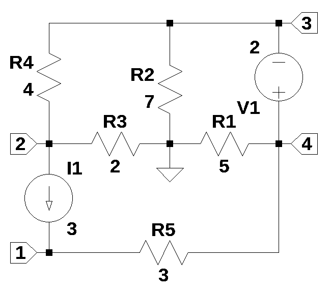
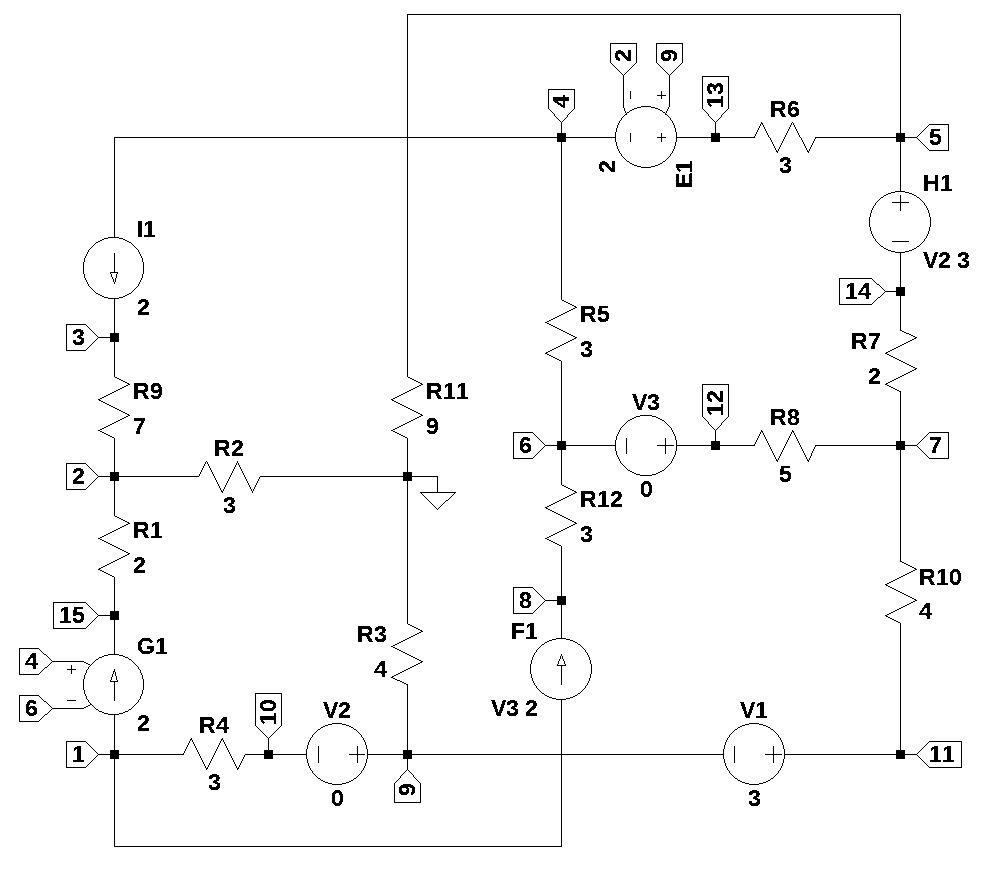
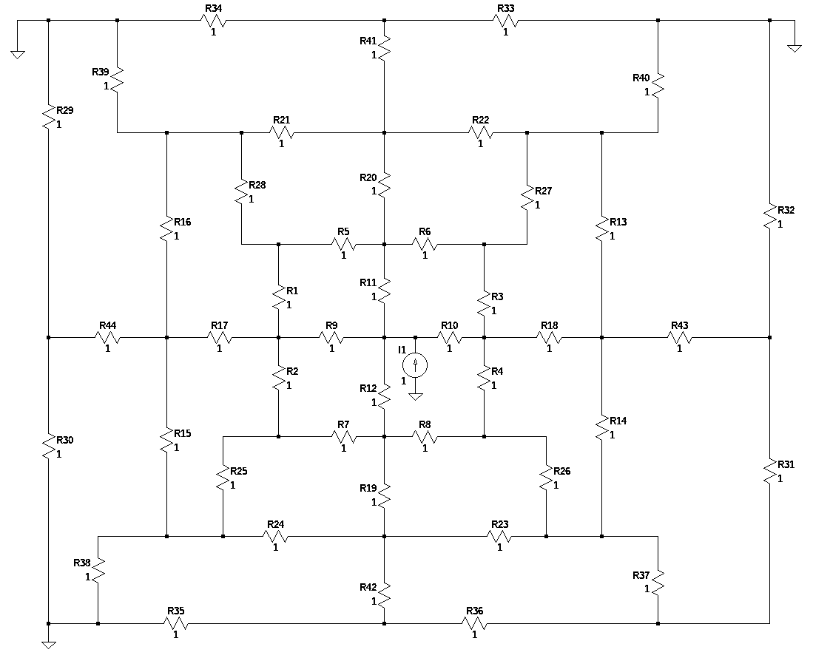

from sympy import *
import numpy as np
from tabulate import tabulate
from scipy import signal
import matplotlib.pyplot as plt
import pandas as pd
import SymMNA
from IPython.display import display, Markdown, Math, Latex
init_printing()5 Resistive Networks
This chapter focuses on the analysis of electric circuits containing independed sources, dependent sources and resistors. The simplest and most common circuit element is the resistor. Many principles of circuit analysis can be explored by considereing circuits that only have components that don’t store energy and are frequency independent.
The study and analysis of resistive circuits can serve as an introduction to the essential framework for understanding how energy is distributed and controlled in nearly every electronic device by applying Ohm’s Law and Kirchhoff’s Laws to predict how electric current will flow in resistive circuits. For circuits having many nodes or branches, modified nodal analysis is an algorithmic method which can be used to obtain network equations for almost any electric circuit.
import re
import randomThis chapter examines several resistive circuits, each selected to illustrate different facets of circuit analysis and the corresponding techniques required to solve them. These examples illustrate the variety of complexity encountered in circuit theory, ranging from problems easily handled by manual calculation to those necessitating algorithmic, computer-aided methods.
| Example | Description |
|---|---|
| Circuit 1 | Five resistors, two independent sources and four nodes. |
| Circuit 2 | Nonplanar topology with 12 resistors, 3 independent voltage sources (2 set to zero for measurement), 1 independent current source, and 4 dependent sources. |
| Circuit 3 | A circuit having 45 branches, 22 nodes and 44 resistors. |
5.1 Circuit Example 1
The circuit shown in the schematic below has five reisistors and two indpendent sources, \(V_1\) and \(I_1\). The schematics was drawn using LTSpice and the netlist was copied by using the View/SPICE netlist command.
The circuit has four nodes and a solution by pencil and paper is doable on a circuit of this size. The system of equations obtained by either node or loop analysis could be solved by hand or on a scientific calculator. Solutions to the network equations are shown in the example.
The circuit is notable in that neither \(V_1\) or \(I_1\) are connected to the reference node. If loop equations are written for the circuit, two equations can describe the operation of the circuit. If node equations are written, four equations are required and \(V_1\) will form a supernode between nodes 3 and 4. As show below, the MNA method will generate five equations. The increase in number of equations is the price paid for using an algorithmic method that can be implemented in computer code.

The circuit shown above is can be analyzed by hand with pencil and paper and is the type of problem students would encounter in an engineering circuit analysis classes.
5.1.0.1 Python MNA Solution
The schematic above was drawn using LTSpice and the netlist was obtained and copied below. The nodes were numbered in no particular order, except to keep \(V_1\) away from the reference node.
Load the net list of Figure 5.1.
net_list = '''
R1 0 4 5
R2 0 3 7
R3 0 2 2
R4 2 3 4
V1 4 3 2
I1 2 1 3
R5 1 4 3
'''Call the symbolic modified nodal analysis function, SymMNA.smna(net_list). The internals of this function were explained in Chapter 4. Several parameters are returned by the function, but only the matrices \(A\), \(X\) and \(Z\) are used in the analysis below.
report, network_df, i_unk_df, A, X, Z = SymMNA.smna(net_list)The \(A\) matrix is shown below. As describe in the introduction, it is compised of the \(G\), \(B\), \(C\) and \(M\) matricies.
\(\displaystyle \left[\begin{matrix}\frac{1}{R_{5}} & 0 & 0 & - \frac{1}{R_{5}} & 0\\0 & \frac{1}{R_{4}} + \frac{1}{R_{3}} & - \frac{1}{R_{4}} & 0 & 0\\0 & - \frac{1}{R_{4}} & \frac{1}{R_{4}} + \frac{1}{R_{2}} & 0 & -1\\- \frac{1}{R_{5}} & 0 & 0 & \frac{1}{R_{5}} + \frac{1}{R_{1}} & 1\\0 & 0 & -1 & 1 & 0\end{matrix}\right]\)
The \(X\) matrix contains the symbols for the unknown node voltages and the current from \(V_1\).
\(\displaystyle \left[ v_{1}, \ v_{2}, \ v_{3}, \ v_{4}, \ I_{V1}\right]\)
The \(Z\) matrix contains the symbols for the left side of the newtork equations.
\(\displaystyle \left[ I_{1}, \ - I_{1}, \ 0, \ 0, \ V_{1}\right]\)
The code below assembles the network equations from the MNA matrices and displays the equations.
# Put matrices into SymPy
X = Matrix(X)
Z = Matrix(Z)
NE_sym = Eq(A*X,Z)
# display the equations
temp = ''
for i in range(shape(NE_sym.lhs)[0]):
temp += '${:s} = {:s}$<br>'.format(latex(NE_sym.rhs[i]),latex(NE_sym.lhs[i]))
Markdown(temp)\(I_{1} = \frac{v_{1}}{R_{5}} - \frac{v_{4}}{R_{5}}\)
\(- I_{1} = v_{2} \cdot \left(\frac{1}{R_{4}} + \frac{1}{R_{3}}\right) - \frac{v_{3}}{R_{4}}\)
\(0 = - I_{V1} + v_{3} \cdot \left(\frac{1}{R_{4}} + \frac{1}{R_{2}}\right) - \frac{v_{2}}{R_{4}}\)
\(0 = I_{V1} + v_{4} \cdot \left(\frac{1}{R_{5}} + \frac{1}{R_{1}}\right) - \frac{v_{1}}{R_{5}}\)
\(V_{1} = - v_{3} + v_{4}\)
The free symbols are entered as SymPy variables and the element values are put into a dictionary.
var(str(NE_sym.free_symbols).replace('{','').replace('}',''))
element_values = SymMNA.get_part_values(network_df) # get element vales from netlistThe %%time below is an IPython magic command that will time the excution of the code in the cell. CPU times indicate the time spent in the CPU. Wall time is the total elapsed time, including any time spent waiting for resources.
The network equations for the netlist can be solved symbolically and the node voltages and dependent currents are displayed using symbolic notation.
%%time
U_sym = solve(NE_sym,X)CPU times: user 63.3 ms, sys: 0 ns, total: 63.3 ms
Wall time: 63.1 msDisplay the symbolic solution
temp = ''
for i in U_sym.keys():
temp += '${:s} = {:s}$<br>'.format(latex(i),latex(U_sym[i]))
Markdown(temp)\(v_{1} = \frac{I_{1} R_{1} R_{2} R_{4} + I_{1} R_{1} R_{2} R_{5} + I_{1} R_{1} R_{3} R_{5} + I_{1} R_{1} R_{4} R_{5} + I_{1} R_{2} R_{3} R_{5} + I_{1} R_{2} R_{4} R_{5} + R_{1} R_{2} V_{1} + R_{1} R_{3} V_{1} + R_{1} R_{4} V_{1}}{R_{1} R_{2} + R_{1} R_{3} + R_{1} R_{4} + R_{2} R_{3} + R_{2} R_{4}}\)
\(v_{2} = \frac{- I_{1} R_{1} R_{3} R_{4} - I_{1} R_{2} R_{3} R_{4} - R_{2} R_{3} V_{1}}{R_{1} R_{2} + R_{1} R_{3} + R_{1} R_{4} + R_{2} R_{3} + R_{2} R_{4}}\)
\(v_{3} = \frac{I_{1} R_{1} R_{2} R_{4} - R_{2} R_{3} V_{1} - R_{2} R_{4} V_{1}}{R_{1} R_{2} + R_{1} R_{3} + R_{1} R_{4} + R_{2} R_{3} + R_{2} R_{4}}\)
\(v_{4} = \frac{I_{1} R_{1} R_{2} R_{4} + R_{1} R_{2} V_{1} + R_{1} R_{3} V_{1} + R_{1} R_{4} V_{1}}{R_{1} R_{2} + R_{1} R_{3} + R_{1} R_{4} + R_{2} R_{3} + R_{2} R_{4}}\)
\(I_{V1} = \frac{I_{1} R_{1} R_{2} + I_{1} R_{1} R_{3} + I_{1} R_{1} R_{4} + I_{1} R_{2} R_{3} - R_{2} V_{1} - R_{3} V_{1} - R_{4} V_{1}}{R_{1} R_{2} + R_{1} R_{3} + R_{1} R_{4} + R_{2} R_{3} + R_{2} R_{4}}\)
Find the numerical solution for the node voltages by substituting the element values into the network equation and display the equations.
NE = NE_sym.subs(element_values)
temp = ''
for i in range(shape(NE.lhs)[0]):
temp += '${:s} = {:s}$<br>'.format(latex(NE.rhs[i]),latex(NE.lhs[i]))
Markdown(temp)\(3.0 = 0.333333333333333 v_{1} - 0.333333333333333 v_{4}\)
\(-3.0 = 0.75 v_{2} - 0.25 v_{3}\)
\(0 = - I_{V1} - 0.25 v_{2} + 0.392857142857143 v_{3}\)
\(0 = I_{V1} - 0.333333333333333 v_{1} + 0.533333333333333 v_{4}\)
\(2.0 = - v_{3} + v_{4}\)
Solve for voltages and currents.
%%time
U = solve(NE,X)CPU times: user 41.4 ms, sys: 109 µs, total: 41.5 ms
Wall time: 55 msDisplay the numerical solution using six digits to the right of the decimal so that results can be compared to the solution obtained from LTSpice.
table_header = ['unknowns', 'values','units']
table_row = []
for name, value in U.items():
if str(name)[0] == 'I':
unit = 'device current'
else:
unit = 'voltage'
table_row.append([str(name),float(value),str(unit)])
print(tabulate(table_row, headers=table_header,colalign = ('right','decimal','left'),
tablefmt="simple",floatfmt=('5s','.6f','20s'))) unknowns values units
---------- --------- --------------
v1 14.140187 voltage
v2 -2.953271 voltage
v3 3.140187 voltage
v4 5.140187 voltage
I_V1 1.971963 device currentThe Sympy generated solution matches the LTSpice results:
V(1): 14.1402 voltage
V(2): -2.95327 voltage
V(3): 3.14019 voltage
V(4): 5.14019 voltage
I(V1): 1.97196 device_current5.2 Example Circuit 3
The circuit shown in the schematic below is a nonplanar assembly of resistors, independent and dependent sources. The circuit can be visualized as a cube. The nodes 1, 2, 0, 9, 4, 5, 6, and 7 form the corners of a cube and the compoenets in the circuit are the edges of the cube. The junction of \(R_2\), \(R_{11}\) and \(R_3\) was arbitrailary chosen as the reference node.
The circuit has 12 resistors, 3 independent voltage sources, two of which are set to zero inorder to measure the current through the branch. There is one independent current source and there are 4 dependent sources, one of each type. It would be rather difficult and tedious to derive the network equations for this circuit by manual procedures employing either traditional nodal or loop analysis. In this example, the MNA procedure with SymPy can easily generate network equations and symbolically solve for the node voltages. As shown below the symbolic expressions can be very long and do not provide much insight into the circuit’s behavor.

Additionally, the most efficient way to generate netlists is from a schematic capture program. If the schematic is drawn corretly, the netlist will be correct.
Load the net list
net_list = '''
R1 2 15 2
R2 0 2 3
R3 9 0 4
R4 1 10 3
R5 4 6 3
R6 5 13 3
R7 7 14 2
R8 12 7 5
R9 3 2 7
R10 7 11 4
R11 5 0 9
R12 6 8 3
I1 4 3 2
V1 11 9 3
E1 13 4 9 2 2
F1 1 8 V3 2
G1 1 15 4 7 3
H1 5 14 V2 3
V2 9 10 0
V3 12 6 0
'''Call the symbolic modified nodal analysis function
report, network_df, i_unk_df, A, X, Z = SymMNA.smna(net_list)Why no \(I_{G1}\) ?
Display the equations
# reform X and Z into Matrix type for printing
Xp = Matrix(X)
Zp = Matrix(Z)
temp = ''
for i in range(len(X)):
temp += '${:s}$<br>'.format(latex(Eq((A*Xp)[i:i+1][0],Zp[i])))
Markdown(temp)\(I_{F1} + g_{1} v_{4} - g_{1} v_{7} + \frac{v_{1}}{R_{4}} - \frac{v_{10}}{R_{4}} = 0\)
\(v_{2} \cdot \left(\frac{1}{R_{9}} + \frac{1}{R_{2}} + \frac{1}{R_{1}}\right) - \frac{v_{3}}{R_{9}} - \frac{v_{15}}{R_{1}} = 0\)
\(- \frac{v_{2}}{R_{9}} + \frac{v_{3}}{R_{9}} = I_{1}\)
\(- I_{Ea1} + \frac{v_{4}}{R_{5}} - \frac{v_{6}}{R_{5}} = - I_{1}\)
\(I_{H1} + v_{5} \cdot \left(\frac{1}{R_{6}} + \frac{1}{R_{11}}\right) - \frac{v_{13}}{R_{6}} = 0\)
\(- I_{V3} + v_{6} \cdot \left(\frac{1}{R_{5}} + \frac{1}{R_{12}}\right) - \frac{v_{4}}{R_{5}} - \frac{v_{8}}{R_{12}} = 0\)
\(v_{7} \cdot \left(\frac{1}{R_{8}} + \frac{1}{R_{7}} + \frac{1}{R_{10}}\right) - \frac{v_{12}}{R_{8}} - \frac{v_{14}}{R_{7}} - \frac{v_{11}}{R_{10}} = 0\)
\(- I_{F1} - \frac{v_{6}}{R_{12}} + \frac{v_{8}}{R_{12}} = 0\)
\(- I_{V1} + I_{V2} + \frac{v_{9}}{R_{3}} = 0\)
\(- I_{V2} - \frac{v_{1}}{R_{4}} + \frac{v_{10}}{R_{4}} = 0\)
\(I_{V1} + \frac{v_{11}}{R_{10}} - \frac{v_{7}}{R_{10}} = 0\)
\(I_{V3} + \frac{v_{12}}{R_{8}} - \frac{v_{7}}{R_{8}} = 0\)
\(I_{Ea1} + \frac{v_{13}}{R_{6}} - \frac{v_{5}}{R_{6}} = 0\)
\(- I_{H1} + \frac{v_{14}}{R_{7}} - \frac{v_{7}}{R_{7}} = 0\)
\(- g_{1} v_{4} + g_{1} v_{7} + \frac{v_{15}}{R_{1}} - \frac{v_{2}}{R_{1}} = 0\)
\(v_{11} - v_{9} = V_{1}\)
\(- v_{10} + v_{9} = V_{2}\)
\(v_{12} - v_{6} = V_{3}\)
\(ea_{1} v_{2} - ea_{1} v_{9} + v_{13} - v_{4} = 0\)
\(I_{F1} - I_{V3} f_{1} = 0\)
\(- I_{V2} h_{1} - v_{14} + v_{5} = 0\)
Build the network equations
# Put matrices into SymPy
X = Matrix(X)
Z = Matrix(Z)
NE_sym = Eq(A*X,Z)Turn the free symbols into SymPy variables.
var(str(NE_sym.free_symbols).replace('{','').replace('}',''))Symbolic solution
%%time
U_sym = solve(NE_sym,X)CPU times: user 55.3 s, sys: 8.57 ms, total: 55.3 s
Wall time: 55.3 sDisplay the symbolic solution.
temp = ''
for i in U_sym.keys():
temp += '${:s} = {:s}$<br>'.format(latex(i),latex(U_sym[i]))
Markdown(temp)\(v_{1} = \frac{I_{1} R_{10} R_{2} R_{3} R_{5} ea_{1} f_{1} g_{1} + I_{1} R_{10} R_{2} R_{3} R_{5} ea_{1} g_{1} + I_{1} R_{10} R_{2} R_{3} R_{8} ea_{1} g_{1} - I_{1} R_{10} R_{2} R_{3} ea_{1} f_{1} + I_{1} R_{10} R_{2} R_{4} R_{5} ea_{1} f_{1} g_{1} + I_{1} R_{10} R_{2} R_{4} R_{5} ea_{1} g_{1} + I_{1} R_{10} R_{2} R_{4} R_{8} ea_{1} g_{1} - I_{1} R_{10} R_{2} R_{4} ea_{1} f_{1} - I_{1} R_{10} R_{3} R_{5} R_{6} f_{1} g_{1} - I_{1} R_{10} R_{3} R_{5} R_{6} g_{1} - I_{1} R_{10} R_{3} R_{6} R_{8} g_{1} + I_{1} R_{10} R_{3} R_{6} f_{1} - I_{1} R_{10} R_{4} R_{5} R_{6} f_{1} g_{1} - I_{1} R_{10} R_{4} R_{5} R_{6} g_{1} - I_{1} R_{10} R_{4} R_{6} R_{8} g_{1} + I_{1} R_{10} R_{4} R_{6} f_{1} + I_{1} R_{11} R_{2} R_{4} R_{5} ea_{1} f_{1} g_{1} + I_{1} R_{11} R_{2} R_{4} R_{5} ea_{1} g_{1} + I_{1} R_{11} R_{2} R_{4} R_{8} ea_{1} g_{1} - I_{1} R_{11} R_{2} R_{4} ea_{1} f_{1} + I_{1} R_{11} R_{3} R_{4} R_{5} ea_{1} f_{1} g_{1} + I_{1} R_{11} R_{3} R_{4} R_{5} ea_{1} g_{1} + I_{1} R_{11} R_{3} R_{4} R_{8} ea_{1} g_{1} - I_{1} R_{11} R_{3} R_{4} ea_{1} f_{1} - I_{1} R_{11} R_{3} R_{5} R_{6} f_{1} g_{1} - I_{1} R_{11} R_{3} R_{5} R_{6} g_{1} - I_{1} R_{11} R_{3} R_{5} R_{7} f_{1} g_{1} - I_{1} R_{11} R_{3} R_{5} R_{7} g_{1} - I_{1} R_{11} R_{3} R_{5} f_{1} g_{1} h_{1} + I_{1} R_{11} R_{3} R_{5} f_{1} - I_{1} R_{11} R_{3} R_{5} g_{1} h_{1} + I_{1} R_{11} R_{3} R_{5} - I_{1} R_{11} R_{3} R_{6} R_{8} g_{1} + I_{1} R_{11} R_{3} R_{6} f_{1} + I_{1} R_{11} R_{3} R_{6} - I_{1} R_{11} R_{3} R_{7} R_{8} g_{1} + I_{1} R_{11} R_{3} R_{7} f_{1} + I_{1} R_{11} R_{3} R_{7} - I_{1} R_{11} R_{3} R_{8} g_{1} h_{1} + I_{1} R_{11} R_{3} R_{8} + I_{1} R_{11} R_{3} f_{1} h_{1} - I_{1} R_{11} R_{4} R_{5} R_{6} f_{1} g_{1} - I_{1} R_{11} R_{4} R_{5} R_{6} g_{1} - I_{1} R_{11} R_{4} R_{5} R_{7} f_{1} g_{1} - I_{1} R_{11} R_{4} R_{5} R_{7} g_{1} - I_{1} R_{11} R_{4} R_{6} R_{8} g_{1} + I_{1} R_{11} R_{4} R_{6} f_{1} - I_{1} R_{11} R_{4} R_{7} R_{8} g_{1} + I_{1} R_{11} R_{4} R_{7} f_{1} + I_{1} R_{2} R_{3} R_{4} R_{5} ea_{1} f_{1} g_{1} + I_{1} R_{2} R_{3} R_{4} R_{5} ea_{1} g_{1} + I_{1} R_{2} R_{3} R_{4} R_{8} ea_{1} g_{1} - I_{1} R_{2} R_{3} R_{4} ea_{1} f_{1} + I_{1} R_{2} R_{3} R_{5} R_{7} ea_{1} f_{1} g_{1} + I_{1} R_{2} R_{3} R_{5} R_{7} ea_{1} g_{1} + I_{1} R_{2} R_{3} R_{5} ea_{1} f_{1} g_{1} h_{1} + I_{1} R_{2} R_{3} R_{5} ea_{1} g_{1} h_{1} + I_{1} R_{2} R_{3} R_{7} R_{8} ea_{1} g_{1} - I_{1} R_{2} R_{3} R_{7} ea_{1} f_{1} - I_{1} R_{2} R_{3} R_{7} ea_{1} + I_{1} R_{2} R_{3} R_{8} ea_{1} g_{1} h_{1} - I_{1} R_{2} R_{3} ea_{1} f_{1} h_{1} + I_{1} R_{2} R_{4} R_{5} R_{7} ea_{1} f_{1} g_{1} + I_{1} R_{2} R_{4} R_{5} R_{7} ea_{1} g_{1} + I_{1} R_{2} R_{4} R_{7} R_{8} ea_{1} g_{1} - I_{1} R_{2} R_{4} R_{7} ea_{1} f_{1} - I_{1} R_{3} R_{4} R_{5} R_{6} f_{1} g_{1} - I_{1} R_{3} R_{4} R_{5} R_{6} g_{1} - I_{1} R_{3} R_{4} R_{6} R_{8} g_{1} + I_{1} R_{3} R_{4} R_{6} f_{1} - I_{1} R_{3} R_{5} R_{6} R_{7} f_{1} g_{1} - I_{1} R_{3} R_{5} R_{6} R_{7} g_{1} - I_{1} R_{3} R_{5} R_{6} f_{1} g_{1} h_{1} - I_{1} R_{3} R_{5} R_{6} g_{1} h_{1} - I_{1} R_{3} R_{6} R_{7} R_{8} g_{1} + I_{1} R_{3} R_{6} R_{7} f_{1} + I_{1} R_{3} R_{6} R_{7} - I_{1} R_{3} R_{6} R_{8} g_{1} h_{1} + I_{1} R_{3} R_{6} f_{1} h_{1} - I_{1} R_{4} R_{5} R_{6} R_{7} f_{1} g_{1} - I_{1} R_{4} R_{5} R_{6} R_{7} g_{1} - I_{1} R_{4} R_{6} R_{7} R_{8} g_{1} + I_{1} R_{4} R_{6} R_{7} f_{1} + R_{10} R_{2} R_{3} V_{3} ea_{1} f_{1} g_{1} + R_{10} R_{2} R_{4} V_{3} ea_{1} f_{1} g_{1} - R_{10} R_{2} R_{5} V_{2} ea_{1} f_{1} g_{1} - R_{10} R_{2} R_{5} V_{2} ea_{1} g_{1} - R_{10} R_{2} R_{8} V_{2} ea_{1} g_{1} - R_{10} R_{3} R_{5} V_{2} ea_{1} f_{1} g_{1} - R_{10} R_{3} R_{5} V_{2} ea_{1} g_{1} - R_{10} R_{3} R_{6} V_{3} f_{1} g_{1} - R_{10} R_{3} R_{6} V_{3} g_{1} - R_{10} R_{3} R_{7} V_{3} g_{1} - R_{10} R_{3} R_{8} V_{2} ea_{1} g_{1} + R_{10} R_{3} V_{2} ea_{1} f_{1} - R_{10} R_{3} V_{3} f_{1} - R_{10} R_{4} R_{6} V_{3} f_{1} g_{1} - R_{10} R_{4} R_{6} V_{3} g_{1} - R_{10} R_{4} R_{7} V_{3} g_{1} - R_{10} R_{4} V_{3} f_{1} - R_{10} R_{5} V_{2} f_{1} g_{1} h_{1} + R_{10} R_{5} V_{2} f_{1} - R_{10} R_{5} V_{2} g_{1} h_{1} + R_{10} R_{5} V_{2} + R_{10} R_{6} V_{2} f_{1} + R_{10} R_{6} V_{2} + R_{10} R_{7} V_{2} - R_{10} R_{8} V_{2} g_{1} h_{1} + R_{10} R_{8} V_{2} + R_{10} V_{2} f_{1} h_{1} + R_{11} R_{2} R_{4} V_{3} ea_{1} f_{1} g_{1} - R_{11} R_{2} R_{5} V_{2} ea_{1} f_{1} g_{1} - R_{11} R_{2} R_{5} V_{2} ea_{1} g_{1} - R_{11} R_{2} R_{8} V_{2} ea_{1} g_{1} + R_{11} R_{3} R_{4} V_{3} ea_{1} f_{1} g_{1} - R_{11} R_{3} R_{5} V_{2} ea_{1} f_{1} g_{1} - R_{11} R_{3} R_{5} V_{2} ea_{1} g_{1} - R_{11} R_{3} R_{6} V_{3} f_{1} g_{1} - R_{11} R_{3} R_{6} V_{3} g_{1} - R_{11} R_{3} R_{7} V_{3} f_{1} g_{1} - R_{11} R_{3} R_{7} V_{3} g_{1} - R_{11} R_{3} R_{8} V_{2} ea_{1} g_{1} - R_{11} R_{3} V_{3} f_{1} g_{1} h_{1} - R_{11} R_{4} R_{6} V_{3} f_{1} g_{1} - R_{11} R_{4} R_{6} V_{3} g_{1} - R_{11} R_{4} R_{7} V_{3} f_{1} g_{1} - R_{11} R_{4} R_{7} V_{3} g_{1} - R_{11} R_{4} V_{3} f_{1} - R_{11} R_{5} V_{2} f_{1} g_{1} h_{1} + R_{11} R_{5} V_{2} f_{1} - R_{11} R_{5} V_{2} g_{1} h_{1} + R_{11} R_{5} V_{2} + R_{11} R_{6} V_{2} f_{1} + R_{11} R_{6} V_{2} + R_{11} R_{7} V_{2} f_{1} + R_{11} R_{7} V_{2} - R_{11} R_{8} V_{2} g_{1} h_{1} + R_{11} R_{8} V_{2} + R_{11} V_{2} f_{1} h_{1} + R_{2} R_{3} R_{4} V_{3} ea_{1} f_{1} g_{1} - R_{2} R_{3} R_{5} V_{1} ea_{1} f_{1} g_{1} - R_{2} R_{3} R_{5} V_{1} ea_{1} g_{1} - R_{2} R_{3} R_{5} V_{2} ea_{1} f_{1} g_{1} - R_{2} R_{3} R_{5} V_{2} ea_{1} g_{1} + R_{2} R_{3} R_{7} V_{3} ea_{1} f_{1} g_{1} + R_{2} R_{3} R_{7} V_{3} ea_{1} g_{1} - R_{2} R_{3} R_{8} V_{1} ea_{1} g_{1} - R_{2} R_{3} R_{8} V_{2} ea_{1} g_{1} + R_{2} R_{3} V_{3} ea_{1} f_{1} g_{1} h_{1} + R_{2} R_{4} R_{7} V_{3} ea_{1} f_{1} g_{1} - R_{2} R_{5} R_{7} V_{2} ea_{1} f_{1} g_{1} - R_{2} R_{5} R_{7} V_{2} ea_{1} g_{1} - R_{2} R_{7} R_{8} V_{2} ea_{1} g_{1} + R_{3} R_{4} R_{5} V_{1} ea_{1} f_{1} g_{1} + R_{3} R_{4} R_{5} V_{1} ea_{1} g_{1} - R_{3} R_{4} R_{6} V_{3} f_{1} g_{1} - R_{3} R_{4} R_{6} V_{3} g_{1} - R_{3} R_{4} R_{7} V_{3} ea_{1} g_{1} - R_{3} R_{4} R_{7} V_{3} g_{1} + R_{3} R_{4} R_{8} V_{1} ea_{1} g_{1} - R_{3} R_{4} V_{1} ea_{1} f_{1} - R_{3} R_{4} V_{3} f_{1} - R_{3} R_{5} R_{7} V_{1} f_{1} g_{1} - R_{3} R_{5} R_{7} V_{1} g_{1} - R_{3} R_{5} R_{7} V_{2} ea_{1} f_{1} g_{1} - R_{3} R_{5} R_{7} V_{2} ea_{1} g_{1} - R_{3} R_{5} R_{7} V_{2} f_{1} g_{1} - R_{3} R_{5} R_{7} V_{2} g_{1} - R_{3} R_{5} V_{1} f_{1} g_{1} h_{1} + R_{3} R_{5} V_{1} f_{1} - R_{3} R_{5} V_{1} g_{1} h_{1} + R_{3} R_{5} V_{1} - R_{3} R_{5} V_{2} ea_{1} f_{1} g_{1} h_{1} - R_{3} R_{5} V_{2} ea_{1} g_{1} h_{1} - R_{3} R_{5} V_{2} f_{1} g_{1} h_{1} + R_{3} R_{5} V_{2} f_{1} - R_{3} R_{5} V_{2} g_{1} h_{1} + R_{3} R_{5} V_{2} - R_{3} R_{6} R_{7} V_{3} f_{1} g_{1} - R_{3} R_{6} R_{7} V_{3} g_{1} + R_{3} R_{6} V_{1} f_{1} + R_{3} R_{6} V_{1} + R_{3} R_{6} V_{2} f_{1} + R_{3} R_{6} V_{2} - R_{3} R_{6} V_{3} f_{1} g_{1} h_{1} - R_{3} R_{6} V_{3} g_{1} h_{1} - R_{3} R_{7} R_{8} V_{1} g_{1} - R_{3} R_{7} R_{8} V_{2} ea_{1} g_{1} - R_{3} R_{7} R_{8} V_{2} g_{1} + R_{3} R_{7} V_{1} f_{1} + R_{3} R_{7} V_{1} + R_{3} R_{7} V_{2} ea_{1} f_{1} + R_{3} R_{7} V_{2} ea_{1} + R_{3} R_{7} V_{2} f_{1} + R_{3} R_{7} V_{2} - R_{3} R_{7} V_{3} f_{1} - R_{3} R_{7} V_{3} - R_{3} R_{8} V_{1} g_{1} h_{1} + R_{3} R_{8} V_{1} - R_{3} R_{8} V_{2} ea_{1} g_{1} h_{1} - R_{3} R_{8} V_{2} g_{1} h_{1} + R_{3} R_{8} V_{2} + R_{3} V_{1} f_{1} h_{1} + R_{3} V_{2} ea_{1} f_{1} h_{1} + R_{3} V_{2} f_{1} h_{1} - R_{3} V_{3} f_{1} h_{1} - R_{4} R_{5} R_{7} V_{1} f_{1} g_{1} - R_{4} R_{5} R_{7} V_{1} g_{1} - R_{4} R_{6} R_{7} V_{3} f_{1} g_{1} - R_{4} R_{6} R_{7} V_{3} g_{1} - R_{4} R_{7} R_{8} V_{1} g_{1} + R_{4} R_{7} V_{1} f_{1} - R_{4} R_{7} V_{3} f_{1} + R_{5} R_{7} V_{2} f_{1} + R_{5} R_{7} V_{2} + R_{6} R_{7} V_{2} f_{1} + R_{6} R_{7} V_{2} + R_{7} R_{8} V_{2}}{R_{10} R_{2} R_{5} ea_{1} f_{1} g_{1} + R_{10} R_{2} R_{5} ea_{1} g_{1} + R_{10} R_{2} R_{8} ea_{1} g_{1} + R_{10} R_{3} R_{5} ea_{1} f_{1} g_{1} + R_{10} R_{3} R_{5} ea_{1} g_{1} + R_{10} R_{3} R_{8} ea_{1} g_{1} - R_{10} R_{3} ea_{1} f_{1} + R_{10} R_{5} f_{1} g_{1} h_{1} - R_{10} R_{5} f_{1} + R_{10} R_{5} g_{1} h_{1} - R_{10} R_{5} - R_{10} R_{6} f_{1} - R_{10} R_{6} - R_{10} R_{7} + R_{10} R_{8} g_{1} h_{1} - R_{10} R_{8} - R_{10} f_{1} h_{1} + R_{11} R_{2} R_{5} ea_{1} f_{1} g_{1} + R_{11} R_{2} R_{5} ea_{1} g_{1} + R_{11} R_{2} R_{8} ea_{1} g_{1} + R_{11} R_{3} R_{5} ea_{1} f_{1} g_{1} + R_{11} R_{3} R_{5} ea_{1} g_{1} + R_{11} R_{3} R_{8} ea_{1} g_{1} + R_{11} R_{5} f_{1} g_{1} h_{1} - R_{11} R_{5} f_{1} + R_{11} R_{5} g_{1} h_{1} - R_{11} R_{5} - R_{11} R_{6} f_{1} - R_{11} R_{6} - R_{11} R_{7} f_{1} - R_{11} R_{7} + R_{11} R_{8} g_{1} h_{1} - R_{11} R_{8} - R_{11} f_{1} h_{1} + R_{2} R_{3} R_{5} ea_{1} f_{1} g_{1} + R_{2} R_{3} R_{5} ea_{1} g_{1} + R_{2} R_{3} R_{8} ea_{1} g_{1} + R_{2} R_{5} R_{7} ea_{1} f_{1} g_{1} + R_{2} R_{5} R_{7} ea_{1} g_{1} + R_{2} R_{7} R_{8} ea_{1} g_{1} + R_{3} R_{5} R_{7} ea_{1} f_{1} g_{1} + R_{3} R_{5} R_{7} ea_{1} g_{1} + R_{3} R_{5} R_{7} f_{1} g_{1} + R_{3} R_{5} R_{7} g_{1} + R_{3} R_{5} ea_{1} f_{1} g_{1} h_{1} + R_{3} R_{5} ea_{1} g_{1} h_{1} + R_{3} R_{5} f_{1} g_{1} h_{1} - R_{3} R_{5} f_{1} + R_{3} R_{5} g_{1} h_{1} - R_{3} R_{5} - R_{3} R_{6} f_{1} - R_{3} R_{6} + R_{3} R_{7} R_{8} ea_{1} g_{1} + R_{3} R_{7} R_{8} g_{1} - R_{3} R_{7} ea_{1} f_{1} - R_{3} R_{7} ea_{1} - R_{3} R_{7} f_{1} - R_{3} R_{7} + R_{3} R_{8} ea_{1} g_{1} h_{1} + R_{3} R_{8} g_{1} h_{1} - R_{3} R_{8} - R_{3} ea_{1} f_{1} h_{1} - R_{3} f_{1} h_{1} - R_{5} R_{7} f_{1} - R_{5} R_{7} - R_{6} R_{7} f_{1} - R_{6} R_{7} - R_{7} R_{8}}\)
\(v_{2} = \frac{I_{1} R_{10} R_{2} R_{3} R_{5} ea_{1} f_{1} g_{1} + I_{1} R_{10} R_{2} R_{3} R_{5} ea_{1} g_{1} + I_{1} R_{10} R_{2} R_{3} R_{8} ea_{1} g_{1} - I_{1} R_{10} R_{2} R_{3} ea_{1} f_{1} + I_{1} R_{10} R_{2} R_{5} R_{6} f_{1} g_{1} + I_{1} R_{10} R_{2} R_{5} R_{6} g_{1} + I_{1} R_{10} R_{2} R_{5} f_{1} g_{1} h_{1} - I_{1} R_{10} R_{2} R_{5} f_{1} + I_{1} R_{10} R_{2} R_{5} g_{1} h_{1} - I_{1} R_{10} R_{2} R_{5} + I_{1} R_{10} R_{2} R_{6} R_{8} g_{1} - I_{1} R_{10} R_{2} R_{6} f_{1} - I_{1} R_{10} R_{2} R_{6} - I_{1} R_{10} R_{2} R_{7} + I_{1} R_{10} R_{2} R_{8} g_{1} h_{1} - I_{1} R_{10} R_{2} R_{8} - I_{1} R_{10} R_{2} f_{1} h_{1} + I_{1} R_{11} R_{2} R_{5} R_{6} f_{1} g_{1} + I_{1} R_{11} R_{2} R_{5} R_{6} g_{1} + I_{1} R_{11} R_{2} R_{5} R_{7} f_{1} g_{1} + I_{1} R_{11} R_{2} R_{5} R_{7} g_{1} + I_{1} R_{11} R_{2} R_{5} f_{1} g_{1} h_{1} - I_{1} R_{11} R_{2} R_{5} f_{1} + I_{1} R_{11} R_{2} R_{5} g_{1} h_{1} - I_{1} R_{11} R_{2} R_{5} + I_{1} R_{11} R_{2} R_{6} R_{8} g_{1} - I_{1} R_{11} R_{2} R_{6} f_{1} - I_{1} R_{11} R_{2} R_{6} + I_{1} R_{11} R_{2} R_{7} R_{8} g_{1} - I_{1} R_{11} R_{2} R_{7} f_{1} - I_{1} R_{11} R_{2} R_{7} + I_{1} R_{11} R_{2} R_{8} g_{1} h_{1} - I_{1} R_{11} R_{2} R_{8} - I_{1} R_{11} R_{2} f_{1} h_{1} + I_{1} R_{2} R_{3} R_{5} R_{6} f_{1} g_{1} + I_{1} R_{2} R_{3} R_{5} R_{6} g_{1} + I_{1} R_{2} R_{3} R_{5} R_{7} ea_{1} f_{1} g_{1} + I_{1} R_{2} R_{3} R_{5} R_{7} ea_{1} g_{1} + I_{1} R_{2} R_{3} R_{5} R_{7} f_{1} g_{1} + I_{1} R_{2} R_{3} R_{5} R_{7} g_{1} + I_{1} R_{2} R_{3} R_{5} ea_{1} f_{1} g_{1} h_{1} + I_{1} R_{2} R_{3} R_{5} ea_{1} g_{1} h_{1} + I_{1} R_{2} R_{3} R_{5} f_{1} g_{1} h_{1} - I_{1} R_{2} R_{3} R_{5} f_{1} + I_{1} R_{2} R_{3} R_{5} g_{1} h_{1} - I_{1} R_{2} R_{3} R_{5} + I_{1} R_{2} R_{3} R_{6} R_{8} g_{1} - I_{1} R_{2} R_{3} R_{6} f_{1} - I_{1} R_{2} R_{3} R_{6} + I_{1} R_{2} R_{3} R_{7} R_{8} ea_{1} g_{1} + I_{1} R_{2} R_{3} R_{7} R_{8} g_{1} - I_{1} R_{2} R_{3} R_{7} ea_{1} f_{1} - I_{1} R_{2} R_{3} R_{7} ea_{1} - I_{1} R_{2} R_{3} R_{7} f_{1} - I_{1} R_{2} R_{3} R_{7} + I_{1} R_{2} R_{3} R_{8} ea_{1} g_{1} h_{1} + I_{1} R_{2} R_{3} R_{8} g_{1} h_{1} - I_{1} R_{2} R_{3} R_{8} - I_{1} R_{2} R_{3} ea_{1} f_{1} h_{1} - I_{1} R_{2} R_{3} f_{1} h_{1} + I_{1} R_{2} R_{5} R_{6} R_{7} f_{1} g_{1} + I_{1} R_{2} R_{5} R_{6} R_{7} g_{1} - I_{1} R_{2} R_{5} R_{7} f_{1} - I_{1} R_{2} R_{5} R_{7} + I_{1} R_{2} R_{6} R_{7} R_{8} g_{1} - I_{1} R_{2} R_{6} R_{7} f_{1} - I_{1} R_{2} R_{6} R_{7} - I_{1} R_{2} R_{7} R_{8} + R_{10} R_{2} R_{3} V_{3} ea_{1} f_{1} g_{1} + R_{10} R_{2} R_{6} V_{3} f_{1} g_{1} + R_{10} R_{2} R_{6} V_{3} g_{1} + R_{10} R_{2} R_{7} V_{3} g_{1} + R_{10} R_{2} V_{3} f_{1} g_{1} h_{1} + R_{11} R_{2} R_{6} V_{3} f_{1} g_{1} + R_{11} R_{2} R_{6} V_{3} g_{1} + R_{11} R_{2} R_{7} V_{3} f_{1} g_{1} + R_{11} R_{2} R_{7} V_{3} g_{1} + R_{11} R_{2} V_{3} f_{1} g_{1} h_{1} - R_{2} R_{3} R_{5} V_{1} ea_{1} f_{1} g_{1} - R_{2} R_{3} R_{5} V_{1} ea_{1} g_{1} + R_{2} R_{3} R_{6} V_{3} f_{1} g_{1} + R_{2} R_{3} R_{6} V_{3} g_{1} + R_{2} R_{3} R_{7} V_{3} ea_{1} f_{1} g_{1} + R_{2} R_{3} R_{7} V_{3} ea_{1} g_{1} + R_{2} R_{3} R_{7} V_{3} f_{1} g_{1} + R_{2} R_{3} R_{7} V_{3} g_{1} - R_{2} R_{3} R_{8} V_{1} ea_{1} g_{1} + R_{2} R_{3} V_{3} ea_{1} f_{1} g_{1} h_{1} + R_{2} R_{3} V_{3} f_{1} g_{1} h_{1} + R_{2} R_{5} R_{7} V_{1} f_{1} g_{1} + R_{2} R_{5} R_{7} V_{1} g_{1} + R_{2} R_{6} R_{7} V_{3} f_{1} g_{1} + R_{2} R_{6} R_{7} V_{3} g_{1} + R_{2} R_{7} R_{8} V_{1} g_{1}}{R_{10} R_{2} R_{5} ea_{1} f_{1} g_{1} + R_{10} R_{2} R_{5} ea_{1} g_{1} + R_{10} R_{2} R_{8} ea_{1} g_{1} + R_{10} R_{3} R_{5} ea_{1} f_{1} g_{1} + R_{10} R_{3} R_{5} ea_{1} g_{1} + R_{10} R_{3} R_{8} ea_{1} g_{1} - R_{10} R_{3} ea_{1} f_{1} + R_{10} R_{5} f_{1} g_{1} h_{1} - R_{10} R_{5} f_{1} + R_{10} R_{5} g_{1} h_{1} - R_{10} R_{5} - R_{10} R_{6} f_{1} - R_{10} R_{6} - R_{10} R_{7} + R_{10} R_{8} g_{1} h_{1} - R_{10} R_{8} - R_{10} f_{1} h_{1} + R_{11} R_{2} R_{5} ea_{1} f_{1} g_{1} + R_{11} R_{2} R_{5} ea_{1} g_{1} + R_{11} R_{2} R_{8} ea_{1} g_{1} + R_{11} R_{3} R_{5} ea_{1} f_{1} g_{1} + R_{11} R_{3} R_{5} ea_{1} g_{1} + R_{11} R_{3} R_{8} ea_{1} g_{1} + R_{11} R_{5} f_{1} g_{1} h_{1} - R_{11} R_{5} f_{1} + R_{11} R_{5} g_{1} h_{1} - R_{11} R_{5} - R_{11} R_{6} f_{1} - R_{11} R_{6} - R_{11} R_{7} f_{1} - R_{11} R_{7} + R_{11} R_{8} g_{1} h_{1} - R_{11} R_{8} - R_{11} f_{1} h_{1} + R_{2} R_{3} R_{5} ea_{1} f_{1} g_{1} + R_{2} R_{3} R_{5} ea_{1} g_{1} + R_{2} R_{3} R_{8} ea_{1} g_{1} + R_{2} R_{5} R_{7} ea_{1} f_{1} g_{1} + R_{2} R_{5} R_{7} ea_{1} g_{1} + R_{2} R_{7} R_{8} ea_{1} g_{1} + R_{3} R_{5} R_{7} ea_{1} f_{1} g_{1} + R_{3} R_{5} R_{7} ea_{1} g_{1} + R_{3} R_{5} R_{7} f_{1} g_{1} + R_{3} R_{5} R_{7} g_{1} + R_{3} R_{5} ea_{1} f_{1} g_{1} h_{1} + R_{3} R_{5} ea_{1} g_{1} h_{1} + R_{3} R_{5} f_{1} g_{1} h_{1} - R_{3} R_{5} f_{1} + R_{3} R_{5} g_{1} h_{1} - R_{3} R_{5} - R_{3} R_{6} f_{1} - R_{3} R_{6} + R_{3} R_{7} R_{8} ea_{1} g_{1} + R_{3} R_{7} R_{8} g_{1} - R_{3} R_{7} ea_{1} f_{1} - R_{3} R_{7} ea_{1} - R_{3} R_{7} f_{1} - R_{3} R_{7} + R_{3} R_{8} ea_{1} g_{1} h_{1} + R_{3} R_{8} g_{1} h_{1} - R_{3} R_{8} - R_{3} ea_{1} f_{1} h_{1} - R_{3} f_{1} h_{1} - R_{5} R_{7} f_{1} - R_{5} R_{7} - R_{6} R_{7} f_{1} - R_{6} R_{7} - R_{7} R_{8}}\)
\(v_{3} = \frac{I_{1} R_{10} R_{2} R_{3} R_{5} ea_{1} f_{1} g_{1} + I_{1} R_{10} R_{2} R_{3} R_{5} ea_{1} g_{1} + I_{1} R_{10} R_{2} R_{3} R_{8} ea_{1} g_{1} - I_{1} R_{10} R_{2} R_{3} ea_{1} f_{1} + I_{1} R_{10} R_{2} R_{5} R_{6} f_{1} g_{1} + I_{1} R_{10} R_{2} R_{5} R_{6} g_{1} + I_{1} R_{10} R_{2} R_{5} R_{9} ea_{1} f_{1} g_{1} + I_{1} R_{10} R_{2} R_{5} R_{9} ea_{1} g_{1} + I_{1} R_{10} R_{2} R_{5} f_{1} g_{1} h_{1} - I_{1} R_{10} R_{2} R_{5} f_{1} + I_{1} R_{10} R_{2} R_{5} g_{1} h_{1} - I_{1} R_{10} R_{2} R_{5} + I_{1} R_{10} R_{2} R_{6} R_{8} g_{1} - I_{1} R_{10} R_{2} R_{6} f_{1} - I_{1} R_{10} R_{2} R_{6} - I_{1} R_{10} R_{2} R_{7} + I_{1} R_{10} R_{2} R_{8} R_{9} ea_{1} g_{1} + I_{1} R_{10} R_{2} R_{8} g_{1} h_{1} - I_{1} R_{10} R_{2} R_{8} - I_{1} R_{10} R_{2} f_{1} h_{1} + I_{1} R_{10} R_{3} R_{5} R_{9} ea_{1} f_{1} g_{1} + I_{1} R_{10} R_{3} R_{5} R_{9} ea_{1} g_{1} + I_{1} R_{10} R_{3} R_{8} R_{9} ea_{1} g_{1} - I_{1} R_{10} R_{3} R_{9} ea_{1} f_{1} + I_{1} R_{10} R_{5} R_{9} f_{1} g_{1} h_{1} - I_{1} R_{10} R_{5} R_{9} f_{1} + I_{1} R_{10} R_{5} R_{9} g_{1} h_{1} - I_{1} R_{10} R_{5} R_{9} - I_{1} R_{10} R_{6} R_{9} f_{1} - I_{1} R_{10} R_{6} R_{9} - I_{1} R_{10} R_{7} R_{9} + I_{1} R_{10} R_{8} R_{9} g_{1} h_{1} - I_{1} R_{10} R_{8} R_{9} - I_{1} R_{10} R_{9} f_{1} h_{1} + I_{1} R_{11} R_{2} R_{5} R_{6} f_{1} g_{1} + I_{1} R_{11} R_{2} R_{5} R_{6} g_{1} + I_{1} R_{11} R_{2} R_{5} R_{7} f_{1} g_{1} + I_{1} R_{11} R_{2} R_{5} R_{7} g_{1} + I_{1} R_{11} R_{2} R_{5} R_{9} ea_{1} f_{1} g_{1} + I_{1} R_{11} R_{2} R_{5} R_{9} ea_{1} g_{1} + I_{1} R_{11} R_{2} R_{5} f_{1} g_{1} h_{1} - I_{1} R_{11} R_{2} R_{5} f_{1} + I_{1} R_{11} R_{2} R_{5} g_{1} h_{1} - I_{1} R_{11} R_{2} R_{5} + I_{1} R_{11} R_{2} R_{6} R_{8} g_{1} - I_{1} R_{11} R_{2} R_{6} f_{1} - I_{1} R_{11} R_{2} R_{6} + I_{1} R_{11} R_{2} R_{7} R_{8} g_{1} - I_{1} R_{11} R_{2} R_{7} f_{1} - I_{1} R_{11} R_{2} R_{7} + I_{1} R_{11} R_{2} R_{8} R_{9} ea_{1} g_{1} + I_{1} R_{11} R_{2} R_{8} g_{1} h_{1} - I_{1} R_{11} R_{2} R_{8} - I_{1} R_{11} R_{2} f_{1} h_{1} + I_{1} R_{11} R_{3} R_{5} R_{9} ea_{1} f_{1} g_{1} + I_{1} R_{11} R_{3} R_{5} R_{9} ea_{1} g_{1} + I_{1} R_{11} R_{3} R_{8} R_{9} ea_{1} g_{1} + I_{1} R_{11} R_{5} R_{9} f_{1} g_{1} h_{1} - I_{1} R_{11} R_{5} R_{9} f_{1} + I_{1} R_{11} R_{5} R_{9} g_{1} h_{1} - I_{1} R_{11} R_{5} R_{9} - I_{1} R_{11} R_{6} R_{9} f_{1} - I_{1} R_{11} R_{6} R_{9} - I_{1} R_{11} R_{7} R_{9} f_{1} - I_{1} R_{11} R_{7} R_{9} + I_{1} R_{11} R_{8} R_{9} g_{1} h_{1} - I_{1} R_{11} R_{8} R_{9} - I_{1} R_{11} R_{9} f_{1} h_{1} + I_{1} R_{2} R_{3} R_{5} R_{6} f_{1} g_{1} + I_{1} R_{2} R_{3} R_{5} R_{6} g_{1} + I_{1} R_{2} R_{3} R_{5} R_{7} ea_{1} f_{1} g_{1} + I_{1} R_{2} R_{3} R_{5} R_{7} ea_{1} g_{1} + I_{1} R_{2} R_{3} R_{5} R_{7} f_{1} g_{1} + I_{1} R_{2} R_{3} R_{5} R_{7} g_{1} + I_{1} R_{2} R_{3} R_{5} R_{9} ea_{1} f_{1} g_{1} + I_{1} R_{2} R_{3} R_{5} R_{9} ea_{1} g_{1} + I_{1} R_{2} R_{3} R_{5} ea_{1} f_{1} g_{1} h_{1} + I_{1} R_{2} R_{3} R_{5} ea_{1} g_{1} h_{1} + I_{1} R_{2} R_{3} R_{5} f_{1} g_{1} h_{1} - I_{1} R_{2} R_{3} R_{5} f_{1} + I_{1} R_{2} R_{3} R_{5} g_{1} h_{1} - I_{1} R_{2} R_{3} R_{5} + I_{1} R_{2} R_{3} R_{6} R_{8} g_{1} - I_{1} R_{2} R_{3} R_{6} f_{1} - I_{1} R_{2} R_{3} R_{6} + I_{1} R_{2} R_{3} R_{7} R_{8} ea_{1} g_{1} + I_{1} R_{2} R_{3} R_{7} R_{8} g_{1} - I_{1} R_{2} R_{3} R_{7} ea_{1} f_{1} - I_{1} R_{2} R_{3} R_{7} ea_{1} - I_{1} R_{2} R_{3} R_{7} f_{1} - I_{1} R_{2} R_{3} R_{7} + I_{1} R_{2} R_{3} R_{8} R_{9} ea_{1} g_{1} + I_{1} R_{2} R_{3} R_{8} ea_{1} g_{1} h_{1} + I_{1} R_{2} R_{3} R_{8} g_{1} h_{1} - I_{1} R_{2} R_{3} R_{8} - I_{1} R_{2} R_{3} ea_{1} f_{1} h_{1} - I_{1} R_{2} R_{3} f_{1} h_{1} + I_{1} R_{2} R_{5} R_{6} R_{7} f_{1} g_{1} + I_{1} R_{2} R_{5} R_{6} R_{7} g_{1} + I_{1} R_{2} R_{5} R_{7} R_{9} ea_{1} f_{1} g_{1} + I_{1} R_{2} R_{5} R_{7} R_{9} ea_{1} g_{1} - I_{1} R_{2} R_{5} R_{7} f_{1} - I_{1} R_{2} R_{5} R_{7} + I_{1} R_{2} R_{6} R_{7} R_{8} g_{1} - I_{1} R_{2} R_{6} R_{7} f_{1} - I_{1} R_{2} R_{6} R_{7} + I_{1} R_{2} R_{7} R_{8} R_{9} ea_{1} g_{1} - I_{1} R_{2} R_{7} R_{8} + I_{1} R_{3} R_{5} R_{7} R_{9} ea_{1} f_{1} g_{1} + I_{1} R_{3} R_{5} R_{7} R_{9} ea_{1} g_{1} + I_{1} R_{3} R_{5} R_{7} R_{9} f_{1} g_{1} + I_{1} R_{3} R_{5} R_{7} R_{9} g_{1} + I_{1} R_{3} R_{5} R_{9} ea_{1} f_{1} g_{1} h_{1} + I_{1} R_{3} R_{5} R_{9} ea_{1} g_{1} h_{1} + I_{1} R_{3} R_{5} R_{9} f_{1} g_{1} h_{1} - I_{1} R_{3} R_{5} R_{9} f_{1} + I_{1} R_{3} R_{5} R_{9} g_{1} h_{1} - I_{1} R_{3} R_{5} R_{9} - I_{1} R_{3} R_{6} R_{9} f_{1} - I_{1} R_{3} R_{6} R_{9} + I_{1} R_{3} R_{7} R_{8} R_{9} ea_{1} g_{1} + I_{1} R_{3} R_{7} R_{8} R_{9} g_{1} - I_{1} R_{3} R_{7} R_{9} ea_{1} f_{1} - I_{1} R_{3} R_{7} R_{9} ea_{1} - I_{1} R_{3} R_{7} R_{9} f_{1} - I_{1} R_{3} R_{7} R_{9} + I_{1} R_{3} R_{8} R_{9} ea_{1} g_{1} h_{1} + I_{1} R_{3} R_{8} R_{9} g_{1} h_{1} - I_{1} R_{3} R_{8} R_{9} - I_{1} R_{3} R_{9} ea_{1} f_{1} h_{1} - I_{1} R_{3} R_{9} f_{1} h_{1} - I_{1} R_{5} R_{7} R_{9} f_{1} - I_{1} R_{5} R_{7} R_{9} - I_{1} R_{6} R_{7} R_{9} f_{1} - I_{1} R_{6} R_{7} R_{9} - I_{1} R_{7} R_{8} R_{9} + R_{10} R_{2} R_{3} V_{3} ea_{1} f_{1} g_{1} + R_{10} R_{2} R_{6} V_{3} f_{1} g_{1} + R_{10} R_{2} R_{6} V_{3} g_{1} + R_{10} R_{2} R_{7} V_{3} g_{1} + R_{10} R_{2} V_{3} f_{1} g_{1} h_{1} + R_{11} R_{2} R_{6} V_{3} f_{1} g_{1} + R_{11} R_{2} R_{6} V_{3} g_{1} + R_{11} R_{2} R_{7} V_{3} f_{1} g_{1} + R_{11} R_{2} R_{7} V_{3} g_{1} + R_{11} R_{2} V_{3} f_{1} g_{1} h_{1} - R_{2} R_{3} R_{5} V_{1} ea_{1} f_{1} g_{1} - R_{2} R_{3} R_{5} V_{1} ea_{1} g_{1} + R_{2} R_{3} R_{6} V_{3} f_{1} g_{1} + R_{2} R_{3} R_{6} V_{3} g_{1} + R_{2} R_{3} R_{7} V_{3} ea_{1} f_{1} g_{1} + R_{2} R_{3} R_{7} V_{3} ea_{1} g_{1} + R_{2} R_{3} R_{7} V_{3} f_{1} g_{1} + R_{2} R_{3} R_{7} V_{3} g_{1} - R_{2} R_{3} R_{8} V_{1} ea_{1} g_{1} + R_{2} R_{3} V_{3} ea_{1} f_{1} g_{1} h_{1} + R_{2} R_{3} V_{3} f_{1} g_{1} h_{1} + R_{2} R_{5} R_{7} V_{1} f_{1} g_{1} + R_{2} R_{5} R_{7} V_{1} g_{1} + R_{2} R_{6} R_{7} V_{3} f_{1} g_{1} + R_{2} R_{6} R_{7} V_{3} g_{1} + R_{2} R_{7} R_{8} V_{1} g_{1}}{R_{10} R_{2} R_{5} ea_{1} f_{1} g_{1} + R_{10} R_{2} R_{5} ea_{1} g_{1} + R_{10} R_{2} R_{8} ea_{1} g_{1} + R_{10} R_{3} R_{5} ea_{1} f_{1} g_{1} + R_{10} R_{3} R_{5} ea_{1} g_{1} + R_{10} R_{3} R_{8} ea_{1} g_{1} - R_{10} R_{3} ea_{1} f_{1} + R_{10} R_{5} f_{1} g_{1} h_{1} - R_{10} R_{5} f_{1} + R_{10} R_{5} g_{1} h_{1} - R_{10} R_{5} - R_{10} R_{6} f_{1} - R_{10} R_{6} - R_{10} R_{7} + R_{10} R_{8} g_{1} h_{1} - R_{10} R_{8} - R_{10} f_{1} h_{1} + R_{11} R_{2} R_{5} ea_{1} f_{1} g_{1} + R_{11} R_{2} R_{5} ea_{1} g_{1} + R_{11} R_{2} R_{8} ea_{1} g_{1} + R_{11} R_{3} R_{5} ea_{1} f_{1} g_{1} + R_{11} R_{3} R_{5} ea_{1} g_{1} + R_{11} R_{3} R_{8} ea_{1} g_{1} + R_{11} R_{5} f_{1} g_{1} h_{1} - R_{11} R_{5} f_{1} + R_{11} R_{5} g_{1} h_{1} - R_{11} R_{5} - R_{11} R_{6} f_{1} - R_{11} R_{6} - R_{11} R_{7} f_{1} - R_{11} R_{7} + R_{11} R_{8} g_{1} h_{1} - R_{11} R_{8} - R_{11} f_{1} h_{1} + R_{2} R_{3} R_{5} ea_{1} f_{1} g_{1} + R_{2} R_{3} R_{5} ea_{1} g_{1} + R_{2} R_{3} R_{8} ea_{1} g_{1} + R_{2} R_{5} R_{7} ea_{1} f_{1} g_{1} + R_{2} R_{5} R_{7} ea_{1} g_{1} + R_{2} R_{7} R_{8} ea_{1} g_{1} + R_{3} R_{5} R_{7} ea_{1} f_{1} g_{1} + R_{3} R_{5} R_{7} ea_{1} g_{1} + R_{3} R_{5} R_{7} f_{1} g_{1} + R_{3} R_{5} R_{7} g_{1} + R_{3} R_{5} ea_{1} f_{1} g_{1} h_{1} + R_{3} R_{5} ea_{1} g_{1} h_{1} + R_{3} R_{5} f_{1} g_{1} h_{1} - R_{3} R_{5} f_{1} + R_{3} R_{5} g_{1} h_{1} - R_{3} R_{5} - R_{3} R_{6} f_{1} - R_{3} R_{6} + R_{3} R_{7} R_{8} ea_{1} g_{1} + R_{3} R_{7} R_{8} g_{1} - R_{3} R_{7} ea_{1} f_{1} - R_{3} R_{7} ea_{1} - R_{3} R_{7} f_{1} - R_{3} R_{7} + R_{3} R_{8} ea_{1} g_{1} h_{1} + R_{3} R_{8} g_{1} h_{1} - R_{3} R_{8} - R_{3} ea_{1} f_{1} h_{1} - R_{3} f_{1} h_{1} - R_{5} R_{7} f_{1} - R_{5} R_{7} - R_{6} R_{7} f_{1} - R_{6} R_{7} - R_{7} R_{8}}\)
\(v_{4} = \frac{- I_{1} R_{10} R_{11} R_{2} R_{5} ea_{1} f_{1} g_{1} - I_{1} R_{10} R_{11} R_{2} R_{5} ea_{1} g_{1} - I_{1} R_{10} R_{11} R_{2} R_{8} ea_{1} g_{1} + I_{1} R_{10} R_{11} R_{2} ea_{1} f_{1} - I_{1} R_{10} R_{11} R_{3} R_{5} ea_{1} f_{1} g_{1} - I_{1} R_{10} R_{11} R_{3} R_{5} ea_{1} g_{1} - I_{1} R_{10} R_{11} R_{3} R_{8} ea_{1} g_{1} + I_{1} R_{10} R_{11} R_{3} ea_{1} f_{1} - I_{1} R_{10} R_{11} R_{5} f_{1} g_{1} h_{1} + I_{1} R_{10} R_{11} R_{5} f_{1} - I_{1} R_{10} R_{11} R_{5} g_{1} h_{1} + I_{1} R_{10} R_{11} R_{5} + I_{1} R_{10} R_{11} R_{6} + I_{1} R_{10} R_{11} R_{7} - I_{1} R_{10} R_{11} R_{8} g_{1} h_{1} + I_{1} R_{10} R_{11} R_{8} + I_{1} R_{10} R_{11} f_{1} h_{1} + I_{1} R_{10} R_{2} R_{5} ea_{1} f_{1} g_{1} h_{1} - I_{1} R_{10} R_{2} R_{5} ea_{1} f_{1} + I_{1} R_{10} R_{2} R_{5} ea_{1} g_{1} h_{1} - I_{1} R_{10} R_{2} R_{5} ea_{1} - I_{1} R_{10} R_{2} R_{7} ea_{1} + I_{1} R_{10} R_{2} R_{8} ea_{1} g_{1} h_{1} - I_{1} R_{10} R_{2} R_{8} ea_{1} - I_{1} R_{10} R_{2} ea_{1} f_{1} h_{1} - I_{1} R_{10} R_{5} R_{6} f_{1} g_{1} h_{1} + I_{1} R_{10} R_{5} R_{6} f_{1} - I_{1} R_{10} R_{5} R_{6} g_{1} h_{1} + I_{1} R_{10} R_{5} R_{6} + I_{1} R_{10} R_{6} R_{7} - I_{1} R_{10} R_{6} R_{8} g_{1} h_{1} + I_{1} R_{10} R_{6} R_{8} + I_{1} R_{10} R_{6} f_{1} h_{1} - I_{1} R_{11} R_{2} R_{5} ea_{1} f_{1} - I_{1} R_{11} R_{2} R_{5} ea_{1} - I_{1} R_{11} R_{2} R_{8} ea_{1} - I_{1} R_{11} R_{3} R_{5} R_{6} f_{1} g_{1} - I_{1} R_{11} R_{3} R_{5} R_{6} g_{1} - I_{1} R_{11} R_{3} R_{5} R_{7} f_{1} g_{1} - I_{1} R_{11} R_{3} R_{5} R_{7} g_{1} - I_{1} R_{11} R_{3} R_{5} ea_{1} f_{1} - I_{1} R_{11} R_{3} R_{5} ea_{1} - I_{1} R_{11} R_{3} R_{5} f_{1} g_{1} h_{1} + I_{1} R_{11} R_{3} R_{5} f_{1} - I_{1} R_{11} R_{3} R_{5} g_{1} h_{1} + I_{1} R_{11} R_{3} R_{5} - I_{1} R_{11} R_{3} R_{6} R_{8} g_{1} + I_{1} R_{11} R_{3} R_{6} f_{1} + I_{1} R_{11} R_{3} R_{6} - I_{1} R_{11} R_{3} R_{7} R_{8} g_{1} + I_{1} R_{11} R_{3} R_{7} f_{1} + I_{1} R_{11} R_{3} R_{7} - I_{1} R_{11} R_{3} R_{8} ea_{1} - I_{1} R_{11} R_{3} R_{8} g_{1} h_{1} + I_{1} R_{11} R_{3} R_{8} + I_{1} R_{11} R_{3} f_{1} h_{1} + I_{1} R_{11} R_{5} R_{6} f_{1} + I_{1} R_{11} R_{5} R_{6} + I_{1} R_{11} R_{5} R_{7} f_{1} + I_{1} R_{11} R_{5} R_{7} + I_{1} R_{11} R_{6} R_{8} + I_{1} R_{11} R_{7} R_{8} + I_{1} R_{2} R_{3} R_{5} R_{7} ea_{1} f_{1} g_{1} + I_{1} R_{2} R_{3} R_{5} R_{7} ea_{1} g_{1} + I_{1} R_{2} R_{3} R_{5} ea_{1} f_{1} g_{1} h_{1} - I_{1} R_{2} R_{3} R_{5} ea_{1} f_{1} + I_{1} R_{2} R_{3} R_{5} ea_{1} g_{1} h_{1} - I_{1} R_{2} R_{3} R_{5} ea_{1} + I_{1} R_{2} R_{3} R_{7} R_{8} ea_{1} g_{1} - I_{1} R_{2} R_{3} R_{7} ea_{1} f_{1} - I_{1} R_{2} R_{3} R_{7} ea_{1} + I_{1} R_{2} R_{3} R_{8} ea_{1} g_{1} h_{1} - I_{1} R_{2} R_{3} R_{8} ea_{1} - I_{1} R_{2} R_{3} ea_{1} f_{1} h_{1} - I_{1} R_{2} R_{5} R_{7} ea_{1} f_{1} - I_{1} R_{2} R_{5} R_{7} ea_{1} - I_{1} R_{2} R_{7} R_{8} ea_{1} - I_{1} R_{3} R_{5} R_{6} R_{7} f_{1} g_{1} - I_{1} R_{3} R_{5} R_{6} R_{7} g_{1} - I_{1} R_{3} R_{5} R_{6} f_{1} g_{1} h_{1} + I_{1} R_{3} R_{5} R_{6} f_{1} - I_{1} R_{3} R_{5} R_{6} g_{1} h_{1} + I_{1} R_{3} R_{5} R_{6} - I_{1} R_{3} R_{6} R_{7} R_{8} g_{1} + I_{1} R_{3} R_{6} R_{7} f_{1} + I_{1} R_{3} R_{6} R_{7} - I_{1} R_{3} R_{6} R_{8} g_{1} h_{1} + I_{1} R_{3} R_{6} R_{8} + I_{1} R_{3} R_{6} f_{1} h_{1} + I_{1} R_{5} R_{6} R_{7} f_{1} + I_{1} R_{5} R_{6} R_{7} + I_{1} R_{6} R_{7} R_{8} - R_{10} R_{11} R_{2} V_{3} ea_{1} f_{1} g_{1} - R_{10} R_{11} R_{3} V_{3} ea_{1} f_{1} g_{1} - R_{10} R_{11} V_{3} f_{1} g_{1} h_{1} + R_{10} R_{11} V_{3} f_{1} + R_{10} R_{2} R_{7} V_{3} ea_{1} g_{1} + R_{10} R_{2} V_{3} ea_{1} f_{1} g_{1} h_{1} + R_{10} R_{3} R_{7} V_{3} ea_{1} g_{1} + R_{10} R_{3} V_{3} ea_{1} f_{1} - R_{10} R_{6} V_{3} f_{1} g_{1} h_{1} + R_{10} R_{6} V_{3} f_{1} - R_{10} R_{6} V_{3} g_{1} h_{1} + R_{10} R_{6} V_{3} + R_{11} R_{2} R_{5} V_{1} ea_{1} f_{1} g_{1} + R_{11} R_{2} R_{5} V_{1} ea_{1} g_{1} + R_{11} R_{2} R_{8} V_{1} ea_{1} g_{1} + R_{11} R_{3} R_{5} V_{1} ea_{1} f_{1} g_{1} + R_{11} R_{3} R_{5} V_{1} ea_{1} g_{1} - R_{11} R_{3} R_{6} V_{3} f_{1} g_{1} - R_{11} R_{3} R_{6} V_{3} g_{1} - R_{11} R_{3} R_{7} V_{3} f_{1} g_{1} - R_{11} R_{3} R_{7} V_{3} g_{1} + R_{11} R_{3} R_{8} V_{1} ea_{1} g_{1} - R_{11} R_{3} V_{3} f_{1} g_{1} h_{1} + R_{11} R_{5} V_{1} f_{1} g_{1} h_{1} - R_{11} R_{5} V_{1} f_{1} + R_{11} R_{5} V_{1} g_{1} h_{1} - R_{11} R_{5} V_{1} - R_{11} R_{6} V_{1} f_{1} - R_{11} R_{6} V_{1} + R_{11} R_{6} V_{3} f_{1} + R_{11} R_{6} V_{3} - R_{11} R_{7} V_{1} f_{1} - R_{11} R_{7} V_{1} + R_{11} R_{7} V_{3} f_{1} + R_{11} R_{7} V_{3} + R_{11} R_{8} V_{1} g_{1} h_{1} - R_{11} R_{8} V_{1} - R_{11} V_{1} f_{1} h_{1} + R_{11} V_{3} f_{1} h_{1} + R_{2} R_{3} R_{7} V_{3} ea_{1} f_{1} g_{1} + R_{2} R_{3} R_{7} V_{3} ea_{1} g_{1} + R_{2} R_{3} V_{3} ea_{1} f_{1} g_{1} h_{1} + R_{2} R_{5} R_{7} V_{1} ea_{1} f_{1} g_{1} + R_{2} R_{5} R_{7} V_{1} ea_{1} g_{1} + R_{2} R_{7} R_{8} V_{1} ea_{1} g_{1} + R_{3} R_{5} R_{7} V_{1} ea_{1} f_{1} g_{1} + R_{3} R_{5} R_{7} V_{1} ea_{1} g_{1} + R_{3} R_{5} V_{1} ea_{1} f_{1} g_{1} h_{1} - R_{3} R_{5} V_{1} ea_{1} f_{1} + R_{3} R_{5} V_{1} ea_{1} g_{1} h_{1} - R_{3} R_{5} V_{1} ea_{1} - R_{3} R_{6} R_{7} V_{3} f_{1} g_{1} - R_{3} R_{6} R_{7} V_{3} g_{1} - R_{3} R_{6} V_{3} f_{1} g_{1} h_{1} + R_{3} R_{6} V_{3} f_{1} - R_{3} R_{6} V_{3} g_{1} h_{1} + R_{3} R_{6} V_{3} + R_{3} R_{7} R_{8} V_{1} ea_{1} g_{1} - R_{3} R_{7} V_{1} ea_{1} f_{1} - R_{3} R_{7} V_{1} ea_{1} + R_{3} R_{7} V_{3} ea_{1} f_{1} + R_{3} R_{7} V_{3} ea_{1} + R_{3} R_{8} V_{1} ea_{1} g_{1} h_{1} - R_{3} R_{8} V_{1} ea_{1} - R_{3} V_{1} ea_{1} f_{1} h_{1} + R_{3} V_{3} ea_{1} f_{1} h_{1} - R_{6} R_{7} V_{1} f_{1} - R_{6} R_{7} V_{1} + R_{6} R_{7} V_{3} f_{1} + R_{6} R_{7} V_{3}}{R_{10} R_{2} R_{5} ea_{1} f_{1} g_{1} + R_{10} R_{2} R_{5} ea_{1} g_{1} + R_{10} R_{2} R_{8} ea_{1} g_{1} + R_{10} R_{3} R_{5} ea_{1} f_{1} g_{1} + R_{10} R_{3} R_{5} ea_{1} g_{1} + R_{10} R_{3} R_{8} ea_{1} g_{1} - R_{10} R_{3} ea_{1} f_{1} + R_{10} R_{5} f_{1} g_{1} h_{1} - R_{10} R_{5} f_{1} + R_{10} R_{5} g_{1} h_{1} - R_{10} R_{5} - R_{10} R_{6} f_{1} - R_{10} R_{6} - R_{10} R_{7} + R_{10} R_{8} g_{1} h_{1} - R_{10} R_{8} - R_{10} f_{1} h_{1} + R_{11} R_{2} R_{5} ea_{1} f_{1} g_{1} + R_{11} R_{2} R_{5} ea_{1} g_{1} + R_{11} R_{2} R_{8} ea_{1} g_{1} + R_{11} R_{3} R_{5} ea_{1} f_{1} g_{1} + R_{11} R_{3} R_{5} ea_{1} g_{1} + R_{11} R_{3} R_{8} ea_{1} g_{1} + R_{11} R_{5} f_{1} g_{1} h_{1} - R_{11} R_{5} f_{1} + R_{11} R_{5} g_{1} h_{1} - R_{11} R_{5} - R_{11} R_{6} f_{1} - R_{11} R_{6} - R_{11} R_{7} f_{1} - R_{11} R_{7} + R_{11} R_{8} g_{1} h_{1} - R_{11} R_{8} - R_{11} f_{1} h_{1} + R_{2} R_{3} R_{5} ea_{1} f_{1} g_{1} + R_{2} R_{3} R_{5} ea_{1} g_{1} + R_{2} R_{3} R_{8} ea_{1} g_{1} + R_{2} R_{5} R_{7} ea_{1} f_{1} g_{1} + R_{2} R_{5} R_{7} ea_{1} g_{1} + R_{2} R_{7} R_{8} ea_{1} g_{1} + R_{3} R_{5} R_{7} ea_{1} f_{1} g_{1} + R_{3} R_{5} R_{7} ea_{1} g_{1} + R_{3} R_{5} R_{7} f_{1} g_{1} + R_{3} R_{5} R_{7} g_{1} + R_{3} R_{5} ea_{1} f_{1} g_{1} h_{1} + R_{3} R_{5} ea_{1} g_{1} h_{1} + R_{3} R_{5} f_{1} g_{1} h_{1} - R_{3} R_{5} f_{1} + R_{3} R_{5} g_{1} h_{1} - R_{3} R_{5} - R_{3} R_{6} f_{1} - R_{3} R_{6} + R_{3} R_{7} R_{8} ea_{1} g_{1} + R_{3} R_{7} R_{8} g_{1} - R_{3} R_{7} ea_{1} f_{1} - R_{3} R_{7} ea_{1} - R_{3} R_{7} f_{1} - R_{3} R_{7} + R_{3} R_{8} ea_{1} g_{1} h_{1} + R_{3} R_{8} g_{1} h_{1} - R_{3} R_{8} - R_{3} ea_{1} f_{1} h_{1} - R_{3} f_{1} h_{1} - R_{5} R_{7} f_{1} - R_{5} R_{7} - R_{6} R_{7} f_{1} - R_{6} R_{7} - R_{7} R_{8}}\)
\(v_{5} = \frac{- I_{1} R_{10} R_{11} R_{2} R_{5} ea_{1} f_{1} g_{1} - I_{1} R_{10} R_{11} R_{2} R_{5} ea_{1} g_{1} - I_{1} R_{10} R_{11} R_{2} R_{8} ea_{1} g_{1} + I_{1} R_{10} R_{11} R_{2} ea_{1} f_{1} - I_{1} R_{10} R_{11} R_{3} R_{5} ea_{1} f_{1} g_{1} - I_{1} R_{10} R_{11} R_{3} R_{5} ea_{1} g_{1} - I_{1} R_{10} R_{11} R_{3} R_{8} ea_{1} g_{1} + I_{1} R_{10} R_{11} R_{3} ea_{1} f_{1} - I_{1} R_{10} R_{11} R_{5} f_{1} g_{1} h_{1} + I_{1} R_{10} R_{11} R_{5} f_{1} - I_{1} R_{10} R_{11} R_{5} g_{1} h_{1} + I_{1} R_{10} R_{11} R_{5} + I_{1} R_{10} R_{11} R_{6} + I_{1} R_{10} R_{11} R_{7} - I_{1} R_{10} R_{11} R_{8} g_{1} h_{1} + I_{1} R_{10} R_{11} R_{8} + I_{1} R_{10} R_{11} f_{1} h_{1} - I_{1} R_{11} R_{2} R_{5} R_{7} ea_{1} f_{1} g_{1} - I_{1} R_{11} R_{2} R_{5} R_{7} ea_{1} g_{1} - I_{1} R_{11} R_{2} R_{5} ea_{1} f_{1} g_{1} h_{1} - I_{1} R_{11} R_{2} R_{5} ea_{1} g_{1} h_{1} - I_{1} R_{11} R_{2} R_{7} R_{8} ea_{1} g_{1} + I_{1} R_{11} R_{2} R_{7} ea_{1} f_{1} + I_{1} R_{11} R_{2} R_{7} ea_{1} - I_{1} R_{11} R_{2} R_{8} ea_{1} g_{1} h_{1} + I_{1} R_{11} R_{2} ea_{1} f_{1} h_{1} - I_{1} R_{11} R_{3} R_{5} R_{6} f_{1} g_{1} - I_{1} R_{11} R_{3} R_{5} R_{6} g_{1} - I_{1} R_{11} R_{3} R_{5} R_{7} ea_{1} f_{1} g_{1} - I_{1} R_{11} R_{3} R_{5} R_{7} ea_{1} g_{1} - I_{1} R_{11} R_{3} R_{5} R_{7} f_{1} g_{1} - I_{1} R_{11} R_{3} R_{5} R_{7} g_{1} - I_{1} R_{11} R_{3} R_{5} ea_{1} f_{1} g_{1} h_{1} - I_{1} R_{11} R_{3} R_{5} ea_{1} g_{1} h_{1} - I_{1} R_{11} R_{3} R_{5} f_{1} g_{1} h_{1} + I_{1} R_{11} R_{3} R_{5} f_{1} - I_{1} R_{11} R_{3} R_{5} g_{1} h_{1} + I_{1} R_{11} R_{3} R_{5} - I_{1} R_{11} R_{3} R_{6} R_{8} g_{1} + I_{1} R_{11} R_{3} R_{6} f_{1} + I_{1} R_{11} R_{3} R_{6} - I_{1} R_{11} R_{3} R_{7} R_{8} ea_{1} g_{1} - I_{1} R_{11} R_{3} R_{7} R_{8} g_{1} + I_{1} R_{11} R_{3} R_{7} ea_{1} f_{1} + I_{1} R_{11} R_{3} R_{7} ea_{1} + I_{1} R_{11} R_{3} R_{7} f_{1} + I_{1} R_{11} R_{3} R_{7} - I_{1} R_{11} R_{3} R_{8} ea_{1} g_{1} h_{1} - I_{1} R_{11} R_{3} R_{8} g_{1} h_{1} + I_{1} R_{11} R_{3} R_{8} + I_{1} R_{11} R_{3} ea_{1} f_{1} h_{1} + I_{1} R_{11} R_{3} f_{1} h_{1} + I_{1} R_{11} R_{5} R_{6} f_{1} g_{1} h_{1} + I_{1} R_{11} R_{5} R_{6} g_{1} h_{1} + I_{1} R_{11} R_{5} R_{7} f_{1} + I_{1} R_{11} R_{5} R_{7} + I_{1} R_{11} R_{6} R_{8} g_{1} h_{1} - I_{1} R_{11} R_{6} f_{1} h_{1} + I_{1} R_{11} R_{7} R_{8} - R_{10} R_{11} R_{2} V_{3} ea_{1} f_{1} g_{1} - R_{10} R_{11} R_{3} V_{3} ea_{1} f_{1} g_{1} - R_{10} R_{11} V_{3} f_{1} g_{1} h_{1} + R_{10} R_{11} V_{3} f_{1} + R_{11} R_{2} R_{5} V_{1} ea_{1} f_{1} g_{1} + R_{11} R_{2} R_{5} V_{1} ea_{1} g_{1} - R_{11} R_{2} R_{7} V_{3} ea_{1} f_{1} g_{1} - R_{11} R_{2} R_{7} V_{3} ea_{1} g_{1} + R_{11} R_{2} R_{8} V_{1} ea_{1} g_{1} - R_{11} R_{2} V_{3} ea_{1} f_{1} g_{1} h_{1} + R_{11} R_{3} R_{5} V_{1} ea_{1} f_{1} g_{1} + R_{11} R_{3} R_{5} V_{1} ea_{1} g_{1} - R_{11} R_{3} R_{6} V_{3} f_{1} g_{1} - R_{11} R_{3} R_{6} V_{3} g_{1} - R_{11} R_{3} R_{7} V_{3} ea_{1} f_{1} g_{1} - R_{11} R_{3} R_{7} V_{3} ea_{1} g_{1} - R_{11} R_{3} R_{7} V_{3} f_{1} g_{1} - R_{11} R_{3} R_{7} V_{3} g_{1} + R_{11} R_{3} R_{8} V_{1} ea_{1} g_{1} - R_{11} R_{3} V_{3} ea_{1} f_{1} g_{1} h_{1} - R_{11} R_{3} V_{3} f_{1} g_{1} h_{1} + R_{11} R_{5} V_{1} f_{1} g_{1} h_{1} - R_{11} R_{5} V_{1} f_{1} + R_{11} R_{5} V_{1} g_{1} h_{1} - R_{11} R_{5} V_{1} - R_{11} R_{6} V_{1} f_{1} - R_{11} R_{6} V_{1} + R_{11} R_{6} V_{3} f_{1} g_{1} h_{1} + R_{11} R_{6} V_{3} g_{1} h_{1} - R_{11} R_{7} V_{1} f_{1} - R_{11} R_{7} V_{1} + R_{11} R_{7} V_{3} f_{1} + R_{11} R_{7} V_{3} + R_{11} R_{8} V_{1} g_{1} h_{1} - R_{11} R_{8} V_{1} - R_{11} V_{1} f_{1} h_{1} + R_{11} V_{3} f_{1} h_{1}}{R_{10} R_{2} R_{5} ea_{1} f_{1} g_{1} + R_{10} R_{2} R_{5} ea_{1} g_{1} + R_{10} R_{2} R_{8} ea_{1} g_{1} + R_{10} R_{3} R_{5} ea_{1} f_{1} g_{1} + R_{10} R_{3} R_{5} ea_{1} g_{1} + R_{10} R_{3} R_{8} ea_{1} g_{1} - R_{10} R_{3} ea_{1} f_{1} + R_{10} R_{5} f_{1} g_{1} h_{1} - R_{10} R_{5} f_{1} + R_{10} R_{5} g_{1} h_{1} - R_{10} R_{5} - R_{10} R_{6} f_{1} - R_{10} R_{6} - R_{10} R_{7} + R_{10} R_{8} g_{1} h_{1} - R_{10} R_{8} - R_{10} f_{1} h_{1} + R_{11} R_{2} R_{5} ea_{1} f_{1} g_{1} + R_{11} R_{2} R_{5} ea_{1} g_{1} + R_{11} R_{2} R_{8} ea_{1} g_{1} + R_{11} R_{3} R_{5} ea_{1} f_{1} g_{1} + R_{11} R_{3} R_{5} ea_{1} g_{1} + R_{11} R_{3} R_{8} ea_{1} g_{1} + R_{11} R_{5} f_{1} g_{1} h_{1} - R_{11} R_{5} f_{1} + R_{11} R_{5} g_{1} h_{1} - R_{11} R_{5} - R_{11} R_{6} f_{1} - R_{11} R_{6} - R_{11} R_{7} f_{1} - R_{11} R_{7} + R_{11} R_{8} g_{1} h_{1} - R_{11} R_{8} - R_{11} f_{1} h_{1} + R_{2} R_{3} R_{5} ea_{1} f_{1} g_{1} + R_{2} R_{3} R_{5} ea_{1} g_{1} + R_{2} R_{3} R_{8} ea_{1} g_{1} + R_{2} R_{5} R_{7} ea_{1} f_{1} g_{1} + R_{2} R_{5} R_{7} ea_{1} g_{1} + R_{2} R_{7} R_{8} ea_{1} g_{1} + R_{3} R_{5} R_{7} ea_{1} f_{1} g_{1} + R_{3} R_{5} R_{7} ea_{1} g_{1} + R_{3} R_{5} R_{7} f_{1} g_{1} + R_{3} R_{5} R_{7} g_{1} + R_{3} R_{5} ea_{1} f_{1} g_{1} h_{1} + R_{3} R_{5} ea_{1} g_{1} h_{1} + R_{3} R_{5} f_{1} g_{1} h_{1} - R_{3} R_{5} f_{1} + R_{3} R_{5} g_{1} h_{1} - R_{3} R_{5} - R_{3} R_{6} f_{1} - R_{3} R_{6} + R_{3} R_{7} R_{8} ea_{1} g_{1} + R_{3} R_{7} R_{8} g_{1} - R_{3} R_{7} ea_{1} f_{1} - R_{3} R_{7} ea_{1} - R_{3} R_{7} f_{1} - R_{3} R_{7} + R_{3} R_{8} ea_{1} g_{1} h_{1} + R_{3} R_{8} g_{1} h_{1} - R_{3} R_{8} - R_{3} ea_{1} f_{1} h_{1} - R_{3} f_{1} h_{1} - R_{5} R_{7} f_{1} - R_{5} R_{7} - R_{6} R_{7} f_{1} - R_{6} R_{7} - R_{7} R_{8}}\)
\(v_{6} = \frac{- I_{1} R_{10} R_{11} R_{2} R_{5} ea_{1} f_{1} g_{1} - I_{1} R_{10} R_{11} R_{2} R_{5} ea_{1} g_{1} - I_{1} R_{10} R_{11} R_{2} R_{8} ea_{1} g_{1} + I_{1} R_{10} R_{11} R_{2} ea_{1} f_{1} - I_{1} R_{10} R_{11} R_{3} R_{5} ea_{1} f_{1} g_{1} - I_{1} R_{10} R_{11} R_{3} R_{5} ea_{1} g_{1} - I_{1} R_{10} R_{11} R_{3} R_{8} ea_{1} g_{1} + I_{1} R_{10} R_{11} R_{3} ea_{1} f_{1} - I_{1} R_{10} R_{11} R_{5} f_{1} g_{1} h_{1} + I_{1} R_{10} R_{11} R_{5} f_{1} - I_{1} R_{10} R_{11} R_{5} g_{1} h_{1} + I_{1} R_{10} R_{11} R_{5} + I_{1} R_{10} R_{11} R_{6} + I_{1} R_{10} R_{11} R_{7} - I_{1} R_{10} R_{11} R_{8} g_{1} h_{1} + I_{1} R_{10} R_{11} R_{8} + I_{1} R_{10} R_{11} f_{1} h_{1} + I_{1} R_{10} R_{2} R_{5} ea_{1} f_{1} g_{1} h_{1} + I_{1} R_{10} R_{2} R_{5} ea_{1} g_{1} h_{1} - I_{1} R_{10} R_{2} R_{7} ea_{1} + I_{1} R_{10} R_{2} R_{8} ea_{1} g_{1} h_{1} - I_{1} R_{10} R_{2} R_{8} ea_{1} - I_{1} R_{10} R_{2} ea_{1} f_{1} h_{1} - I_{1} R_{10} R_{5} R_{6} f_{1} g_{1} h_{1} - I_{1} R_{10} R_{5} R_{6} g_{1} h_{1} + I_{1} R_{10} R_{6} R_{7} - I_{1} R_{10} R_{6} R_{8} g_{1} h_{1} + I_{1} R_{10} R_{6} R_{8} + I_{1} R_{10} R_{6} f_{1} h_{1} - I_{1} R_{11} R_{2} R_{8} ea_{1} - I_{1} R_{11} R_{3} R_{5} R_{6} f_{1} g_{1} - I_{1} R_{11} R_{3} R_{5} R_{6} g_{1} - I_{1} R_{11} R_{3} R_{5} R_{7} f_{1} g_{1} - I_{1} R_{11} R_{3} R_{5} R_{7} g_{1} - I_{1} R_{11} R_{3} R_{5} f_{1} g_{1} h_{1} + I_{1} R_{11} R_{3} R_{5} f_{1} - I_{1} R_{11} R_{3} R_{5} g_{1} h_{1} + I_{1} R_{11} R_{3} R_{5} - I_{1} R_{11} R_{3} R_{6} R_{8} g_{1} + I_{1} R_{11} R_{3} R_{6} f_{1} + I_{1} R_{11} R_{3} R_{6} - I_{1} R_{11} R_{3} R_{7} R_{8} g_{1} + I_{1} R_{11} R_{3} R_{7} f_{1} + I_{1} R_{11} R_{3} R_{7} - I_{1} R_{11} R_{3} R_{8} ea_{1} - I_{1} R_{11} R_{3} R_{8} g_{1} h_{1} + I_{1} R_{11} R_{3} R_{8} + I_{1} R_{11} R_{3} f_{1} h_{1} + I_{1} R_{11} R_{6} R_{8} + I_{1} R_{11} R_{7} R_{8} + I_{1} R_{2} R_{3} R_{5} R_{7} ea_{1} f_{1} g_{1} + I_{1} R_{2} R_{3} R_{5} R_{7} ea_{1} g_{1} + I_{1} R_{2} R_{3} R_{5} ea_{1} f_{1} g_{1} h_{1} + I_{1} R_{2} R_{3} R_{5} ea_{1} g_{1} h_{1} + I_{1} R_{2} R_{3} R_{7} R_{8} ea_{1} g_{1} - I_{1} R_{2} R_{3} R_{7} ea_{1} f_{1} - I_{1} R_{2} R_{3} R_{7} ea_{1} + I_{1} R_{2} R_{3} R_{8} ea_{1} g_{1} h_{1} - I_{1} R_{2} R_{3} R_{8} ea_{1} - I_{1} R_{2} R_{3} ea_{1} f_{1} h_{1} - I_{1} R_{2} R_{7} R_{8} ea_{1} - I_{1} R_{3} R_{5} R_{6} R_{7} f_{1} g_{1} - I_{1} R_{3} R_{5} R_{6} R_{7} g_{1} - I_{1} R_{3} R_{5} R_{6} f_{1} g_{1} h_{1} - I_{1} R_{3} R_{5} R_{6} g_{1} h_{1} - I_{1} R_{3} R_{6} R_{7} R_{8} g_{1} + I_{1} R_{3} R_{6} R_{7} f_{1} + I_{1} R_{3} R_{6} R_{7} - I_{1} R_{3} R_{6} R_{8} g_{1} h_{1} + I_{1} R_{3} R_{6} R_{8} + I_{1} R_{3} R_{6} f_{1} h_{1} + I_{1} R_{6} R_{7} R_{8} - R_{10} R_{11} R_{2} V_{3} ea_{1} f_{1} g_{1} - R_{10} R_{11} R_{3} V_{3} ea_{1} f_{1} g_{1} - R_{10} R_{11} V_{3} f_{1} g_{1} h_{1} + R_{10} R_{11} V_{3} f_{1} - R_{10} R_{2} R_{5} V_{3} ea_{1} f_{1} g_{1} - R_{10} R_{2} R_{5} V_{3} ea_{1} g_{1} + R_{10} R_{2} R_{7} V_{3} ea_{1} g_{1} + R_{10} R_{2} V_{3} ea_{1} f_{1} g_{1} h_{1} - R_{10} R_{3} R_{5} V_{3} ea_{1} f_{1} g_{1} - R_{10} R_{3} R_{5} V_{3} ea_{1} g_{1} + R_{10} R_{3} R_{7} V_{3} ea_{1} g_{1} + R_{10} R_{3} V_{3} ea_{1} f_{1} - R_{10} R_{5} V_{3} f_{1} g_{1} h_{1} + R_{10} R_{5} V_{3} f_{1} - R_{10} R_{5} V_{3} g_{1} h_{1} + R_{10} R_{5} V_{3} - R_{10} R_{6} V_{3} f_{1} g_{1} h_{1} + R_{10} R_{6} V_{3} f_{1} - R_{10} R_{6} V_{3} g_{1} h_{1} + R_{10} R_{6} V_{3} + R_{11} R_{2} R_{5} V_{1} ea_{1} f_{1} g_{1} + R_{11} R_{2} R_{5} V_{1} ea_{1} g_{1} - R_{11} R_{2} R_{5} V_{3} ea_{1} f_{1} g_{1} - R_{11} R_{2} R_{5} V_{3} ea_{1} g_{1} + R_{11} R_{2} R_{8} V_{1} ea_{1} g_{1} + R_{11} R_{3} R_{5} V_{1} ea_{1} f_{1} g_{1} + R_{11} R_{3} R_{5} V_{1} ea_{1} g_{1} - R_{11} R_{3} R_{5} V_{3} ea_{1} f_{1} g_{1} - R_{11} R_{3} R_{5} V_{3} ea_{1} g_{1} - R_{11} R_{3} R_{6} V_{3} f_{1} g_{1} - R_{11} R_{3} R_{6} V_{3} g_{1} - R_{11} R_{3} R_{7} V_{3} f_{1} g_{1} - R_{11} R_{3} R_{7} V_{3} g_{1} + R_{11} R_{3} R_{8} V_{1} ea_{1} g_{1} - R_{11} R_{3} V_{3} f_{1} g_{1} h_{1} + R_{11} R_{5} V_{1} f_{1} g_{1} h_{1} - R_{11} R_{5} V_{1} f_{1} + R_{11} R_{5} V_{1} g_{1} h_{1} - R_{11} R_{5} V_{1} - R_{11} R_{5} V_{3} f_{1} g_{1} h_{1} + R_{11} R_{5} V_{3} f_{1} - R_{11} R_{5} V_{3} g_{1} h_{1} + R_{11} R_{5} V_{3} - R_{11} R_{6} V_{1} f_{1} - R_{11} R_{6} V_{1} + R_{11} R_{6} V_{3} f_{1} + R_{11} R_{6} V_{3} - R_{11} R_{7} V_{1} f_{1} - R_{11} R_{7} V_{1} + R_{11} R_{7} V_{3} f_{1} + R_{11} R_{7} V_{3} + R_{11} R_{8} V_{1} g_{1} h_{1} - R_{11} R_{8} V_{1} - R_{11} V_{1} f_{1} h_{1} + R_{11} V_{3} f_{1} h_{1} - R_{2} R_{3} R_{5} V_{3} ea_{1} f_{1} g_{1} - R_{2} R_{3} R_{5} V_{3} ea_{1} g_{1} + R_{2} R_{3} R_{7} V_{3} ea_{1} f_{1} g_{1} + R_{2} R_{3} R_{7} V_{3} ea_{1} g_{1} + R_{2} R_{3} V_{3} ea_{1} f_{1} g_{1} h_{1} + R_{2} R_{5} R_{7} V_{1} ea_{1} f_{1} g_{1} + R_{2} R_{5} R_{7} V_{1} ea_{1} g_{1} - R_{2} R_{5} R_{7} V_{3} ea_{1} f_{1} g_{1} - R_{2} R_{5} R_{7} V_{3} ea_{1} g_{1} + R_{2} R_{7} R_{8} V_{1} ea_{1} g_{1} + R_{3} R_{5} R_{7} V_{1} ea_{1} f_{1} g_{1} + R_{3} R_{5} R_{7} V_{1} ea_{1} g_{1} - R_{3} R_{5} R_{7} V_{3} ea_{1} f_{1} g_{1} - R_{3} R_{5} R_{7} V_{3} ea_{1} g_{1} - R_{3} R_{5} R_{7} V_{3} f_{1} g_{1} - R_{3} R_{5} R_{7} V_{3} g_{1} + R_{3} R_{5} V_{1} ea_{1} f_{1} g_{1} h_{1} + R_{3} R_{5} V_{1} ea_{1} g_{1} h_{1} - R_{3} R_{5} V_{3} ea_{1} f_{1} g_{1} h_{1} - R_{3} R_{5} V_{3} ea_{1} g_{1} h_{1} - R_{3} R_{5} V_{3} f_{1} g_{1} h_{1} + R_{3} R_{5} V_{3} f_{1} - R_{3} R_{5} V_{3} g_{1} h_{1} + R_{3} R_{5} V_{3} - R_{3} R_{6} R_{7} V_{3} f_{1} g_{1} - R_{3} R_{6} R_{7} V_{3} g_{1} - R_{3} R_{6} V_{3} f_{1} g_{1} h_{1} + R_{3} R_{6} V_{3} f_{1} - R_{3} R_{6} V_{3} g_{1} h_{1} + R_{3} R_{6} V_{3} + R_{3} R_{7} R_{8} V_{1} ea_{1} g_{1} - R_{3} R_{7} V_{1} ea_{1} f_{1} - R_{3} R_{7} V_{1} ea_{1} + R_{3} R_{7} V_{3} ea_{1} f_{1} + R_{3} R_{7} V_{3} ea_{1} + R_{3} R_{8} V_{1} ea_{1} g_{1} h_{1} - R_{3} R_{8} V_{1} ea_{1} - R_{3} V_{1} ea_{1} f_{1} h_{1} + R_{3} V_{3} ea_{1} f_{1} h_{1} - R_{5} R_{7} V_{1} f_{1} - R_{5} R_{7} V_{1} + R_{5} R_{7} V_{3} f_{1} + R_{5} R_{7} V_{3} - R_{6} R_{7} V_{1} f_{1} - R_{6} R_{7} V_{1} + R_{6} R_{7} V_{3} f_{1} + R_{6} R_{7} V_{3}}{R_{10} R_{2} R_{5} ea_{1} f_{1} g_{1} + R_{10} R_{2} R_{5} ea_{1} g_{1} + R_{10} R_{2} R_{8} ea_{1} g_{1} + R_{10} R_{3} R_{5} ea_{1} f_{1} g_{1} + R_{10} R_{3} R_{5} ea_{1} g_{1} + R_{10} R_{3} R_{8} ea_{1} g_{1} - R_{10} R_{3} ea_{1} f_{1} + R_{10} R_{5} f_{1} g_{1} h_{1} - R_{10} R_{5} f_{1} + R_{10} R_{5} g_{1} h_{1} - R_{10} R_{5} - R_{10} R_{6} f_{1} - R_{10} R_{6} - R_{10} R_{7} + R_{10} R_{8} g_{1} h_{1} - R_{10} R_{8} - R_{10} f_{1} h_{1} + R_{11} R_{2} R_{5} ea_{1} f_{1} g_{1} + R_{11} R_{2} R_{5} ea_{1} g_{1} + R_{11} R_{2} R_{8} ea_{1} g_{1} + R_{11} R_{3} R_{5} ea_{1} f_{1} g_{1} + R_{11} R_{3} R_{5} ea_{1} g_{1} + R_{11} R_{3} R_{8} ea_{1} g_{1} + R_{11} R_{5} f_{1} g_{1} h_{1} - R_{11} R_{5} f_{1} + R_{11} R_{5} g_{1} h_{1} - R_{11} R_{5} - R_{11} R_{6} f_{1} - R_{11} R_{6} - R_{11} R_{7} f_{1} - R_{11} R_{7} + R_{11} R_{8} g_{1} h_{1} - R_{11} R_{8} - R_{11} f_{1} h_{1} + R_{2} R_{3} R_{5} ea_{1} f_{1} g_{1} + R_{2} R_{3} R_{5} ea_{1} g_{1} + R_{2} R_{3} R_{8} ea_{1} g_{1} + R_{2} R_{5} R_{7} ea_{1} f_{1} g_{1} + R_{2} R_{5} R_{7} ea_{1} g_{1} + R_{2} R_{7} R_{8} ea_{1} g_{1} + R_{3} R_{5} R_{7} ea_{1} f_{1} g_{1} + R_{3} R_{5} R_{7} ea_{1} g_{1} + R_{3} R_{5} R_{7} f_{1} g_{1} + R_{3} R_{5} R_{7} g_{1} + R_{3} R_{5} ea_{1} f_{1} g_{1} h_{1} + R_{3} R_{5} ea_{1} g_{1} h_{1} + R_{3} R_{5} f_{1} g_{1} h_{1} - R_{3} R_{5} f_{1} + R_{3} R_{5} g_{1} h_{1} - R_{3} R_{5} - R_{3} R_{6} f_{1} - R_{3} R_{6} + R_{3} R_{7} R_{8} ea_{1} g_{1} + R_{3} R_{7} R_{8} g_{1} - R_{3} R_{7} ea_{1} f_{1} - R_{3} R_{7} ea_{1} - R_{3} R_{7} f_{1} - R_{3} R_{7} + R_{3} R_{8} ea_{1} g_{1} h_{1} + R_{3} R_{8} g_{1} h_{1} - R_{3} R_{8} - R_{3} ea_{1} f_{1} h_{1} - R_{3} f_{1} h_{1} - R_{5} R_{7} f_{1} - R_{5} R_{7} - R_{6} R_{7} f_{1} - R_{6} R_{7} - R_{7} R_{8}}\)
\(v_{7} = \frac{- I_{1} R_{10} R_{11} R_{2} R_{5} ea_{1} f_{1} g_{1} - I_{1} R_{10} R_{11} R_{2} R_{5} ea_{1} g_{1} - I_{1} R_{10} R_{11} R_{2} R_{8} ea_{1} g_{1} + I_{1} R_{10} R_{11} R_{2} ea_{1} f_{1} - I_{1} R_{10} R_{11} R_{3} R_{5} ea_{1} f_{1} g_{1} - I_{1} R_{10} R_{11} R_{3} R_{5} ea_{1} g_{1} - I_{1} R_{10} R_{11} R_{3} R_{8} ea_{1} g_{1} + I_{1} R_{10} R_{11} R_{3} ea_{1} f_{1} - I_{1} R_{10} R_{11} R_{5} f_{1} g_{1} h_{1} + I_{1} R_{10} R_{11} R_{5} f_{1} - I_{1} R_{10} R_{11} R_{5} g_{1} h_{1} + I_{1} R_{10} R_{11} R_{5} + I_{1} R_{10} R_{11} R_{6} + I_{1} R_{10} R_{11} R_{7} - I_{1} R_{10} R_{11} R_{8} g_{1} h_{1} + I_{1} R_{10} R_{11} R_{8} + I_{1} R_{10} R_{11} f_{1} h_{1} + I_{1} R_{10} R_{2} R_{5} ea_{1} f_{1} g_{1} h_{1} + I_{1} R_{10} R_{2} R_{5} ea_{1} g_{1} h_{1} - I_{1} R_{10} R_{2} R_{7} ea_{1} + I_{1} R_{10} R_{2} R_{8} ea_{1} g_{1} h_{1} - I_{1} R_{10} R_{2} ea_{1} f_{1} h_{1} - I_{1} R_{10} R_{5} R_{6} f_{1} g_{1} h_{1} - I_{1} R_{10} R_{5} R_{6} g_{1} h_{1} + I_{1} R_{10} R_{6} R_{7} - I_{1} R_{10} R_{6} R_{8} g_{1} h_{1} + I_{1} R_{10} R_{6} f_{1} h_{1} - I_{1} R_{11} R_{3} R_{5} R_{6} f_{1} g_{1} - I_{1} R_{11} R_{3} R_{5} R_{6} g_{1} - I_{1} R_{11} R_{3} R_{5} R_{7} f_{1} g_{1} - I_{1} R_{11} R_{3} R_{5} R_{7} g_{1} - I_{1} R_{11} R_{3} R_{5} f_{1} g_{1} h_{1} + I_{1} R_{11} R_{3} R_{5} f_{1} - I_{1} R_{11} R_{3} R_{5} g_{1} h_{1} + I_{1} R_{11} R_{3} R_{5} - I_{1} R_{11} R_{3} R_{6} R_{8} g_{1} + I_{1} R_{11} R_{3} R_{6} f_{1} + I_{1} R_{11} R_{3} R_{6} - I_{1} R_{11} R_{3} R_{7} R_{8} g_{1} + I_{1} R_{11} R_{3} R_{7} f_{1} + I_{1} R_{11} R_{3} R_{7} - I_{1} R_{11} R_{3} R_{8} g_{1} h_{1} + I_{1} R_{11} R_{3} R_{8} + I_{1} R_{11} R_{3} f_{1} h_{1} + I_{1} R_{2} R_{3} R_{5} R_{7} ea_{1} f_{1} g_{1} + I_{1} R_{2} R_{3} R_{5} R_{7} ea_{1} g_{1} + I_{1} R_{2} R_{3} R_{5} ea_{1} f_{1} g_{1} h_{1} + I_{1} R_{2} R_{3} R_{5} ea_{1} g_{1} h_{1} + I_{1} R_{2} R_{3} R_{7} R_{8} ea_{1} g_{1} - I_{1} R_{2} R_{3} R_{7} ea_{1} f_{1} - I_{1} R_{2} R_{3} R_{7} ea_{1} + I_{1} R_{2} R_{3} R_{8} ea_{1} g_{1} h_{1} - I_{1} R_{2} R_{3} ea_{1} f_{1} h_{1} - I_{1} R_{3} R_{5} R_{6} R_{7} f_{1} g_{1} - I_{1} R_{3} R_{5} R_{6} R_{7} g_{1} - I_{1} R_{3} R_{5} R_{6} f_{1} g_{1} h_{1} - I_{1} R_{3} R_{5} R_{6} g_{1} h_{1} - I_{1} R_{3} R_{6} R_{7} R_{8} g_{1} + I_{1} R_{3} R_{6} R_{7} f_{1} + I_{1} R_{3} R_{6} R_{7} - I_{1} R_{3} R_{6} R_{8} g_{1} h_{1} + I_{1} R_{3} R_{6} f_{1} h_{1} - R_{10} R_{11} R_{2} V_{3} ea_{1} f_{1} g_{1} - R_{10} R_{11} R_{3} V_{3} ea_{1} f_{1} g_{1} - R_{10} R_{11} V_{3} f_{1} g_{1} h_{1} + R_{10} R_{11} V_{3} f_{1} + R_{10} R_{2} R_{7} V_{3} ea_{1} g_{1} + R_{10} R_{2} V_{3} ea_{1} f_{1} g_{1} h_{1} + R_{10} R_{3} R_{7} V_{3} ea_{1} g_{1} - R_{10} R_{6} V_{3} f_{1} g_{1} h_{1} - R_{10} R_{6} V_{3} g_{1} h_{1} - R_{10} R_{7} V_{3} - R_{10} V_{3} f_{1} h_{1} + R_{11} R_{2} R_{5} V_{1} ea_{1} f_{1} g_{1} + R_{11} R_{2} R_{5} V_{1} ea_{1} g_{1} + R_{11} R_{2} R_{8} V_{1} ea_{1} g_{1} + R_{11} R_{3} R_{5} V_{1} ea_{1} f_{1} g_{1} + R_{11} R_{3} R_{5} V_{1} ea_{1} g_{1} - R_{11} R_{3} R_{6} V_{3} f_{1} g_{1} - R_{11} R_{3} R_{6} V_{3} g_{1} - R_{11} R_{3} R_{7} V_{3} f_{1} g_{1} - R_{11} R_{3} R_{7} V_{3} g_{1} + R_{11} R_{3} R_{8} V_{1} ea_{1} g_{1} - R_{11} R_{3} V_{3} f_{1} g_{1} h_{1} + R_{11} R_{5} V_{1} f_{1} g_{1} h_{1} - R_{11} R_{5} V_{1} f_{1} + R_{11} R_{5} V_{1} g_{1} h_{1} - R_{11} R_{5} V_{1} - R_{11} R_{6} V_{1} f_{1} - R_{11} R_{6} V_{1} - R_{11} R_{7} V_{1} f_{1} - R_{11} R_{7} V_{1} + R_{11} R_{8} V_{1} g_{1} h_{1} - R_{11} R_{8} V_{1} - R_{11} V_{1} f_{1} h_{1} + R_{2} R_{3} R_{7} V_{3} ea_{1} f_{1} g_{1} + R_{2} R_{3} R_{7} V_{3} ea_{1} g_{1} + R_{2} R_{3} V_{3} ea_{1} f_{1} g_{1} h_{1} + R_{2} R_{5} R_{7} V_{1} ea_{1} f_{1} g_{1} + R_{2} R_{5} R_{7} V_{1} ea_{1} g_{1} + R_{2} R_{7} R_{8} V_{1} ea_{1} g_{1} + R_{3} R_{5} R_{7} V_{1} ea_{1} f_{1} g_{1} + R_{3} R_{5} R_{7} V_{1} ea_{1} g_{1} + R_{3} R_{5} V_{1} ea_{1} f_{1} g_{1} h_{1} + R_{3} R_{5} V_{1} ea_{1} g_{1} h_{1} - R_{3} R_{6} R_{7} V_{3} f_{1} g_{1} - R_{3} R_{6} R_{7} V_{3} g_{1} - R_{3} R_{6} V_{3} f_{1} g_{1} h_{1} - R_{3} R_{6} V_{3} g_{1} h_{1} + R_{3} R_{7} R_{8} V_{1} ea_{1} g_{1} - R_{3} R_{7} V_{1} ea_{1} f_{1} - R_{3} R_{7} V_{1} ea_{1} - R_{3} R_{7} V_{3} f_{1} - R_{3} R_{7} V_{3} + R_{3} R_{8} V_{1} ea_{1} g_{1} h_{1} - R_{3} V_{1} ea_{1} f_{1} h_{1} - R_{3} V_{3} f_{1} h_{1} - R_{5} R_{7} V_{1} f_{1} - R_{5} R_{7} V_{1} - R_{6} R_{7} V_{1} f_{1} - R_{6} R_{7} V_{1} - R_{7} R_{8} V_{1}}{R_{10} R_{2} R_{5} ea_{1} f_{1} g_{1} + R_{10} R_{2} R_{5} ea_{1} g_{1} + R_{10} R_{2} R_{8} ea_{1} g_{1} + R_{10} R_{3} R_{5} ea_{1} f_{1} g_{1} + R_{10} R_{3} R_{5} ea_{1} g_{1} + R_{10} R_{3} R_{8} ea_{1} g_{1} - R_{10} R_{3} ea_{1} f_{1} + R_{10} R_{5} f_{1} g_{1} h_{1} - R_{10} R_{5} f_{1} + R_{10} R_{5} g_{1} h_{1} - R_{10} R_{5} - R_{10} R_{6} f_{1} - R_{10} R_{6} - R_{10} R_{7} + R_{10} R_{8} g_{1} h_{1} - R_{10} R_{8} - R_{10} f_{1} h_{1} + R_{11} R_{2} R_{5} ea_{1} f_{1} g_{1} + R_{11} R_{2} R_{5} ea_{1} g_{1} + R_{11} R_{2} R_{8} ea_{1} g_{1} + R_{11} R_{3} R_{5} ea_{1} f_{1} g_{1} + R_{11} R_{3} R_{5} ea_{1} g_{1} + R_{11} R_{3} R_{8} ea_{1} g_{1} + R_{11} R_{5} f_{1} g_{1} h_{1} - R_{11} R_{5} f_{1} + R_{11} R_{5} g_{1} h_{1} - R_{11} R_{5} - R_{11} R_{6} f_{1} - R_{11} R_{6} - R_{11} R_{7} f_{1} - R_{11} R_{7} + R_{11} R_{8} g_{1} h_{1} - R_{11} R_{8} - R_{11} f_{1} h_{1} + R_{2} R_{3} R_{5} ea_{1} f_{1} g_{1} + R_{2} R_{3} R_{5} ea_{1} g_{1} + R_{2} R_{3} R_{8} ea_{1} g_{1} + R_{2} R_{5} R_{7} ea_{1} f_{1} g_{1} + R_{2} R_{5} R_{7} ea_{1} g_{1} + R_{2} R_{7} R_{8} ea_{1} g_{1} + R_{3} R_{5} R_{7} ea_{1} f_{1} g_{1} + R_{3} R_{5} R_{7} ea_{1} g_{1} + R_{3} R_{5} R_{7} f_{1} g_{1} + R_{3} R_{5} R_{7} g_{1} + R_{3} R_{5} ea_{1} f_{1} g_{1} h_{1} + R_{3} R_{5} ea_{1} g_{1} h_{1} + R_{3} R_{5} f_{1} g_{1} h_{1} - R_{3} R_{5} f_{1} + R_{3} R_{5} g_{1} h_{1} - R_{3} R_{5} - R_{3} R_{6} f_{1} - R_{3} R_{6} + R_{3} R_{7} R_{8} ea_{1} g_{1} + R_{3} R_{7} R_{8} g_{1} - R_{3} R_{7} ea_{1} f_{1} - R_{3} R_{7} ea_{1} - R_{3} R_{7} f_{1} - R_{3} R_{7} + R_{3} R_{8} ea_{1} g_{1} h_{1} + R_{3} R_{8} g_{1} h_{1} - R_{3} R_{8} - R_{3} ea_{1} f_{1} h_{1} - R_{3} f_{1} h_{1} - R_{5} R_{7} f_{1} - R_{5} R_{7} - R_{6} R_{7} f_{1} - R_{6} R_{7} - R_{7} R_{8}}\)
\(v_{8} = \frac{- I_{1} R_{10} R_{11} R_{2} R_{5} ea_{1} f_{1} g_{1} - I_{1} R_{10} R_{11} R_{2} R_{5} ea_{1} g_{1} - I_{1} R_{10} R_{11} R_{2} R_{8} ea_{1} g_{1} + I_{1} R_{10} R_{11} R_{2} ea_{1} f_{1} - I_{1} R_{10} R_{11} R_{3} R_{5} ea_{1} f_{1} g_{1} - I_{1} R_{10} R_{11} R_{3} R_{5} ea_{1} g_{1} - I_{1} R_{10} R_{11} R_{3} R_{8} ea_{1} g_{1} + I_{1} R_{10} R_{11} R_{3} ea_{1} f_{1} - I_{1} R_{10} R_{11} R_{5} f_{1} g_{1} h_{1} + I_{1} R_{10} R_{11} R_{5} f_{1} - I_{1} R_{10} R_{11} R_{5} g_{1} h_{1} + I_{1} R_{10} R_{11} R_{5} + I_{1} R_{10} R_{11} R_{6} + I_{1} R_{10} R_{11} R_{7} - I_{1} R_{10} R_{11} R_{8} g_{1} h_{1} + I_{1} R_{10} R_{11} R_{8} + I_{1} R_{10} R_{11} f_{1} h_{1} + I_{1} R_{10} R_{12} R_{2} ea_{1} f_{1} - I_{1} R_{10} R_{12} R_{6} f_{1} + I_{1} R_{10} R_{2} R_{5} ea_{1} f_{1} g_{1} h_{1} + I_{1} R_{10} R_{2} R_{5} ea_{1} g_{1} h_{1} - I_{1} R_{10} R_{2} R_{7} ea_{1} + I_{1} R_{10} R_{2} R_{8} ea_{1} g_{1} h_{1} - I_{1} R_{10} R_{2} R_{8} ea_{1} - I_{1} R_{10} R_{2} ea_{1} f_{1} h_{1} - I_{1} R_{10} R_{5} R_{6} f_{1} g_{1} h_{1} - I_{1} R_{10} R_{5} R_{6} g_{1} h_{1} + I_{1} R_{10} R_{6} R_{7} - I_{1} R_{10} R_{6} R_{8} g_{1} h_{1} + I_{1} R_{10} R_{6} R_{8} + I_{1} R_{10} R_{6} f_{1} h_{1} + I_{1} R_{11} R_{12} R_{2} ea_{1} f_{1} + I_{1} R_{11} R_{12} R_{3} ea_{1} f_{1} - I_{1} R_{11} R_{12} R_{6} f_{1} - I_{1} R_{11} R_{12} R_{7} f_{1} - I_{1} R_{11} R_{2} R_{8} ea_{1} - I_{1} R_{11} R_{3} R_{5} R_{6} f_{1} g_{1} - I_{1} R_{11} R_{3} R_{5} R_{6} g_{1} - I_{1} R_{11} R_{3} R_{5} R_{7} f_{1} g_{1} - I_{1} R_{11} R_{3} R_{5} R_{7} g_{1} - I_{1} R_{11} R_{3} R_{5} f_{1} g_{1} h_{1} + I_{1} R_{11} R_{3} R_{5} f_{1} - I_{1} R_{11} R_{3} R_{5} g_{1} h_{1} + I_{1} R_{11} R_{3} R_{5} - I_{1} R_{11} R_{3} R_{6} R_{8} g_{1} + I_{1} R_{11} R_{3} R_{6} f_{1} + I_{1} R_{11} R_{3} R_{6} - I_{1} R_{11} R_{3} R_{7} R_{8} g_{1} + I_{1} R_{11} R_{3} R_{7} f_{1} + I_{1} R_{11} R_{3} R_{7} - I_{1} R_{11} R_{3} R_{8} ea_{1} - I_{1} R_{11} R_{3} R_{8} g_{1} h_{1} + I_{1} R_{11} R_{3} R_{8} + I_{1} R_{11} R_{3} f_{1} h_{1} + I_{1} R_{11} R_{6} R_{8} + I_{1} R_{11} R_{7} R_{8} + I_{1} R_{12} R_{2} R_{3} ea_{1} f_{1} + I_{1} R_{12} R_{2} R_{7} ea_{1} f_{1} - I_{1} R_{12} R_{3} R_{6} f_{1} - I_{1} R_{12} R_{6} R_{7} f_{1} + I_{1} R_{2} R_{3} R_{5} R_{7} ea_{1} f_{1} g_{1} + I_{1} R_{2} R_{3} R_{5} R_{7} ea_{1} g_{1} + I_{1} R_{2} R_{3} R_{5} ea_{1} f_{1} g_{1} h_{1} + I_{1} R_{2} R_{3} R_{5} ea_{1} g_{1} h_{1} + I_{1} R_{2} R_{3} R_{7} R_{8} ea_{1} g_{1} - I_{1} R_{2} R_{3} R_{7} ea_{1} f_{1} - I_{1} R_{2} R_{3} R_{7} ea_{1} + I_{1} R_{2} R_{3} R_{8} ea_{1} g_{1} h_{1} - I_{1} R_{2} R_{3} R_{8} ea_{1} - I_{1} R_{2} R_{3} ea_{1} f_{1} h_{1} - I_{1} R_{2} R_{7} R_{8} ea_{1} - I_{1} R_{3} R_{5} R_{6} R_{7} f_{1} g_{1} - I_{1} R_{3} R_{5} R_{6} R_{7} g_{1} - I_{1} R_{3} R_{5} R_{6} f_{1} g_{1} h_{1} - I_{1} R_{3} R_{5} R_{6} g_{1} h_{1} - I_{1} R_{3} R_{6} R_{7} R_{8} g_{1} + I_{1} R_{3} R_{6} R_{7} f_{1} + I_{1} R_{3} R_{6} R_{7} - I_{1} R_{3} R_{6} R_{8} g_{1} h_{1} + I_{1} R_{3} R_{6} R_{8} + I_{1} R_{3} R_{6} f_{1} h_{1} + I_{1} R_{6} R_{7} R_{8} - R_{10} R_{11} R_{2} V_{3} ea_{1} f_{1} g_{1} - R_{10} R_{11} R_{3} V_{3} ea_{1} f_{1} g_{1} - R_{10} R_{11} V_{3} f_{1} g_{1} h_{1} + R_{10} R_{11} V_{3} f_{1} - R_{10} R_{12} R_{2} V_{3} ea_{1} f_{1} g_{1} - R_{10} R_{12} R_{3} V_{3} ea_{1} f_{1} g_{1} - R_{10} R_{12} V_{3} f_{1} g_{1} h_{1} + R_{10} R_{12} V_{3} f_{1} - R_{10} R_{2} R_{5} V_{3} ea_{1} f_{1} g_{1} - R_{10} R_{2} R_{5} V_{3} ea_{1} g_{1} + R_{10} R_{2} R_{7} V_{3} ea_{1} g_{1} + R_{10} R_{2} V_{3} ea_{1} f_{1} g_{1} h_{1} - R_{10} R_{3} R_{5} V_{3} ea_{1} f_{1} g_{1} - R_{10} R_{3} R_{5} V_{3} ea_{1} g_{1} + R_{10} R_{3} R_{7} V_{3} ea_{1} g_{1} + R_{10} R_{3} V_{3} ea_{1} f_{1} - R_{10} R_{5} V_{3} f_{1} g_{1} h_{1} + R_{10} R_{5} V_{3} f_{1} - R_{10} R_{5} V_{3} g_{1} h_{1} + R_{10} R_{5} V_{3} - R_{10} R_{6} V_{3} f_{1} g_{1} h_{1} + R_{10} R_{6} V_{3} f_{1} - R_{10} R_{6} V_{3} g_{1} h_{1} + R_{10} R_{6} V_{3} - R_{11} R_{12} R_{2} V_{3} ea_{1} f_{1} g_{1} - R_{11} R_{12} R_{3} V_{3} ea_{1} f_{1} g_{1} - R_{11} R_{12} V_{3} f_{1} g_{1} h_{1} + R_{11} R_{12} V_{3} f_{1} + R_{11} R_{2} R_{5} V_{1} ea_{1} f_{1} g_{1} + R_{11} R_{2} R_{5} V_{1} ea_{1} g_{1} - R_{11} R_{2} R_{5} V_{3} ea_{1} f_{1} g_{1} - R_{11} R_{2} R_{5} V_{3} ea_{1} g_{1} + R_{11} R_{2} R_{8} V_{1} ea_{1} g_{1} + R_{11} R_{3} R_{5} V_{1} ea_{1} f_{1} g_{1} + R_{11} R_{3} R_{5} V_{1} ea_{1} g_{1} - R_{11} R_{3} R_{5} V_{3} ea_{1} f_{1} g_{1} - R_{11} R_{3} R_{5} V_{3} ea_{1} g_{1} - R_{11} R_{3} R_{6} V_{3} f_{1} g_{1} - R_{11} R_{3} R_{6} V_{3} g_{1} - R_{11} R_{3} R_{7} V_{3} f_{1} g_{1} - R_{11} R_{3} R_{7} V_{3} g_{1} + R_{11} R_{3} R_{8} V_{1} ea_{1} g_{1} - R_{11} R_{3} V_{3} f_{1} g_{1} h_{1} + R_{11} R_{5} V_{1} f_{1} g_{1} h_{1} - R_{11} R_{5} V_{1} f_{1} + R_{11} R_{5} V_{1} g_{1} h_{1} - R_{11} R_{5} V_{1} - R_{11} R_{5} V_{3} f_{1} g_{1} h_{1} + R_{11} R_{5} V_{3} f_{1} - R_{11} R_{5} V_{3} g_{1} h_{1} + R_{11} R_{5} V_{3} - R_{11} R_{6} V_{1} f_{1} - R_{11} R_{6} V_{1} + R_{11} R_{6} V_{3} f_{1} + R_{11} R_{6} V_{3} - R_{11} R_{7} V_{1} f_{1} - R_{11} R_{7} V_{1} + R_{11} R_{7} V_{3} f_{1} + R_{11} R_{7} V_{3} + R_{11} R_{8} V_{1} g_{1} h_{1} - R_{11} R_{8} V_{1} - R_{11} V_{1} f_{1} h_{1} + R_{11} V_{3} f_{1} h_{1} - R_{12} R_{2} R_{3} V_{3} ea_{1} f_{1} g_{1} - R_{12} R_{2} R_{7} V_{3} ea_{1} f_{1} g_{1} - R_{12} R_{3} R_{7} V_{3} ea_{1} f_{1} g_{1} - R_{12} R_{3} R_{7} V_{3} f_{1} g_{1} + R_{12} R_{3} V_{1} ea_{1} f_{1} - R_{12} R_{3} V_{3} ea_{1} f_{1} g_{1} h_{1} - R_{12} R_{3} V_{3} f_{1} g_{1} h_{1} + R_{12} R_{3} V_{3} f_{1} - R_{12} R_{7} V_{1} f_{1} + R_{12} R_{7} V_{3} f_{1} - R_{2} R_{3} R_{5} V_{3} ea_{1} f_{1} g_{1} - R_{2} R_{3} R_{5} V_{3} ea_{1} g_{1} + R_{2} R_{3} R_{7} V_{3} ea_{1} f_{1} g_{1} + R_{2} R_{3} R_{7} V_{3} ea_{1} g_{1} + R_{2} R_{3} V_{3} ea_{1} f_{1} g_{1} h_{1} + R_{2} R_{5} R_{7} V_{1} ea_{1} f_{1} g_{1} + R_{2} R_{5} R_{7} V_{1} ea_{1} g_{1} - R_{2} R_{5} R_{7} V_{3} ea_{1} f_{1} g_{1} - R_{2} R_{5} R_{7} V_{3} ea_{1} g_{1} + R_{2} R_{7} R_{8} V_{1} ea_{1} g_{1} + R_{3} R_{5} R_{7} V_{1} ea_{1} f_{1} g_{1} + R_{3} R_{5} R_{7} V_{1} ea_{1} g_{1} - R_{3} R_{5} R_{7} V_{3} ea_{1} f_{1} g_{1} - R_{3} R_{5} R_{7} V_{3} ea_{1} g_{1} - R_{3} R_{5} R_{7} V_{3} f_{1} g_{1} - R_{3} R_{5} R_{7} V_{3} g_{1} + R_{3} R_{5} V_{1} ea_{1} f_{1} g_{1} h_{1} + R_{3} R_{5} V_{1} ea_{1} g_{1} h_{1} - R_{3} R_{5} V_{3} ea_{1} f_{1} g_{1} h_{1} - R_{3} R_{5} V_{3} ea_{1} g_{1} h_{1} - R_{3} R_{5} V_{3} f_{1} g_{1} h_{1} + R_{3} R_{5} V_{3} f_{1} - R_{3} R_{5} V_{3} g_{1} h_{1} + R_{3} R_{5} V_{3} - R_{3} R_{6} R_{7} V_{3} f_{1} g_{1} - R_{3} R_{6} R_{7} V_{3} g_{1} - R_{3} R_{6} V_{3} f_{1} g_{1} h_{1} + R_{3} R_{6} V_{3} f_{1} - R_{3} R_{6} V_{3} g_{1} h_{1} + R_{3} R_{6} V_{3} + R_{3} R_{7} R_{8} V_{1} ea_{1} g_{1} - R_{3} R_{7} V_{1} ea_{1} f_{1} - R_{3} R_{7} V_{1} ea_{1} + R_{3} R_{7} V_{3} ea_{1} f_{1} + R_{3} R_{7} V_{3} ea_{1} + R_{3} R_{8} V_{1} ea_{1} g_{1} h_{1} - R_{3} R_{8} V_{1} ea_{1} - R_{3} V_{1} ea_{1} f_{1} h_{1} + R_{3} V_{3} ea_{1} f_{1} h_{1} - R_{5} R_{7} V_{1} f_{1} - R_{5} R_{7} V_{1} + R_{5} R_{7} V_{3} f_{1} + R_{5} R_{7} V_{3} - R_{6} R_{7} V_{1} f_{1} - R_{6} R_{7} V_{1} + R_{6} R_{7} V_{3} f_{1} + R_{6} R_{7} V_{3}}{R_{10} R_{2} R_{5} ea_{1} f_{1} g_{1} + R_{10} R_{2} R_{5} ea_{1} g_{1} + R_{10} R_{2} R_{8} ea_{1} g_{1} + R_{10} R_{3} R_{5} ea_{1} f_{1} g_{1} + R_{10} R_{3} R_{5} ea_{1} g_{1} + R_{10} R_{3} R_{8} ea_{1} g_{1} - R_{10} R_{3} ea_{1} f_{1} + R_{10} R_{5} f_{1} g_{1} h_{1} - R_{10} R_{5} f_{1} + R_{10} R_{5} g_{1} h_{1} - R_{10} R_{5} - R_{10} R_{6} f_{1} - R_{10} R_{6} - R_{10} R_{7} + R_{10} R_{8} g_{1} h_{1} - R_{10} R_{8} - R_{10} f_{1} h_{1} + R_{11} R_{2} R_{5} ea_{1} f_{1} g_{1} + R_{11} R_{2} R_{5} ea_{1} g_{1} + R_{11} R_{2} R_{8} ea_{1} g_{1} + R_{11} R_{3} R_{5} ea_{1} f_{1} g_{1} + R_{11} R_{3} R_{5} ea_{1} g_{1} + R_{11} R_{3} R_{8} ea_{1} g_{1} + R_{11} R_{5} f_{1} g_{1} h_{1} - R_{11} R_{5} f_{1} + R_{11} R_{5} g_{1} h_{1} - R_{11} R_{5} - R_{11} R_{6} f_{1} - R_{11} R_{6} - R_{11} R_{7} f_{1} - R_{11} R_{7} + R_{11} R_{8} g_{1} h_{1} - R_{11} R_{8} - R_{11} f_{1} h_{1} + R_{2} R_{3} R_{5} ea_{1} f_{1} g_{1} + R_{2} R_{3} R_{5} ea_{1} g_{1} + R_{2} R_{3} R_{8} ea_{1} g_{1} + R_{2} R_{5} R_{7} ea_{1} f_{1} g_{1} + R_{2} R_{5} R_{7} ea_{1} g_{1} + R_{2} R_{7} R_{8} ea_{1} g_{1} + R_{3} R_{5} R_{7} ea_{1} f_{1} g_{1} + R_{3} R_{5} R_{7} ea_{1} g_{1} + R_{3} R_{5} R_{7} f_{1} g_{1} + R_{3} R_{5} R_{7} g_{1} + R_{3} R_{5} ea_{1} f_{1} g_{1} h_{1} + R_{3} R_{5} ea_{1} g_{1} h_{1} + R_{3} R_{5} f_{1} g_{1} h_{1} - R_{3} R_{5} f_{1} + R_{3} R_{5} g_{1} h_{1} - R_{3} R_{5} - R_{3} R_{6} f_{1} - R_{3} R_{6} + R_{3} R_{7} R_{8} ea_{1} g_{1} + R_{3} R_{7} R_{8} g_{1} - R_{3} R_{7} ea_{1} f_{1} - R_{3} R_{7} ea_{1} - R_{3} R_{7} f_{1} - R_{3} R_{7} + R_{3} R_{8} ea_{1} g_{1} h_{1} + R_{3} R_{8} g_{1} h_{1} - R_{3} R_{8} - R_{3} ea_{1} f_{1} h_{1} - R_{3} f_{1} h_{1} - R_{5} R_{7} f_{1} - R_{5} R_{7} - R_{6} R_{7} f_{1} - R_{6} R_{7} - R_{7} R_{8}}\)
\(v_{9} = \frac{I_{1} R_{10} R_{2} R_{3} R_{5} ea_{1} f_{1} g_{1} + I_{1} R_{10} R_{2} R_{3} R_{5} ea_{1} g_{1} + I_{1} R_{10} R_{2} R_{3} R_{8} ea_{1} g_{1} - I_{1} R_{10} R_{2} R_{3} ea_{1} f_{1} - I_{1} R_{10} R_{3} R_{5} R_{6} f_{1} g_{1} - I_{1} R_{10} R_{3} R_{5} R_{6} g_{1} - I_{1} R_{10} R_{3} R_{6} R_{8} g_{1} + I_{1} R_{10} R_{3} R_{6} f_{1} - I_{1} R_{11} R_{3} R_{5} R_{6} f_{1} g_{1} - I_{1} R_{11} R_{3} R_{5} R_{6} g_{1} - I_{1} R_{11} R_{3} R_{5} R_{7} f_{1} g_{1} - I_{1} R_{11} R_{3} R_{5} R_{7} g_{1} - I_{1} R_{11} R_{3} R_{5} f_{1} g_{1} h_{1} + I_{1} R_{11} R_{3} R_{5} f_{1} - I_{1} R_{11} R_{3} R_{5} g_{1} h_{1} + I_{1} R_{11} R_{3} R_{5} - I_{1} R_{11} R_{3} R_{6} R_{8} g_{1} + I_{1} R_{11} R_{3} R_{6} f_{1} + I_{1} R_{11} R_{3} R_{6} - I_{1} R_{11} R_{3} R_{7} R_{8} g_{1} + I_{1} R_{11} R_{3} R_{7} f_{1} + I_{1} R_{11} R_{3} R_{7} - I_{1} R_{11} R_{3} R_{8} g_{1} h_{1} + I_{1} R_{11} R_{3} R_{8} + I_{1} R_{11} R_{3} f_{1} h_{1} + I_{1} R_{2} R_{3} R_{5} R_{7} ea_{1} f_{1} g_{1} + I_{1} R_{2} R_{3} R_{5} R_{7} ea_{1} g_{1} + I_{1} R_{2} R_{3} R_{5} ea_{1} f_{1} g_{1} h_{1} + I_{1} R_{2} R_{3} R_{5} ea_{1} g_{1} h_{1} + I_{1} R_{2} R_{3} R_{7} R_{8} ea_{1} g_{1} - I_{1} R_{2} R_{3} R_{7} ea_{1} f_{1} - I_{1} R_{2} R_{3} R_{7} ea_{1} + I_{1} R_{2} R_{3} R_{8} ea_{1} g_{1} h_{1} - I_{1} R_{2} R_{3} ea_{1} f_{1} h_{1} - I_{1} R_{3} R_{5} R_{6} R_{7} f_{1} g_{1} - I_{1} R_{3} R_{5} R_{6} R_{7} g_{1} - I_{1} R_{3} R_{5} R_{6} f_{1} g_{1} h_{1} - I_{1} R_{3} R_{5} R_{6} g_{1} h_{1} - I_{1} R_{3} R_{6} R_{7} R_{8} g_{1} + I_{1} R_{3} R_{6} R_{7} f_{1} + I_{1} R_{3} R_{6} R_{7} - I_{1} R_{3} R_{6} R_{8} g_{1} h_{1} + I_{1} R_{3} R_{6} f_{1} h_{1} + R_{10} R_{2} R_{3} V_{3} ea_{1} f_{1} g_{1} - R_{10} R_{3} R_{6} V_{3} f_{1} g_{1} - R_{10} R_{3} R_{6} V_{3} g_{1} - R_{10} R_{3} R_{7} V_{3} g_{1} - R_{10} R_{3} V_{3} f_{1} - R_{11} R_{3} R_{6} V_{3} f_{1} g_{1} - R_{11} R_{3} R_{6} V_{3} g_{1} - R_{11} R_{3} R_{7} V_{3} f_{1} g_{1} - R_{11} R_{3} R_{7} V_{3} g_{1} - R_{11} R_{3} V_{3} f_{1} g_{1} h_{1} - R_{2} R_{3} R_{5} V_{1} ea_{1} f_{1} g_{1} - R_{2} R_{3} R_{5} V_{1} ea_{1} g_{1} + R_{2} R_{3} R_{7} V_{3} ea_{1} f_{1} g_{1} + R_{2} R_{3} R_{7} V_{3} ea_{1} g_{1} - R_{2} R_{3} R_{8} V_{1} ea_{1} g_{1} + R_{2} R_{3} V_{3} ea_{1} f_{1} g_{1} h_{1} - R_{3} R_{5} R_{7} V_{1} f_{1} g_{1} - R_{3} R_{5} R_{7} V_{1} g_{1} - R_{3} R_{5} V_{1} f_{1} g_{1} h_{1} + R_{3} R_{5} V_{1} f_{1} - R_{3} R_{5} V_{1} g_{1} h_{1} + R_{3} R_{5} V_{1} - R_{3} R_{6} R_{7} V_{3} f_{1} g_{1} - R_{3} R_{6} R_{7} V_{3} g_{1} + R_{3} R_{6} V_{1} f_{1} + R_{3} R_{6} V_{1} - R_{3} R_{6} V_{3} f_{1} g_{1} h_{1} - R_{3} R_{6} V_{3} g_{1} h_{1} - R_{3} R_{7} R_{8} V_{1} g_{1} + R_{3} R_{7} V_{1} f_{1} + R_{3} R_{7} V_{1} - R_{3} R_{7} V_{3} f_{1} - R_{3} R_{7} V_{3} - R_{3} R_{8} V_{1} g_{1} h_{1} + R_{3} R_{8} V_{1} + R_{3} V_{1} f_{1} h_{1} - R_{3} V_{3} f_{1} h_{1}}{R_{10} R_{2} R_{5} ea_{1} f_{1} g_{1} + R_{10} R_{2} R_{5} ea_{1} g_{1} + R_{10} R_{2} R_{8} ea_{1} g_{1} + R_{10} R_{3} R_{5} ea_{1} f_{1} g_{1} + R_{10} R_{3} R_{5} ea_{1} g_{1} + R_{10} R_{3} R_{8} ea_{1} g_{1} - R_{10} R_{3} ea_{1} f_{1} + R_{10} R_{5} f_{1} g_{1} h_{1} - R_{10} R_{5} f_{1} + R_{10} R_{5} g_{1} h_{1} - R_{10} R_{5} - R_{10} R_{6} f_{1} - R_{10} R_{6} - R_{10} R_{7} + R_{10} R_{8} g_{1} h_{1} - R_{10} R_{8} - R_{10} f_{1} h_{1} + R_{11} R_{2} R_{5} ea_{1} f_{1} g_{1} + R_{11} R_{2} R_{5} ea_{1} g_{1} + R_{11} R_{2} R_{8} ea_{1} g_{1} + R_{11} R_{3} R_{5} ea_{1} f_{1} g_{1} + R_{11} R_{3} R_{5} ea_{1} g_{1} + R_{11} R_{3} R_{8} ea_{1} g_{1} + R_{11} R_{5} f_{1} g_{1} h_{1} - R_{11} R_{5} f_{1} + R_{11} R_{5} g_{1} h_{1} - R_{11} R_{5} - R_{11} R_{6} f_{1} - R_{11} R_{6} - R_{11} R_{7} f_{1} - R_{11} R_{7} + R_{11} R_{8} g_{1} h_{1} - R_{11} R_{8} - R_{11} f_{1} h_{1} + R_{2} R_{3} R_{5} ea_{1} f_{1} g_{1} + R_{2} R_{3} R_{5} ea_{1} g_{1} + R_{2} R_{3} R_{8} ea_{1} g_{1} + R_{2} R_{5} R_{7} ea_{1} f_{1} g_{1} + R_{2} R_{5} R_{7} ea_{1} g_{1} + R_{2} R_{7} R_{8} ea_{1} g_{1} + R_{3} R_{5} R_{7} ea_{1} f_{1} g_{1} + R_{3} R_{5} R_{7} ea_{1} g_{1} + R_{3} R_{5} R_{7} f_{1} g_{1} + R_{3} R_{5} R_{7} g_{1} + R_{3} R_{5} ea_{1} f_{1} g_{1} h_{1} + R_{3} R_{5} ea_{1} g_{1} h_{1} + R_{3} R_{5} f_{1} g_{1} h_{1} - R_{3} R_{5} f_{1} + R_{3} R_{5} g_{1} h_{1} - R_{3} R_{5} - R_{3} R_{6} f_{1} - R_{3} R_{6} + R_{3} R_{7} R_{8} ea_{1} g_{1} + R_{3} R_{7} R_{8} g_{1} - R_{3} R_{7} ea_{1} f_{1} - R_{3} R_{7} ea_{1} - R_{3} R_{7} f_{1} - R_{3} R_{7} + R_{3} R_{8} ea_{1} g_{1} h_{1} + R_{3} R_{8} g_{1} h_{1} - R_{3} R_{8} - R_{3} ea_{1} f_{1} h_{1} - R_{3} f_{1} h_{1} - R_{5} R_{7} f_{1} - R_{5} R_{7} - R_{6} R_{7} f_{1} - R_{6} R_{7} - R_{7} R_{8}}\)
\(v_{10} = \frac{I_{1} R_{10} R_{2} R_{3} R_{5} ea_{1} f_{1} g_{1} + I_{1} R_{10} R_{2} R_{3} R_{5} ea_{1} g_{1} + I_{1} R_{10} R_{2} R_{3} R_{8} ea_{1} g_{1} - I_{1} R_{10} R_{2} R_{3} ea_{1} f_{1} - I_{1} R_{10} R_{3} R_{5} R_{6} f_{1} g_{1} - I_{1} R_{10} R_{3} R_{5} R_{6} g_{1} - I_{1} R_{10} R_{3} R_{6} R_{8} g_{1} + I_{1} R_{10} R_{3} R_{6} f_{1} - I_{1} R_{11} R_{3} R_{5} R_{6} f_{1} g_{1} - I_{1} R_{11} R_{3} R_{5} R_{6} g_{1} - I_{1} R_{11} R_{3} R_{5} R_{7} f_{1} g_{1} - I_{1} R_{11} R_{3} R_{5} R_{7} g_{1} - I_{1} R_{11} R_{3} R_{5} f_{1} g_{1} h_{1} + I_{1} R_{11} R_{3} R_{5} f_{1} - I_{1} R_{11} R_{3} R_{5} g_{1} h_{1} + I_{1} R_{11} R_{3} R_{5} - I_{1} R_{11} R_{3} R_{6} R_{8} g_{1} + I_{1} R_{11} R_{3} R_{6} f_{1} + I_{1} R_{11} R_{3} R_{6} - I_{1} R_{11} R_{3} R_{7} R_{8} g_{1} + I_{1} R_{11} R_{3} R_{7} f_{1} + I_{1} R_{11} R_{3} R_{7} - I_{1} R_{11} R_{3} R_{8} g_{1} h_{1} + I_{1} R_{11} R_{3} R_{8} + I_{1} R_{11} R_{3} f_{1} h_{1} + I_{1} R_{2} R_{3} R_{5} R_{7} ea_{1} f_{1} g_{1} + I_{1} R_{2} R_{3} R_{5} R_{7} ea_{1} g_{1} + I_{1} R_{2} R_{3} R_{5} ea_{1} f_{1} g_{1} h_{1} + I_{1} R_{2} R_{3} R_{5} ea_{1} g_{1} h_{1} + I_{1} R_{2} R_{3} R_{7} R_{8} ea_{1} g_{1} - I_{1} R_{2} R_{3} R_{7} ea_{1} f_{1} - I_{1} R_{2} R_{3} R_{7} ea_{1} + I_{1} R_{2} R_{3} R_{8} ea_{1} g_{1} h_{1} - I_{1} R_{2} R_{3} ea_{1} f_{1} h_{1} - I_{1} R_{3} R_{5} R_{6} R_{7} f_{1} g_{1} - I_{1} R_{3} R_{5} R_{6} R_{7} g_{1} - I_{1} R_{3} R_{5} R_{6} f_{1} g_{1} h_{1} - I_{1} R_{3} R_{5} R_{6} g_{1} h_{1} - I_{1} R_{3} R_{6} R_{7} R_{8} g_{1} + I_{1} R_{3} R_{6} R_{7} f_{1} + I_{1} R_{3} R_{6} R_{7} - I_{1} R_{3} R_{6} R_{8} g_{1} h_{1} + I_{1} R_{3} R_{6} f_{1} h_{1} + R_{10} R_{2} R_{3} V_{3} ea_{1} f_{1} g_{1} - R_{10} R_{2} R_{5} V_{2} ea_{1} f_{1} g_{1} - R_{10} R_{2} R_{5} V_{2} ea_{1} g_{1} - R_{10} R_{2} R_{8} V_{2} ea_{1} g_{1} - R_{10} R_{3} R_{5} V_{2} ea_{1} f_{1} g_{1} - R_{10} R_{3} R_{5} V_{2} ea_{1} g_{1} - R_{10} R_{3} R_{6} V_{3} f_{1} g_{1} - R_{10} R_{3} R_{6} V_{3} g_{1} - R_{10} R_{3} R_{7} V_{3} g_{1} - R_{10} R_{3} R_{8} V_{2} ea_{1} g_{1} + R_{10} R_{3} V_{2} ea_{1} f_{1} - R_{10} R_{3} V_{3} f_{1} - R_{10} R_{5} V_{2} f_{1} g_{1} h_{1} + R_{10} R_{5} V_{2} f_{1} - R_{10} R_{5} V_{2} g_{1} h_{1} + R_{10} R_{5} V_{2} + R_{10} R_{6} V_{2} f_{1} + R_{10} R_{6} V_{2} + R_{10} R_{7} V_{2} - R_{10} R_{8} V_{2} g_{1} h_{1} + R_{10} R_{8} V_{2} + R_{10} V_{2} f_{1} h_{1} - R_{11} R_{2} R_{5} V_{2} ea_{1} f_{1} g_{1} - R_{11} R_{2} R_{5} V_{2} ea_{1} g_{1} - R_{11} R_{2} R_{8} V_{2} ea_{1} g_{1} - R_{11} R_{3} R_{5} V_{2} ea_{1} f_{1} g_{1} - R_{11} R_{3} R_{5} V_{2} ea_{1} g_{1} - R_{11} R_{3} R_{6} V_{3} f_{1} g_{1} - R_{11} R_{3} R_{6} V_{3} g_{1} - R_{11} R_{3} R_{7} V_{3} f_{1} g_{1} - R_{11} R_{3} R_{7} V_{3} g_{1} - R_{11} R_{3} R_{8} V_{2} ea_{1} g_{1} - R_{11} R_{3} V_{3} f_{1} g_{1} h_{1} - R_{11} R_{5} V_{2} f_{1} g_{1} h_{1} + R_{11} R_{5} V_{2} f_{1} - R_{11} R_{5} V_{2} g_{1} h_{1} + R_{11} R_{5} V_{2} + R_{11} R_{6} V_{2} f_{1} + R_{11} R_{6} V_{2} + R_{11} R_{7} V_{2} f_{1} + R_{11} R_{7} V_{2} - R_{11} R_{8} V_{2} g_{1} h_{1} + R_{11} R_{8} V_{2} + R_{11} V_{2} f_{1} h_{1} - R_{2} R_{3} R_{5} V_{1} ea_{1} f_{1} g_{1} - R_{2} R_{3} R_{5} V_{1} ea_{1} g_{1} - R_{2} R_{3} R_{5} V_{2} ea_{1} f_{1} g_{1} - R_{2} R_{3} R_{5} V_{2} ea_{1} g_{1} + R_{2} R_{3} R_{7} V_{3} ea_{1} f_{1} g_{1} + R_{2} R_{3} R_{7} V_{3} ea_{1} g_{1} - R_{2} R_{3} R_{8} V_{1} ea_{1} g_{1} - R_{2} R_{3} R_{8} V_{2} ea_{1} g_{1} + R_{2} R_{3} V_{3} ea_{1} f_{1} g_{1} h_{1} - R_{2} R_{5} R_{7} V_{2} ea_{1} f_{1} g_{1} - R_{2} R_{5} R_{7} V_{2} ea_{1} g_{1} - R_{2} R_{7} R_{8} V_{2} ea_{1} g_{1} - R_{3} R_{5} R_{7} V_{1} f_{1} g_{1} - R_{3} R_{5} R_{7} V_{1} g_{1} - R_{3} R_{5} R_{7} V_{2} ea_{1} f_{1} g_{1} - R_{3} R_{5} R_{7} V_{2} ea_{1} g_{1} - R_{3} R_{5} R_{7} V_{2} f_{1} g_{1} - R_{3} R_{5} R_{7} V_{2} g_{1} - R_{3} R_{5} V_{1} f_{1} g_{1} h_{1} + R_{3} R_{5} V_{1} f_{1} - R_{3} R_{5} V_{1} g_{1} h_{1} + R_{3} R_{5} V_{1} - R_{3} R_{5} V_{2} ea_{1} f_{1} g_{1} h_{1} - R_{3} R_{5} V_{2} ea_{1} g_{1} h_{1} - R_{3} R_{5} V_{2} f_{1} g_{1} h_{1} + R_{3} R_{5} V_{2} f_{1} - R_{3} R_{5} V_{2} g_{1} h_{1} + R_{3} R_{5} V_{2} - R_{3} R_{6} R_{7} V_{3} f_{1} g_{1} - R_{3} R_{6} R_{7} V_{3} g_{1} + R_{3} R_{6} V_{1} f_{1} + R_{3} R_{6} V_{1} + R_{3} R_{6} V_{2} f_{1} + R_{3} R_{6} V_{2} - R_{3} R_{6} V_{3} f_{1} g_{1} h_{1} - R_{3} R_{6} V_{3} g_{1} h_{1} - R_{3} R_{7} R_{8} V_{1} g_{1} - R_{3} R_{7} R_{8} V_{2} ea_{1} g_{1} - R_{3} R_{7} R_{8} V_{2} g_{1} + R_{3} R_{7} V_{1} f_{1} + R_{3} R_{7} V_{1} + R_{3} R_{7} V_{2} ea_{1} f_{1} + R_{3} R_{7} V_{2} ea_{1} + R_{3} R_{7} V_{2} f_{1} + R_{3} R_{7} V_{2} - R_{3} R_{7} V_{3} f_{1} - R_{3} R_{7} V_{3} - R_{3} R_{8} V_{1} g_{1} h_{1} + R_{3} R_{8} V_{1} - R_{3} R_{8} V_{2} ea_{1} g_{1} h_{1} - R_{3} R_{8} V_{2} g_{1} h_{1} + R_{3} R_{8} V_{2} + R_{3} V_{1} f_{1} h_{1} + R_{3} V_{2} ea_{1} f_{1} h_{1} + R_{3} V_{2} f_{1} h_{1} - R_{3} V_{3} f_{1} h_{1} + R_{5} R_{7} V_{2} f_{1} + R_{5} R_{7} V_{2} + R_{6} R_{7} V_{2} f_{1} + R_{6} R_{7} V_{2} + R_{7} R_{8} V_{2}}{R_{10} R_{2} R_{5} ea_{1} f_{1} g_{1} + R_{10} R_{2} R_{5} ea_{1} g_{1} + R_{10} R_{2} R_{8} ea_{1} g_{1} + R_{10} R_{3} R_{5} ea_{1} f_{1} g_{1} + R_{10} R_{3} R_{5} ea_{1} g_{1} + R_{10} R_{3} R_{8} ea_{1} g_{1} - R_{10} R_{3} ea_{1} f_{1} + R_{10} R_{5} f_{1} g_{1} h_{1} - R_{10} R_{5} f_{1} + R_{10} R_{5} g_{1} h_{1} - R_{10} R_{5} - R_{10} R_{6} f_{1} - R_{10} R_{6} - R_{10} R_{7} + R_{10} R_{8} g_{1} h_{1} - R_{10} R_{8} - R_{10} f_{1} h_{1} + R_{11} R_{2} R_{5} ea_{1} f_{1} g_{1} + R_{11} R_{2} R_{5} ea_{1} g_{1} + R_{11} R_{2} R_{8} ea_{1} g_{1} + R_{11} R_{3} R_{5} ea_{1} f_{1} g_{1} + R_{11} R_{3} R_{5} ea_{1} g_{1} + R_{11} R_{3} R_{8} ea_{1} g_{1} + R_{11} R_{5} f_{1} g_{1} h_{1} - R_{11} R_{5} f_{1} + R_{11} R_{5} g_{1} h_{1} - R_{11} R_{5} - R_{11} R_{6} f_{1} - R_{11} R_{6} - R_{11} R_{7} f_{1} - R_{11} R_{7} + R_{11} R_{8} g_{1} h_{1} - R_{11} R_{8} - R_{11} f_{1} h_{1} + R_{2} R_{3} R_{5} ea_{1} f_{1} g_{1} + R_{2} R_{3} R_{5} ea_{1} g_{1} + R_{2} R_{3} R_{8} ea_{1} g_{1} + R_{2} R_{5} R_{7} ea_{1} f_{1} g_{1} + R_{2} R_{5} R_{7} ea_{1} g_{1} + R_{2} R_{7} R_{8} ea_{1} g_{1} + R_{3} R_{5} R_{7} ea_{1} f_{1} g_{1} + R_{3} R_{5} R_{7} ea_{1} g_{1} + R_{3} R_{5} R_{7} f_{1} g_{1} + R_{3} R_{5} R_{7} g_{1} + R_{3} R_{5} ea_{1} f_{1} g_{1} h_{1} + R_{3} R_{5} ea_{1} g_{1} h_{1} + R_{3} R_{5} f_{1} g_{1} h_{1} - R_{3} R_{5} f_{1} + R_{3} R_{5} g_{1} h_{1} - R_{3} R_{5} - R_{3} R_{6} f_{1} - R_{3} R_{6} + R_{3} R_{7} R_{8} ea_{1} g_{1} + R_{3} R_{7} R_{8} g_{1} - R_{3} R_{7} ea_{1} f_{1} - R_{3} R_{7} ea_{1} - R_{3} R_{7} f_{1} - R_{3} R_{7} + R_{3} R_{8} ea_{1} g_{1} h_{1} + R_{3} R_{8} g_{1} h_{1} - R_{3} R_{8} - R_{3} ea_{1} f_{1} h_{1} - R_{3} f_{1} h_{1} - R_{5} R_{7} f_{1} - R_{5} R_{7} - R_{6} R_{7} f_{1} - R_{6} R_{7} - R_{7} R_{8}}\)
\(v_{11} = \frac{I_{1} R_{10} R_{2} R_{3} R_{5} ea_{1} f_{1} g_{1} + I_{1} R_{10} R_{2} R_{3} R_{5} ea_{1} g_{1} + I_{1} R_{10} R_{2} R_{3} R_{8} ea_{1} g_{1} - I_{1} R_{10} R_{2} R_{3} ea_{1} f_{1} - I_{1} R_{10} R_{3} R_{5} R_{6} f_{1} g_{1} - I_{1} R_{10} R_{3} R_{5} R_{6} g_{1} - I_{1} R_{10} R_{3} R_{6} R_{8} g_{1} + I_{1} R_{10} R_{3} R_{6} f_{1} - I_{1} R_{11} R_{3} R_{5} R_{6} f_{1} g_{1} - I_{1} R_{11} R_{3} R_{5} R_{6} g_{1} - I_{1} R_{11} R_{3} R_{5} R_{7} f_{1} g_{1} - I_{1} R_{11} R_{3} R_{5} R_{7} g_{1} - I_{1} R_{11} R_{3} R_{5} f_{1} g_{1} h_{1} + I_{1} R_{11} R_{3} R_{5} f_{1} - I_{1} R_{11} R_{3} R_{5} g_{1} h_{1} + I_{1} R_{11} R_{3} R_{5} - I_{1} R_{11} R_{3} R_{6} R_{8} g_{1} + I_{1} R_{11} R_{3} R_{6} f_{1} + I_{1} R_{11} R_{3} R_{6} - I_{1} R_{11} R_{3} R_{7} R_{8} g_{1} + I_{1} R_{11} R_{3} R_{7} f_{1} + I_{1} R_{11} R_{3} R_{7} - I_{1} R_{11} R_{3} R_{8} g_{1} h_{1} + I_{1} R_{11} R_{3} R_{8} + I_{1} R_{11} R_{3} f_{1} h_{1} + I_{1} R_{2} R_{3} R_{5} R_{7} ea_{1} f_{1} g_{1} + I_{1} R_{2} R_{3} R_{5} R_{7} ea_{1} g_{1} + I_{1} R_{2} R_{3} R_{5} ea_{1} f_{1} g_{1} h_{1} + I_{1} R_{2} R_{3} R_{5} ea_{1} g_{1} h_{1} + I_{1} R_{2} R_{3} R_{7} R_{8} ea_{1} g_{1} - I_{1} R_{2} R_{3} R_{7} ea_{1} f_{1} - I_{1} R_{2} R_{3} R_{7} ea_{1} + I_{1} R_{2} R_{3} R_{8} ea_{1} g_{1} h_{1} - I_{1} R_{2} R_{3} ea_{1} f_{1} h_{1} - I_{1} R_{3} R_{5} R_{6} R_{7} f_{1} g_{1} - I_{1} R_{3} R_{5} R_{6} R_{7} g_{1} - I_{1} R_{3} R_{5} R_{6} f_{1} g_{1} h_{1} - I_{1} R_{3} R_{5} R_{6} g_{1} h_{1} - I_{1} R_{3} R_{6} R_{7} R_{8} g_{1} + I_{1} R_{3} R_{6} R_{7} f_{1} + I_{1} R_{3} R_{6} R_{7} - I_{1} R_{3} R_{6} R_{8} g_{1} h_{1} + I_{1} R_{3} R_{6} f_{1} h_{1} + R_{10} R_{2} R_{3} V_{3} ea_{1} f_{1} g_{1} + R_{10} R_{2} R_{5} V_{1} ea_{1} f_{1} g_{1} + R_{10} R_{2} R_{5} V_{1} ea_{1} g_{1} + R_{10} R_{2} R_{8} V_{1} ea_{1} g_{1} + R_{10} R_{3} R_{5} V_{1} ea_{1} f_{1} g_{1} + R_{10} R_{3} R_{5} V_{1} ea_{1} g_{1} - R_{10} R_{3} R_{6} V_{3} f_{1} g_{1} - R_{10} R_{3} R_{6} V_{3} g_{1} - R_{10} R_{3} R_{7} V_{3} g_{1} + R_{10} R_{3} R_{8} V_{1} ea_{1} g_{1} - R_{10} R_{3} V_{1} ea_{1} f_{1} - R_{10} R_{3} V_{3} f_{1} + R_{10} R_{5} V_{1} f_{1} g_{1} h_{1} - R_{10} R_{5} V_{1} f_{1} + R_{10} R_{5} V_{1} g_{1} h_{1} - R_{10} R_{5} V_{1} - R_{10} R_{6} V_{1} f_{1} - R_{10} R_{6} V_{1} - R_{10} R_{7} V_{1} + R_{10} R_{8} V_{1} g_{1} h_{1} - R_{10} R_{8} V_{1} - R_{10} V_{1} f_{1} h_{1} + R_{11} R_{2} R_{5} V_{1} ea_{1} f_{1} g_{1} + R_{11} R_{2} R_{5} V_{1} ea_{1} g_{1} + R_{11} R_{2} R_{8} V_{1} ea_{1} g_{1} + R_{11} R_{3} R_{5} V_{1} ea_{1} f_{1} g_{1} + R_{11} R_{3} R_{5} V_{1} ea_{1} g_{1} - R_{11} R_{3} R_{6} V_{3} f_{1} g_{1} - R_{11} R_{3} R_{6} V_{3} g_{1} - R_{11} R_{3} R_{7} V_{3} f_{1} g_{1} - R_{11} R_{3} R_{7} V_{3} g_{1} + R_{11} R_{3} R_{8} V_{1} ea_{1} g_{1} - R_{11} R_{3} V_{3} f_{1} g_{1} h_{1} + R_{11} R_{5} V_{1} f_{1} g_{1} h_{1} - R_{11} R_{5} V_{1} f_{1} + R_{11} R_{5} V_{1} g_{1} h_{1} - R_{11} R_{5} V_{1} - R_{11} R_{6} V_{1} f_{1} - R_{11} R_{6} V_{1} - R_{11} R_{7} V_{1} f_{1} - R_{11} R_{7} V_{1} + R_{11} R_{8} V_{1} g_{1} h_{1} - R_{11} R_{8} V_{1} - R_{11} V_{1} f_{1} h_{1} + R_{2} R_{3} R_{7} V_{3} ea_{1} f_{1} g_{1} + R_{2} R_{3} R_{7} V_{3} ea_{1} g_{1} + R_{2} R_{3} V_{3} ea_{1} f_{1} g_{1} h_{1} + R_{2} R_{5} R_{7} V_{1} ea_{1} f_{1} g_{1} + R_{2} R_{5} R_{7} V_{1} ea_{1} g_{1} + R_{2} R_{7} R_{8} V_{1} ea_{1} g_{1} + R_{3} R_{5} R_{7} V_{1} ea_{1} f_{1} g_{1} + R_{3} R_{5} R_{7} V_{1} ea_{1} g_{1} + R_{3} R_{5} V_{1} ea_{1} f_{1} g_{1} h_{1} + R_{3} R_{5} V_{1} ea_{1} g_{1} h_{1} - R_{3} R_{6} R_{7} V_{3} f_{1} g_{1} - R_{3} R_{6} R_{7} V_{3} g_{1} - R_{3} R_{6} V_{3} f_{1} g_{1} h_{1} - R_{3} R_{6} V_{3} g_{1} h_{1} + R_{3} R_{7} R_{8} V_{1} ea_{1} g_{1} - R_{3} R_{7} V_{1} ea_{1} f_{1} - R_{3} R_{7} V_{1} ea_{1} - R_{3} R_{7} V_{3} f_{1} - R_{3} R_{7} V_{3} + R_{3} R_{8} V_{1} ea_{1} g_{1} h_{1} - R_{3} V_{1} ea_{1} f_{1} h_{1} - R_{3} V_{3} f_{1} h_{1} - R_{5} R_{7} V_{1} f_{1} - R_{5} R_{7} V_{1} - R_{6} R_{7} V_{1} f_{1} - R_{6} R_{7} V_{1} - R_{7} R_{8} V_{1}}{R_{10} R_{2} R_{5} ea_{1} f_{1} g_{1} + R_{10} R_{2} R_{5} ea_{1} g_{1} + R_{10} R_{2} R_{8} ea_{1} g_{1} + R_{10} R_{3} R_{5} ea_{1} f_{1} g_{1} + R_{10} R_{3} R_{5} ea_{1} g_{1} + R_{10} R_{3} R_{8} ea_{1} g_{1} - R_{10} R_{3} ea_{1} f_{1} + R_{10} R_{5} f_{1} g_{1} h_{1} - R_{10} R_{5} f_{1} + R_{10} R_{5} g_{1} h_{1} - R_{10} R_{5} - R_{10} R_{6} f_{1} - R_{10} R_{6} - R_{10} R_{7} + R_{10} R_{8} g_{1} h_{1} - R_{10} R_{8} - R_{10} f_{1} h_{1} + R_{11} R_{2} R_{5} ea_{1} f_{1} g_{1} + R_{11} R_{2} R_{5} ea_{1} g_{1} + R_{11} R_{2} R_{8} ea_{1} g_{1} + R_{11} R_{3} R_{5} ea_{1} f_{1} g_{1} + R_{11} R_{3} R_{5} ea_{1} g_{1} + R_{11} R_{3} R_{8} ea_{1} g_{1} + R_{11} R_{5} f_{1} g_{1} h_{1} - R_{11} R_{5} f_{1} + R_{11} R_{5} g_{1} h_{1} - R_{11} R_{5} - R_{11} R_{6} f_{1} - R_{11} R_{6} - R_{11} R_{7} f_{1} - R_{11} R_{7} + R_{11} R_{8} g_{1} h_{1} - R_{11} R_{8} - R_{11} f_{1} h_{1} + R_{2} R_{3} R_{5} ea_{1} f_{1} g_{1} + R_{2} R_{3} R_{5} ea_{1} g_{1} + R_{2} R_{3} R_{8} ea_{1} g_{1} + R_{2} R_{5} R_{7} ea_{1} f_{1} g_{1} + R_{2} R_{5} R_{7} ea_{1} g_{1} + R_{2} R_{7} R_{8} ea_{1} g_{1} + R_{3} R_{5} R_{7} ea_{1} f_{1} g_{1} + R_{3} R_{5} R_{7} ea_{1} g_{1} + R_{3} R_{5} R_{7} f_{1} g_{1} + R_{3} R_{5} R_{7} g_{1} + R_{3} R_{5} ea_{1} f_{1} g_{1} h_{1} + R_{3} R_{5} ea_{1} g_{1} h_{1} + R_{3} R_{5} f_{1} g_{1} h_{1} - R_{3} R_{5} f_{1} + R_{3} R_{5} g_{1} h_{1} - R_{3} R_{5} - R_{3} R_{6} f_{1} - R_{3} R_{6} + R_{3} R_{7} R_{8} ea_{1} g_{1} + R_{3} R_{7} R_{8} g_{1} - R_{3} R_{7} ea_{1} f_{1} - R_{3} R_{7} ea_{1} - R_{3} R_{7} f_{1} - R_{3} R_{7} + R_{3} R_{8} ea_{1} g_{1} h_{1} + R_{3} R_{8} g_{1} h_{1} - R_{3} R_{8} - R_{3} ea_{1} f_{1} h_{1} - R_{3} f_{1} h_{1} - R_{5} R_{7} f_{1} - R_{5} R_{7} - R_{6} R_{7} f_{1} - R_{6} R_{7} - R_{7} R_{8}}\)
\(v_{12} = \frac{- I_{1} R_{10} R_{11} R_{2} R_{5} ea_{1} f_{1} g_{1} - I_{1} R_{10} R_{11} R_{2} R_{5} ea_{1} g_{1} - I_{1} R_{10} R_{11} R_{2} R_{8} ea_{1} g_{1} + I_{1} R_{10} R_{11} R_{2} ea_{1} f_{1} - I_{1} R_{10} R_{11} R_{3} R_{5} ea_{1} f_{1} g_{1} - I_{1} R_{10} R_{11} R_{3} R_{5} ea_{1} g_{1} - I_{1} R_{10} R_{11} R_{3} R_{8} ea_{1} g_{1} + I_{1} R_{10} R_{11} R_{3} ea_{1} f_{1} - I_{1} R_{10} R_{11} R_{5} f_{1} g_{1} h_{1} + I_{1} R_{10} R_{11} R_{5} f_{1} - I_{1} R_{10} R_{11} R_{5} g_{1} h_{1} + I_{1} R_{10} R_{11} R_{5} + I_{1} R_{10} R_{11} R_{6} + I_{1} R_{10} R_{11} R_{7} - I_{1} R_{10} R_{11} R_{8} g_{1} h_{1} + I_{1} R_{10} R_{11} R_{8} + I_{1} R_{10} R_{11} f_{1} h_{1} + I_{1} R_{10} R_{2} R_{5} ea_{1} f_{1} g_{1} h_{1} + I_{1} R_{10} R_{2} R_{5} ea_{1} g_{1} h_{1} - I_{1} R_{10} R_{2} R_{7} ea_{1} + I_{1} R_{10} R_{2} R_{8} ea_{1} g_{1} h_{1} - I_{1} R_{10} R_{2} R_{8} ea_{1} - I_{1} R_{10} R_{2} ea_{1} f_{1} h_{1} - I_{1} R_{10} R_{5} R_{6} f_{1} g_{1} h_{1} - I_{1} R_{10} R_{5} R_{6} g_{1} h_{1} + I_{1} R_{10} R_{6} R_{7} - I_{1} R_{10} R_{6} R_{8} g_{1} h_{1} + I_{1} R_{10} R_{6} R_{8} + I_{1} R_{10} R_{6} f_{1} h_{1} - I_{1} R_{11} R_{2} R_{8} ea_{1} - I_{1} R_{11} R_{3} R_{5} R_{6} f_{1} g_{1} - I_{1} R_{11} R_{3} R_{5} R_{6} g_{1} - I_{1} R_{11} R_{3} R_{5} R_{7} f_{1} g_{1} - I_{1} R_{11} R_{3} R_{5} R_{7} g_{1} - I_{1} R_{11} R_{3} R_{5} f_{1} g_{1} h_{1} + I_{1} R_{11} R_{3} R_{5} f_{1} - I_{1} R_{11} R_{3} R_{5} g_{1} h_{1} + I_{1} R_{11} R_{3} R_{5} - I_{1} R_{11} R_{3} R_{6} R_{8} g_{1} + I_{1} R_{11} R_{3} R_{6} f_{1} + I_{1} R_{11} R_{3} R_{6} - I_{1} R_{11} R_{3} R_{7} R_{8} g_{1} + I_{1} R_{11} R_{3} R_{7} f_{1} + I_{1} R_{11} R_{3} R_{7} - I_{1} R_{11} R_{3} R_{8} ea_{1} - I_{1} R_{11} R_{3} R_{8} g_{1} h_{1} + I_{1} R_{11} R_{3} R_{8} + I_{1} R_{11} R_{3} f_{1} h_{1} + I_{1} R_{11} R_{6} R_{8} + I_{1} R_{11} R_{7} R_{8} + I_{1} R_{2} R_{3} R_{5} R_{7} ea_{1} f_{1} g_{1} + I_{1} R_{2} R_{3} R_{5} R_{7} ea_{1} g_{1} + I_{1} R_{2} R_{3} R_{5} ea_{1} f_{1} g_{1} h_{1} + I_{1} R_{2} R_{3} R_{5} ea_{1} g_{1} h_{1} + I_{1} R_{2} R_{3} R_{7} R_{8} ea_{1} g_{1} - I_{1} R_{2} R_{3} R_{7} ea_{1} f_{1} - I_{1} R_{2} R_{3} R_{7} ea_{1} + I_{1} R_{2} R_{3} R_{8} ea_{1} g_{1} h_{1} - I_{1} R_{2} R_{3} R_{8} ea_{1} - I_{1} R_{2} R_{3} ea_{1} f_{1} h_{1} - I_{1} R_{2} R_{7} R_{8} ea_{1} - I_{1} R_{3} R_{5} R_{6} R_{7} f_{1} g_{1} - I_{1} R_{3} R_{5} R_{6} R_{7} g_{1} - I_{1} R_{3} R_{5} R_{6} f_{1} g_{1} h_{1} - I_{1} R_{3} R_{5} R_{6} g_{1} h_{1} - I_{1} R_{3} R_{6} R_{7} R_{8} g_{1} + I_{1} R_{3} R_{6} R_{7} f_{1} + I_{1} R_{3} R_{6} R_{7} - I_{1} R_{3} R_{6} R_{8} g_{1} h_{1} + I_{1} R_{3} R_{6} R_{8} + I_{1} R_{3} R_{6} f_{1} h_{1} + I_{1} R_{6} R_{7} R_{8} - R_{10} R_{11} R_{2} V_{3} ea_{1} f_{1} g_{1} - R_{10} R_{11} R_{3} V_{3} ea_{1} f_{1} g_{1} - R_{10} R_{11} V_{3} f_{1} g_{1} h_{1} + R_{10} R_{11} V_{3} f_{1} + R_{10} R_{2} R_{7} V_{3} ea_{1} g_{1} + R_{10} R_{2} R_{8} V_{3} ea_{1} g_{1} + R_{10} R_{2} V_{3} ea_{1} f_{1} g_{1} h_{1} + R_{10} R_{3} R_{7} V_{3} ea_{1} g_{1} + R_{10} R_{3} R_{8} V_{3} ea_{1} g_{1} - R_{10} R_{6} V_{3} f_{1} g_{1} h_{1} - R_{10} R_{6} V_{3} g_{1} h_{1} - R_{10} R_{7} V_{3} + R_{10} R_{8} V_{3} g_{1} h_{1} - R_{10} R_{8} V_{3} - R_{10} V_{3} f_{1} h_{1} + R_{11} R_{2} R_{5} V_{1} ea_{1} f_{1} g_{1} + R_{11} R_{2} R_{5} V_{1} ea_{1} g_{1} + R_{11} R_{2} R_{8} V_{1} ea_{1} g_{1} + R_{11} R_{2} R_{8} V_{3} ea_{1} g_{1} + R_{11} R_{3} R_{5} V_{1} ea_{1} f_{1} g_{1} + R_{11} R_{3} R_{5} V_{1} ea_{1} g_{1} - R_{11} R_{3} R_{6} V_{3} f_{1} g_{1} - R_{11} R_{3} R_{6} V_{3} g_{1} - R_{11} R_{3} R_{7} V_{3} f_{1} g_{1} - R_{11} R_{3} R_{7} V_{3} g_{1} + R_{11} R_{3} R_{8} V_{1} ea_{1} g_{1} + R_{11} R_{3} R_{8} V_{3} ea_{1} g_{1} - R_{11} R_{3} V_{3} f_{1} g_{1} h_{1} + R_{11} R_{5} V_{1} f_{1} g_{1} h_{1} - R_{11} R_{5} V_{1} f_{1} + R_{11} R_{5} V_{1} g_{1} h_{1} - R_{11} R_{5} V_{1} - R_{11} R_{6} V_{1} f_{1} - R_{11} R_{6} V_{1} - R_{11} R_{7} V_{1} f_{1} - R_{11} R_{7} V_{1} + R_{11} R_{8} V_{1} g_{1} h_{1} - R_{11} R_{8} V_{1} + R_{11} R_{8} V_{3} g_{1} h_{1} - R_{11} R_{8} V_{3} - R_{11} V_{1} f_{1} h_{1} + R_{2} R_{3} R_{7} V_{3} ea_{1} f_{1} g_{1} + R_{2} R_{3} R_{7} V_{3} ea_{1} g_{1} + R_{2} R_{3} R_{8} V_{3} ea_{1} g_{1} + R_{2} R_{3} V_{3} ea_{1} f_{1} g_{1} h_{1} + R_{2} R_{5} R_{7} V_{1} ea_{1} f_{1} g_{1} + R_{2} R_{5} R_{7} V_{1} ea_{1} g_{1} + R_{2} R_{7} R_{8} V_{1} ea_{1} g_{1} + R_{2} R_{7} R_{8} V_{3} ea_{1} g_{1} + R_{3} R_{5} R_{7} V_{1} ea_{1} f_{1} g_{1} + R_{3} R_{5} R_{7} V_{1} ea_{1} g_{1} + R_{3} R_{5} V_{1} ea_{1} f_{1} g_{1} h_{1} + R_{3} R_{5} V_{1} ea_{1} g_{1} h_{1} - R_{3} R_{6} R_{7} V_{3} f_{1} g_{1} - R_{3} R_{6} R_{7} V_{3} g_{1} - R_{3} R_{6} V_{3} f_{1} g_{1} h_{1} - R_{3} R_{6} V_{3} g_{1} h_{1} + R_{3} R_{7} R_{8} V_{1} ea_{1} g_{1} + R_{3} R_{7} R_{8} V_{3} ea_{1} g_{1} + R_{3} R_{7} R_{8} V_{3} g_{1} - R_{3} R_{7} V_{1} ea_{1} f_{1} - R_{3} R_{7} V_{1} ea_{1} - R_{3} R_{7} V_{3} f_{1} - R_{3} R_{7} V_{3} + R_{3} R_{8} V_{1} ea_{1} g_{1} h_{1} - R_{3} R_{8} V_{1} ea_{1} + R_{3} R_{8} V_{3} ea_{1} g_{1} h_{1} + R_{3} R_{8} V_{3} g_{1} h_{1} - R_{3} R_{8} V_{3} - R_{3} V_{1} ea_{1} f_{1} h_{1} - R_{3} V_{3} f_{1} h_{1} - R_{5} R_{7} V_{1} f_{1} - R_{5} R_{7} V_{1} - R_{6} R_{7} V_{1} f_{1} - R_{6} R_{7} V_{1} - R_{7} R_{8} V_{3}}{R_{10} R_{2} R_{5} ea_{1} f_{1} g_{1} + R_{10} R_{2} R_{5} ea_{1} g_{1} + R_{10} R_{2} R_{8} ea_{1} g_{1} + R_{10} R_{3} R_{5} ea_{1} f_{1} g_{1} + R_{10} R_{3} R_{5} ea_{1} g_{1} + R_{10} R_{3} R_{8} ea_{1} g_{1} - R_{10} R_{3} ea_{1} f_{1} + R_{10} R_{5} f_{1} g_{1} h_{1} - R_{10} R_{5} f_{1} + R_{10} R_{5} g_{1} h_{1} - R_{10} R_{5} - R_{10} R_{6} f_{1} - R_{10} R_{6} - R_{10} R_{7} + R_{10} R_{8} g_{1} h_{1} - R_{10} R_{8} - R_{10} f_{1} h_{1} + R_{11} R_{2} R_{5} ea_{1} f_{1} g_{1} + R_{11} R_{2} R_{5} ea_{1} g_{1} + R_{11} R_{2} R_{8} ea_{1} g_{1} + R_{11} R_{3} R_{5} ea_{1} f_{1} g_{1} + R_{11} R_{3} R_{5} ea_{1} g_{1} + R_{11} R_{3} R_{8} ea_{1} g_{1} + R_{11} R_{5} f_{1} g_{1} h_{1} - R_{11} R_{5} f_{1} + R_{11} R_{5} g_{1} h_{1} - R_{11} R_{5} - R_{11} R_{6} f_{1} - R_{11} R_{6} - R_{11} R_{7} f_{1} - R_{11} R_{7} + R_{11} R_{8} g_{1} h_{1} - R_{11} R_{8} - R_{11} f_{1} h_{1} + R_{2} R_{3} R_{5} ea_{1} f_{1} g_{1} + R_{2} R_{3} R_{5} ea_{1} g_{1} + R_{2} R_{3} R_{8} ea_{1} g_{1} + R_{2} R_{5} R_{7} ea_{1} f_{1} g_{1} + R_{2} R_{5} R_{7} ea_{1} g_{1} + R_{2} R_{7} R_{8} ea_{1} g_{1} + R_{3} R_{5} R_{7} ea_{1} f_{1} g_{1} + R_{3} R_{5} R_{7} ea_{1} g_{1} + R_{3} R_{5} R_{7} f_{1} g_{1} + R_{3} R_{5} R_{7} g_{1} + R_{3} R_{5} ea_{1} f_{1} g_{1} h_{1} + R_{3} R_{5} ea_{1} g_{1} h_{1} + R_{3} R_{5} f_{1} g_{1} h_{1} - R_{3} R_{5} f_{1} + R_{3} R_{5} g_{1} h_{1} - R_{3} R_{5} - R_{3} R_{6} f_{1} - R_{3} R_{6} + R_{3} R_{7} R_{8} ea_{1} g_{1} + R_{3} R_{7} R_{8} g_{1} - R_{3} R_{7} ea_{1} f_{1} - R_{3} R_{7} ea_{1} - R_{3} R_{7} f_{1} - R_{3} R_{7} + R_{3} R_{8} ea_{1} g_{1} h_{1} + R_{3} R_{8} g_{1} h_{1} - R_{3} R_{8} - R_{3} ea_{1} f_{1} h_{1} - R_{3} f_{1} h_{1} - R_{5} R_{7} f_{1} - R_{5} R_{7} - R_{6} R_{7} f_{1} - R_{6} R_{7} - R_{7} R_{8}}\)
\(v_{13} = \frac{- I_{1} R_{10} R_{11} R_{2} R_{5} ea_{1} f_{1} g_{1} - I_{1} R_{10} R_{11} R_{2} R_{5} ea_{1} g_{1} - I_{1} R_{10} R_{11} R_{2} R_{8} ea_{1} g_{1} + I_{1} R_{10} R_{11} R_{2} ea_{1} f_{1} - I_{1} R_{10} R_{11} R_{3} R_{5} ea_{1} f_{1} g_{1} - I_{1} R_{10} R_{11} R_{3} R_{5} ea_{1} g_{1} - I_{1} R_{10} R_{11} R_{3} R_{8} ea_{1} g_{1} + I_{1} R_{10} R_{11} R_{3} ea_{1} f_{1} - I_{1} R_{10} R_{11} R_{5} f_{1} g_{1} h_{1} + I_{1} R_{10} R_{11} R_{5} f_{1} - I_{1} R_{10} R_{11} R_{5} g_{1} h_{1} + I_{1} R_{10} R_{11} R_{5} + I_{1} R_{10} R_{11} R_{6} + I_{1} R_{10} R_{11} R_{7} - I_{1} R_{10} R_{11} R_{8} g_{1} h_{1} + I_{1} R_{10} R_{11} R_{8} + I_{1} R_{10} R_{11} f_{1} h_{1} - I_{1} R_{10} R_{2} R_{5} R_{6} ea_{1} f_{1} g_{1} - I_{1} R_{10} R_{2} R_{5} R_{6} ea_{1} g_{1} - I_{1} R_{10} R_{2} R_{6} R_{8} ea_{1} g_{1} + I_{1} R_{10} R_{2} R_{6} ea_{1} f_{1} + I_{1} R_{10} R_{2} R_{6} ea_{1} - I_{1} R_{10} R_{3} R_{5} R_{6} ea_{1} f_{1} g_{1} - I_{1} R_{10} R_{3} R_{5} R_{6} ea_{1} g_{1} - I_{1} R_{10} R_{3} R_{6} R_{8} ea_{1} g_{1} + I_{1} R_{10} R_{3} R_{6} ea_{1} f_{1} - I_{1} R_{10} R_{5} R_{6} f_{1} g_{1} h_{1} + I_{1} R_{10} R_{5} R_{6} f_{1} - I_{1} R_{10} R_{5} R_{6} g_{1} h_{1} + I_{1} R_{10} R_{5} R_{6} + I_{1} R_{10} R_{6} R_{7} - I_{1} R_{10} R_{6} R_{8} g_{1} h_{1} + I_{1} R_{10} R_{6} R_{8} + I_{1} R_{10} R_{6} f_{1} h_{1} - I_{1} R_{11} R_{2} R_{5} R_{6} ea_{1} f_{1} g_{1} - I_{1} R_{11} R_{2} R_{5} R_{6} ea_{1} g_{1} - I_{1} R_{11} R_{2} R_{5} R_{7} ea_{1} f_{1} g_{1} - I_{1} R_{11} R_{2} R_{5} R_{7} ea_{1} g_{1} - I_{1} R_{11} R_{2} R_{5} ea_{1} f_{1} g_{1} h_{1} - I_{1} R_{11} R_{2} R_{5} ea_{1} g_{1} h_{1} - I_{1} R_{11} R_{2} R_{6} R_{8} ea_{1} g_{1} + I_{1} R_{11} R_{2} R_{6} ea_{1} f_{1} + I_{1} R_{11} R_{2} R_{6} ea_{1} - I_{1} R_{11} R_{2} R_{7} R_{8} ea_{1} g_{1} + I_{1} R_{11} R_{2} R_{7} ea_{1} f_{1} + I_{1} R_{11} R_{2} R_{7} ea_{1} - I_{1} R_{11} R_{2} R_{8} ea_{1} g_{1} h_{1} + I_{1} R_{11} R_{2} ea_{1} f_{1} h_{1} - I_{1} R_{11} R_{3} R_{5} R_{6} ea_{1} f_{1} g_{1} - I_{1} R_{11} R_{3} R_{5} R_{6} ea_{1} g_{1} - I_{1} R_{11} R_{3} R_{5} R_{6} f_{1} g_{1} - I_{1} R_{11} R_{3} R_{5} R_{6} g_{1} - I_{1} R_{11} R_{3} R_{5} R_{7} ea_{1} f_{1} g_{1} - I_{1} R_{11} R_{3} R_{5} R_{7} ea_{1} g_{1} - I_{1} R_{11} R_{3} R_{5} R_{7} f_{1} g_{1} - I_{1} R_{11} R_{3} R_{5} R_{7} g_{1} - I_{1} R_{11} R_{3} R_{5} ea_{1} f_{1} g_{1} h_{1} - I_{1} R_{11} R_{3} R_{5} ea_{1} g_{1} h_{1} - I_{1} R_{11} R_{3} R_{5} f_{1} g_{1} h_{1} + I_{1} R_{11} R_{3} R_{5} f_{1} - I_{1} R_{11} R_{3} R_{5} g_{1} h_{1} + I_{1} R_{11} R_{3} R_{5} - I_{1} R_{11} R_{3} R_{6} R_{8} ea_{1} g_{1} - I_{1} R_{11} R_{3} R_{6} R_{8} g_{1} + I_{1} R_{11} R_{3} R_{6} ea_{1} f_{1} + I_{1} R_{11} R_{3} R_{6} ea_{1} + I_{1} R_{11} R_{3} R_{6} f_{1} + I_{1} R_{11} R_{3} R_{6} - I_{1} R_{11} R_{3} R_{7} R_{8} ea_{1} g_{1} - I_{1} R_{11} R_{3} R_{7} R_{8} g_{1} + I_{1} R_{11} R_{3} R_{7} ea_{1} f_{1} + I_{1} R_{11} R_{3} R_{7} ea_{1} + I_{1} R_{11} R_{3} R_{7} f_{1} + I_{1} R_{11} R_{3} R_{7} - I_{1} R_{11} R_{3} R_{8} ea_{1} g_{1} h_{1} - I_{1} R_{11} R_{3} R_{8} g_{1} h_{1} + I_{1} R_{11} R_{3} R_{8} + I_{1} R_{11} R_{3} ea_{1} f_{1} h_{1} + I_{1} R_{11} R_{3} f_{1} h_{1} + I_{1} R_{11} R_{5} R_{6} f_{1} + I_{1} R_{11} R_{5} R_{6} + I_{1} R_{11} R_{5} R_{7} f_{1} + I_{1} R_{11} R_{5} R_{7} + I_{1} R_{11} R_{6} R_{8} + I_{1} R_{11} R_{7} R_{8} - I_{1} R_{2} R_{3} R_{5} R_{6} ea_{1} f_{1} g_{1} - I_{1} R_{2} R_{3} R_{5} R_{6} ea_{1} g_{1} - I_{1} R_{2} R_{3} R_{6} R_{8} ea_{1} g_{1} + I_{1} R_{2} R_{3} R_{6} ea_{1} f_{1} + I_{1} R_{2} R_{3} R_{6} ea_{1} - I_{1} R_{2} R_{5} R_{6} R_{7} ea_{1} f_{1} g_{1} - I_{1} R_{2} R_{5} R_{6} R_{7} ea_{1} g_{1} - I_{1} R_{2} R_{6} R_{7} R_{8} ea_{1} g_{1} + I_{1} R_{2} R_{6} R_{7} ea_{1} f_{1} + I_{1} R_{2} R_{6} R_{7} ea_{1} - I_{1} R_{3} R_{5} R_{6} R_{7} ea_{1} f_{1} g_{1} - I_{1} R_{3} R_{5} R_{6} R_{7} ea_{1} g_{1} - I_{1} R_{3} R_{5} R_{6} R_{7} f_{1} g_{1} - I_{1} R_{3} R_{5} R_{6} R_{7} g_{1} - I_{1} R_{3} R_{5} R_{6} ea_{1} f_{1} g_{1} h_{1} - I_{1} R_{3} R_{5} R_{6} ea_{1} g_{1} h_{1} - I_{1} R_{3} R_{5} R_{6} f_{1} g_{1} h_{1} + I_{1} R_{3} R_{5} R_{6} f_{1} - I_{1} R_{3} R_{5} R_{6} g_{1} h_{1} + I_{1} R_{3} R_{5} R_{6} - I_{1} R_{3} R_{6} R_{7} R_{8} ea_{1} g_{1} - I_{1} R_{3} R_{6} R_{7} R_{8} g_{1} + I_{1} R_{3} R_{6} R_{7} ea_{1} f_{1} + I_{1} R_{3} R_{6} R_{7} ea_{1} + I_{1} R_{3} R_{6} R_{7} f_{1} + I_{1} R_{3} R_{6} R_{7} - I_{1} R_{3} R_{6} R_{8} ea_{1} g_{1} h_{1} - I_{1} R_{3} R_{6} R_{8} g_{1} h_{1} + I_{1} R_{3} R_{6} R_{8} + I_{1} R_{3} R_{6} ea_{1} f_{1} h_{1} + I_{1} R_{3} R_{6} f_{1} h_{1} + I_{1} R_{5} R_{6} R_{7} f_{1} + I_{1} R_{5} R_{6} R_{7} + I_{1} R_{6} R_{7} R_{8} - R_{10} R_{11} R_{2} V_{3} ea_{1} f_{1} g_{1} - R_{10} R_{11} R_{3} V_{3} ea_{1} f_{1} g_{1} - R_{10} R_{11} V_{3} f_{1} g_{1} h_{1} + R_{10} R_{11} V_{3} f_{1} - R_{10} R_{2} R_{6} V_{3} ea_{1} f_{1} g_{1} - R_{10} R_{2} R_{6} V_{3} ea_{1} g_{1} - R_{10} R_{3} R_{6} V_{3} ea_{1} f_{1} g_{1} - R_{10} R_{3} R_{6} V_{3} ea_{1} g_{1} - R_{10} R_{6} V_{3} f_{1} g_{1} h_{1} + R_{10} R_{6} V_{3} f_{1} - R_{10} R_{6} V_{3} g_{1} h_{1} + R_{10} R_{6} V_{3} + R_{11} R_{2} R_{5} V_{1} ea_{1} f_{1} g_{1} + R_{11} R_{2} R_{5} V_{1} ea_{1} g_{1} - R_{11} R_{2} R_{6} V_{3} ea_{1} f_{1} g_{1} - R_{11} R_{2} R_{6} V_{3} ea_{1} g_{1} - R_{11} R_{2} R_{7} V_{3} ea_{1} f_{1} g_{1} - R_{11} R_{2} R_{7} V_{3} ea_{1} g_{1} + R_{11} R_{2} R_{8} V_{1} ea_{1} g_{1} - R_{11} R_{2} V_{3} ea_{1} f_{1} g_{1} h_{1} + R_{11} R_{3} R_{5} V_{1} ea_{1} f_{1} g_{1} + R_{11} R_{3} R_{5} V_{1} ea_{1} g_{1} - R_{11} R_{3} R_{6} V_{3} ea_{1} f_{1} g_{1} - R_{11} R_{3} R_{6} V_{3} ea_{1} g_{1} - R_{11} R_{3} R_{6} V_{3} f_{1} g_{1} - R_{11} R_{3} R_{6} V_{3} g_{1} - R_{11} R_{3} R_{7} V_{3} ea_{1} f_{1} g_{1} - R_{11} R_{3} R_{7} V_{3} ea_{1} g_{1} - R_{11} R_{3} R_{7} V_{3} f_{1} g_{1} - R_{11} R_{3} R_{7} V_{3} g_{1} + R_{11} R_{3} R_{8} V_{1} ea_{1} g_{1} - R_{11} R_{3} V_{3} ea_{1} f_{1} g_{1} h_{1} - R_{11} R_{3} V_{3} f_{1} g_{1} h_{1} + R_{11} R_{5} V_{1} f_{1} g_{1} h_{1} - R_{11} R_{5} V_{1} f_{1} + R_{11} R_{5} V_{1} g_{1} h_{1} - R_{11} R_{5} V_{1} - R_{11} R_{6} V_{1} f_{1} - R_{11} R_{6} V_{1} + R_{11} R_{6} V_{3} f_{1} + R_{11} R_{6} V_{3} - R_{11} R_{7} V_{1} f_{1} - R_{11} R_{7} V_{1} + R_{11} R_{7} V_{3} f_{1} + R_{11} R_{7} V_{3} + R_{11} R_{8} V_{1} g_{1} h_{1} - R_{11} R_{8} V_{1} - R_{11} V_{1} f_{1} h_{1} + R_{11} V_{3} f_{1} h_{1} - R_{2} R_{3} R_{6} V_{3} ea_{1} f_{1} g_{1} - R_{2} R_{3} R_{6} V_{3} ea_{1} g_{1} - R_{2} R_{6} R_{7} V_{3} ea_{1} f_{1} g_{1} - R_{2} R_{6} R_{7} V_{3} ea_{1} g_{1} - R_{3} R_{6} R_{7} V_{3} ea_{1} f_{1} g_{1} - R_{3} R_{6} R_{7} V_{3} ea_{1} g_{1} - R_{3} R_{6} R_{7} V_{3} f_{1} g_{1} - R_{3} R_{6} R_{7} V_{3} g_{1} + R_{3} R_{6} V_{1} ea_{1} f_{1} + R_{3} R_{6} V_{1} ea_{1} - R_{3} R_{6} V_{3} ea_{1} f_{1} g_{1} h_{1} - R_{3} R_{6} V_{3} ea_{1} g_{1} h_{1} - R_{3} R_{6} V_{3} f_{1} g_{1} h_{1} + R_{3} R_{6} V_{3} f_{1} - R_{3} R_{6} V_{3} g_{1} h_{1} + R_{3} R_{6} V_{3} - R_{6} R_{7} V_{1} f_{1} - R_{6} R_{7} V_{1} + R_{6} R_{7} V_{3} f_{1} + R_{6} R_{7} V_{3}}{R_{10} R_{2} R_{5} ea_{1} f_{1} g_{1} + R_{10} R_{2} R_{5} ea_{1} g_{1} + R_{10} R_{2} R_{8} ea_{1} g_{1} + R_{10} R_{3} R_{5} ea_{1} f_{1} g_{1} + R_{10} R_{3} R_{5} ea_{1} g_{1} + R_{10} R_{3} R_{8} ea_{1} g_{1} - R_{10} R_{3} ea_{1} f_{1} + R_{10} R_{5} f_{1} g_{1} h_{1} - R_{10} R_{5} f_{1} + R_{10} R_{5} g_{1} h_{1} - R_{10} R_{5} - R_{10} R_{6} f_{1} - R_{10} R_{6} - R_{10} R_{7} + R_{10} R_{8} g_{1} h_{1} - R_{10} R_{8} - R_{10} f_{1} h_{1} + R_{11} R_{2} R_{5} ea_{1} f_{1} g_{1} + R_{11} R_{2} R_{5} ea_{1} g_{1} + R_{11} R_{2} R_{8} ea_{1} g_{1} + R_{11} R_{3} R_{5} ea_{1} f_{1} g_{1} + R_{11} R_{3} R_{5} ea_{1} g_{1} + R_{11} R_{3} R_{8} ea_{1} g_{1} + R_{11} R_{5} f_{1} g_{1} h_{1} - R_{11} R_{5} f_{1} + R_{11} R_{5} g_{1} h_{1} - R_{11} R_{5} - R_{11} R_{6} f_{1} - R_{11} R_{6} - R_{11} R_{7} f_{1} - R_{11} R_{7} + R_{11} R_{8} g_{1} h_{1} - R_{11} R_{8} - R_{11} f_{1} h_{1} + R_{2} R_{3} R_{5} ea_{1} f_{1} g_{1} + R_{2} R_{3} R_{5} ea_{1} g_{1} + R_{2} R_{3} R_{8} ea_{1} g_{1} + R_{2} R_{5} R_{7} ea_{1} f_{1} g_{1} + R_{2} R_{5} R_{7} ea_{1} g_{1} + R_{2} R_{7} R_{8} ea_{1} g_{1} + R_{3} R_{5} R_{7} ea_{1} f_{1} g_{1} + R_{3} R_{5} R_{7} ea_{1} g_{1} + R_{3} R_{5} R_{7} f_{1} g_{1} + R_{3} R_{5} R_{7} g_{1} + R_{3} R_{5} ea_{1} f_{1} g_{1} h_{1} + R_{3} R_{5} ea_{1} g_{1} h_{1} + R_{3} R_{5} f_{1} g_{1} h_{1} - R_{3} R_{5} f_{1} + R_{3} R_{5} g_{1} h_{1} - R_{3} R_{5} - R_{3} R_{6} f_{1} - R_{3} R_{6} + R_{3} R_{7} R_{8} ea_{1} g_{1} + R_{3} R_{7} R_{8} g_{1} - R_{3} R_{7} ea_{1} f_{1} - R_{3} R_{7} ea_{1} - R_{3} R_{7} f_{1} - R_{3} R_{7} + R_{3} R_{8} ea_{1} g_{1} h_{1} + R_{3} R_{8} g_{1} h_{1} - R_{3} R_{8} - R_{3} ea_{1} f_{1} h_{1} - R_{3} f_{1} h_{1} - R_{5} R_{7} f_{1} - R_{5} R_{7} - R_{6} R_{7} f_{1} - R_{6} R_{7} - R_{7} R_{8}}\)
\(v_{14} = \frac{- I_{1} R_{10} R_{11} R_{2} R_{5} ea_{1} f_{1} g_{1} - I_{1} R_{10} R_{11} R_{2} R_{5} ea_{1} g_{1} - I_{1} R_{10} R_{11} R_{2} R_{8} ea_{1} g_{1} + I_{1} R_{10} R_{11} R_{2} ea_{1} f_{1} - I_{1} R_{10} R_{11} R_{3} R_{5} ea_{1} f_{1} g_{1} - I_{1} R_{10} R_{11} R_{3} R_{5} ea_{1} g_{1} - I_{1} R_{10} R_{11} R_{3} R_{8} ea_{1} g_{1} + I_{1} R_{10} R_{11} R_{3} ea_{1} f_{1} - I_{1} R_{10} R_{11} R_{5} f_{1} g_{1} h_{1} + I_{1} R_{10} R_{11} R_{5} f_{1} - I_{1} R_{10} R_{11} R_{5} g_{1} h_{1} + I_{1} R_{10} R_{11} R_{5} + I_{1} R_{10} R_{11} R_{6} + I_{1} R_{10} R_{11} R_{7} - I_{1} R_{10} R_{11} R_{8} g_{1} h_{1} + I_{1} R_{10} R_{11} R_{8} + I_{1} R_{10} R_{11} f_{1} h_{1} + I_{1} R_{10} R_{2} R_{5} ea_{1} f_{1} g_{1} h_{1} + I_{1} R_{10} R_{2} R_{5} ea_{1} g_{1} h_{1} + I_{1} R_{10} R_{2} R_{8} ea_{1} g_{1} h_{1} - I_{1} R_{10} R_{2} ea_{1} f_{1} h_{1} - I_{1} R_{10} R_{5} R_{6} f_{1} g_{1} h_{1} - I_{1} R_{10} R_{5} R_{6} g_{1} h_{1} - I_{1} R_{10} R_{6} R_{8} g_{1} h_{1} + I_{1} R_{10} R_{6} f_{1} h_{1} - I_{1} R_{11} R_{2} R_{5} R_{7} ea_{1} f_{1} g_{1} - I_{1} R_{11} R_{2} R_{5} R_{7} ea_{1} g_{1} - I_{1} R_{11} R_{2} R_{7} R_{8} ea_{1} g_{1} + I_{1} R_{11} R_{2} R_{7} ea_{1} f_{1} + I_{1} R_{11} R_{2} R_{7} ea_{1} - I_{1} R_{11} R_{3} R_{5} R_{6} f_{1} g_{1} - I_{1} R_{11} R_{3} R_{5} R_{6} g_{1} - I_{1} R_{11} R_{3} R_{5} R_{7} ea_{1} f_{1} g_{1} - I_{1} R_{11} R_{3} R_{5} R_{7} ea_{1} g_{1} - I_{1} R_{11} R_{3} R_{5} R_{7} f_{1} g_{1} - I_{1} R_{11} R_{3} R_{5} R_{7} g_{1} - I_{1} R_{11} R_{3} R_{5} f_{1} g_{1} h_{1} + I_{1} R_{11} R_{3} R_{5} f_{1} - I_{1} R_{11} R_{3} R_{5} g_{1} h_{1} + I_{1} R_{11} R_{3} R_{5} - I_{1} R_{11} R_{3} R_{6} R_{8} g_{1} + I_{1} R_{11} R_{3} R_{6} f_{1} + I_{1} R_{11} R_{3} R_{6} - I_{1} R_{11} R_{3} R_{7} R_{8} ea_{1} g_{1} - I_{1} R_{11} R_{3} R_{7} R_{8} g_{1} + I_{1} R_{11} R_{3} R_{7} ea_{1} f_{1} + I_{1} R_{11} R_{3} R_{7} ea_{1} + I_{1} R_{11} R_{3} R_{7} f_{1} + I_{1} R_{11} R_{3} R_{7} - I_{1} R_{11} R_{3} R_{8} g_{1} h_{1} + I_{1} R_{11} R_{3} R_{8} + I_{1} R_{11} R_{3} f_{1} h_{1} - I_{1} R_{11} R_{5} R_{7} f_{1} g_{1} h_{1} + I_{1} R_{11} R_{5} R_{7} f_{1} - I_{1} R_{11} R_{5} R_{7} g_{1} h_{1} + I_{1} R_{11} R_{5} R_{7} - I_{1} R_{11} R_{7} R_{8} g_{1} h_{1} + I_{1} R_{11} R_{7} R_{8} + I_{1} R_{11} R_{7} f_{1} h_{1} + I_{1} R_{2} R_{3} R_{5} ea_{1} f_{1} g_{1} h_{1} + I_{1} R_{2} R_{3} R_{5} ea_{1} g_{1} h_{1} + I_{1} R_{2} R_{3} R_{8} ea_{1} g_{1} h_{1} - I_{1} R_{2} R_{3} ea_{1} f_{1} h_{1} + I_{1} R_{2} R_{5} R_{7} ea_{1} f_{1} g_{1} h_{1} + I_{1} R_{2} R_{5} R_{7} ea_{1} g_{1} h_{1} + I_{1} R_{2} R_{7} R_{8} ea_{1} g_{1} h_{1} - I_{1} R_{2} R_{7} ea_{1} f_{1} h_{1} - I_{1} R_{3} R_{5} R_{6} f_{1} g_{1} h_{1} - I_{1} R_{3} R_{5} R_{6} g_{1} h_{1} - I_{1} R_{3} R_{6} R_{8} g_{1} h_{1} + I_{1} R_{3} R_{6} f_{1} h_{1} - I_{1} R_{5} R_{6} R_{7} f_{1} g_{1} h_{1} - I_{1} R_{5} R_{6} R_{7} g_{1} h_{1} - I_{1} R_{6} R_{7} R_{8} g_{1} h_{1} + I_{1} R_{6} R_{7} f_{1} h_{1} - R_{10} R_{11} R_{2} V_{3} ea_{1} f_{1} g_{1} - R_{10} R_{11} R_{3} V_{3} ea_{1} f_{1} g_{1} - R_{10} R_{11} V_{3} f_{1} g_{1} h_{1} + R_{10} R_{11} V_{3} f_{1} + R_{10} R_{2} V_{3} ea_{1} f_{1} g_{1} h_{1} - R_{10} R_{6} V_{3} f_{1} g_{1} h_{1} - R_{10} R_{6} V_{3} g_{1} h_{1} - R_{10} R_{7} V_{3} g_{1} h_{1} - R_{10} V_{3} f_{1} h_{1} + R_{11} R_{2} R_{5} V_{1} ea_{1} f_{1} g_{1} + R_{11} R_{2} R_{5} V_{1} ea_{1} g_{1} - R_{11} R_{2} R_{7} V_{3} ea_{1} f_{1} g_{1} - R_{11} R_{2} R_{7} V_{3} ea_{1} g_{1} + R_{11} R_{2} R_{8} V_{1} ea_{1} g_{1} + R_{11} R_{3} R_{5} V_{1} ea_{1} f_{1} g_{1} + R_{11} R_{3} R_{5} V_{1} ea_{1} g_{1} - R_{11} R_{3} R_{6} V_{3} f_{1} g_{1} - R_{11} R_{3} R_{6} V_{3} g_{1} - R_{11} R_{3} R_{7} V_{3} ea_{1} f_{1} g_{1} - R_{11} R_{3} R_{7} V_{3} ea_{1} g_{1} - R_{11} R_{3} R_{7} V_{3} f_{1} g_{1} - R_{11} R_{3} R_{7} V_{3} g_{1} + R_{11} R_{3} R_{8} V_{1} ea_{1} g_{1} - R_{11} R_{3} V_{3} f_{1} g_{1} h_{1} + R_{11} R_{5} V_{1} f_{1} g_{1} h_{1} - R_{11} R_{5} V_{1} f_{1} + R_{11} R_{5} V_{1} g_{1} h_{1} - R_{11} R_{5} V_{1} - R_{11} R_{6} V_{1} f_{1} - R_{11} R_{6} V_{1} - R_{11} R_{7} V_{1} f_{1} - R_{11} R_{7} V_{1} - R_{11} R_{7} V_{3} f_{1} g_{1} h_{1} + R_{11} R_{7} V_{3} f_{1} - R_{11} R_{7} V_{3} g_{1} h_{1} + R_{11} R_{7} V_{3} + R_{11} R_{8} V_{1} g_{1} h_{1} - R_{11} R_{8} V_{1} - R_{11} V_{1} f_{1} h_{1} + R_{2} R_{3} V_{3} ea_{1} f_{1} g_{1} h_{1} + R_{2} R_{7} V_{3} ea_{1} f_{1} g_{1} h_{1} + R_{3} R_{5} V_{1} ea_{1} f_{1} g_{1} h_{1} + R_{3} R_{5} V_{1} ea_{1} g_{1} h_{1} - R_{3} R_{6} V_{3} f_{1} g_{1} h_{1} - R_{3} R_{6} V_{3} g_{1} h_{1} - R_{3} R_{7} V_{3} ea_{1} g_{1} h_{1} - R_{3} R_{7} V_{3} g_{1} h_{1} + R_{3} R_{8} V_{1} ea_{1} g_{1} h_{1} - R_{3} V_{1} ea_{1} f_{1} h_{1} - R_{3} V_{3} f_{1} h_{1} - R_{5} R_{7} V_{1} f_{1} g_{1} h_{1} - R_{5} R_{7} V_{1} g_{1} h_{1} - R_{6} R_{7} V_{3} f_{1} g_{1} h_{1} - R_{6} R_{7} V_{3} g_{1} h_{1} - R_{7} R_{8} V_{1} g_{1} h_{1} + R_{7} V_{1} f_{1} h_{1} - R_{7} V_{3} f_{1} h_{1}}{R_{10} R_{2} R_{5} ea_{1} f_{1} g_{1} + R_{10} R_{2} R_{5} ea_{1} g_{1} + R_{10} R_{2} R_{8} ea_{1} g_{1} + R_{10} R_{3} R_{5} ea_{1} f_{1} g_{1} + R_{10} R_{3} R_{5} ea_{1} g_{1} + R_{10} R_{3} R_{8} ea_{1} g_{1} - R_{10} R_{3} ea_{1} f_{1} + R_{10} R_{5} f_{1} g_{1} h_{1} - R_{10} R_{5} f_{1} + R_{10} R_{5} g_{1} h_{1} - R_{10} R_{5} - R_{10} R_{6} f_{1} - R_{10} R_{6} - R_{10} R_{7} + R_{10} R_{8} g_{1} h_{1} - R_{10} R_{8} - R_{10} f_{1} h_{1} + R_{11} R_{2} R_{5} ea_{1} f_{1} g_{1} + R_{11} R_{2} R_{5} ea_{1} g_{1} + R_{11} R_{2} R_{8} ea_{1} g_{1} + R_{11} R_{3} R_{5} ea_{1} f_{1} g_{1} + R_{11} R_{3} R_{5} ea_{1} g_{1} + R_{11} R_{3} R_{8} ea_{1} g_{1} + R_{11} R_{5} f_{1} g_{1} h_{1} - R_{11} R_{5} f_{1} + R_{11} R_{5} g_{1} h_{1} - R_{11} R_{5} - R_{11} R_{6} f_{1} - R_{11} R_{6} - R_{11} R_{7} f_{1} - R_{11} R_{7} + R_{11} R_{8} g_{1} h_{1} - R_{11} R_{8} - R_{11} f_{1} h_{1} + R_{2} R_{3} R_{5} ea_{1} f_{1} g_{1} + R_{2} R_{3} R_{5} ea_{1} g_{1} + R_{2} R_{3} R_{8} ea_{1} g_{1} + R_{2} R_{5} R_{7} ea_{1} f_{1} g_{1} + R_{2} R_{5} R_{7} ea_{1} g_{1} + R_{2} R_{7} R_{8} ea_{1} g_{1} + R_{3} R_{5} R_{7} ea_{1} f_{1} g_{1} + R_{3} R_{5} R_{7} ea_{1} g_{1} + R_{3} R_{5} R_{7} f_{1} g_{1} + R_{3} R_{5} R_{7} g_{1} + R_{3} R_{5} ea_{1} f_{1} g_{1} h_{1} + R_{3} R_{5} ea_{1} g_{1} h_{1} + R_{3} R_{5} f_{1} g_{1} h_{1} - R_{3} R_{5} f_{1} + R_{3} R_{5} g_{1} h_{1} - R_{3} R_{5} - R_{3} R_{6} f_{1} - R_{3} R_{6} + R_{3} R_{7} R_{8} ea_{1} g_{1} + R_{3} R_{7} R_{8} g_{1} - R_{3} R_{7} ea_{1} f_{1} - R_{3} R_{7} ea_{1} - R_{3} R_{7} f_{1} - R_{3} R_{7} + R_{3} R_{8} ea_{1} g_{1} h_{1} + R_{3} R_{8} g_{1} h_{1} - R_{3} R_{8} - R_{3} ea_{1} f_{1} h_{1} - R_{3} f_{1} h_{1} - R_{5} R_{7} f_{1} - R_{5} R_{7} - R_{6} R_{7} f_{1} - R_{6} R_{7} - R_{7} R_{8}}\)
\(v_{15} = \frac{- I_{1} R_{1} R_{10} R_{2} R_{5} ea_{1} f_{1} g_{1} - I_{1} R_{1} R_{10} R_{2} R_{5} ea_{1} g_{1} - I_{1} R_{1} R_{10} R_{2} R_{8} ea_{1} g_{1} + I_{1} R_{1} R_{10} R_{5} R_{6} f_{1} g_{1} + I_{1} R_{1} R_{10} R_{5} R_{6} g_{1} + I_{1} R_{1} R_{10} R_{6} R_{8} g_{1} - I_{1} R_{1} R_{11} R_{2} R_{5} ea_{1} f_{1} g_{1} - I_{1} R_{1} R_{11} R_{2} R_{5} ea_{1} g_{1} - I_{1} R_{1} R_{11} R_{2} R_{8} ea_{1} g_{1} - I_{1} R_{1} R_{11} R_{3} R_{5} ea_{1} f_{1} g_{1} - I_{1} R_{1} R_{11} R_{3} R_{5} ea_{1} g_{1} - I_{1} R_{1} R_{11} R_{3} R_{8} ea_{1} g_{1} + I_{1} R_{1} R_{11} R_{5} R_{6} f_{1} g_{1} + I_{1} R_{1} R_{11} R_{5} R_{6} g_{1} + I_{1} R_{1} R_{11} R_{5} R_{7} f_{1} g_{1} + I_{1} R_{1} R_{11} R_{5} R_{7} g_{1} + I_{1} R_{1} R_{11} R_{6} R_{8} g_{1} + I_{1} R_{1} R_{11} R_{7} R_{8} g_{1} - I_{1} R_{1} R_{2} R_{3} R_{5} ea_{1} f_{1} g_{1} - I_{1} R_{1} R_{2} R_{3} R_{5} ea_{1} g_{1} - I_{1} R_{1} R_{2} R_{3} R_{8} ea_{1} g_{1} - I_{1} R_{1} R_{2} R_{5} R_{7} ea_{1} f_{1} g_{1} - I_{1} R_{1} R_{2} R_{5} R_{7} ea_{1} g_{1} - I_{1} R_{1} R_{2} R_{7} R_{8} ea_{1} g_{1} + I_{1} R_{1} R_{3} R_{5} R_{6} f_{1} g_{1} + I_{1} R_{1} R_{3} R_{5} R_{6} g_{1} + I_{1} R_{1} R_{3} R_{6} R_{8} g_{1} + I_{1} R_{1} R_{5} R_{6} R_{7} f_{1} g_{1} + I_{1} R_{1} R_{5} R_{6} R_{7} g_{1} + I_{1} R_{1} R_{6} R_{7} R_{8} g_{1} + I_{1} R_{10} R_{2} R_{3} R_{5} ea_{1} f_{1} g_{1} + I_{1} R_{10} R_{2} R_{3} R_{5} ea_{1} g_{1} + I_{1} R_{10} R_{2} R_{3} R_{8} ea_{1} g_{1} - I_{1} R_{10} R_{2} R_{3} ea_{1} f_{1} + I_{1} R_{10} R_{2} R_{5} R_{6} f_{1} g_{1} + I_{1} R_{10} R_{2} R_{5} R_{6} g_{1} + I_{1} R_{10} R_{2} R_{5} f_{1} g_{1} h_{1} - I_{1} R_{10} R_{2} R_{5} f_{1} + I_{1} R_{10} R_{2} R_{5} g_{1} h_{1} - I_{1} R_{10} R_{2} R_{5} + I_{1} R_{10} R_{2} R_{6} R_{8} g_{1} - I_{1} R_{10} R_{2} R_{6} f_{1} - I_{1} R_{10} R_{2} R_{6} - I_{1} R_{10} R_{2} R_{7} + I_{1} R_{10} R_{2} R_{8} g_{1} h_{1} - I_{1} R_{10} R_{2} R_{8} - I_{1} R_{10} R_{2} f_{1} h_{1} + I_{1} R_{11} R_{2} R_{5} R_{6} f_{1} g_{1} + I_{1} R_{11} R_{2} R_{5} R_{6} g_{1} + I_{1} R_{11} R_{2} R_{5} R_{7} f_{1} g_{1} + I_{1} R_{11} R_{2} R_{5} R_{7} g_{1} + I_{1} R_{11} R_{2} R_{5} f_{1} g_{1} h_{1} - I_{1} R_{11} R_{2} R_{5} f_{1} + I_{1} R_{11} R_{2} R_{5} g_{1} h_{1} - I_{1} R_{11} R_{2} R_{5} + I_{1} R_{11} R_{2} R_{6} R_{8} g_{1} - I_{1} R_{11} R_{2} R_{6} f_{1} - I_{1} R_{11} R_{2} R_{6} + I_{1} R_{11} R_{2} R_{7} R_{8} g_{1} - I_{1} R_{11} R_{2} R_{7} f_{1} - I_{1} R_{11} R_{2} R_{7} + I_{1} R_{11} R_{2} R_{8} g_{1} h_{1} - I_{1} R_{11} R_{2} R_{8} - I_{1} R_{11} R_{2} f_{1} h_{1} + I_{1} R_{2} R_{3} R_{5} R_{6} f_{1} g_{1} + I_{1} R_{2} R_{3} R_{5} R_{6} g_{1} + I_{1} R_{2} R_{3} R_{5} R_{7} ea_{1} f_{1} g_{1} + I_{1} R_{2} R_{3} R_{5} R_{7} ea_{1} g_{1} + I_{1} R_{2} R_{3} R_{5} R_{7} f_{1} g_{1} + I_{1} R_{2} R_{3} R_{5} R_{7} g_{1} + I_{1} R_{2} R_{3} R_{5} ea_{1} f_{1} g_{1} h_{1} + I_{1} R_{2} R_{3} R_{5} ea_{1} g_{1} h_{1} + I_{1} R_{2} R_{3} R_{5} f_{1} g_{1} h_{1} - I_{1} R_{2} R_{3} R_{5} f_{1} + I_{1} R_{2} R_{3} R_{5} g_{1} h_{1} - I_{1} R_{2} R_{3} R_{5} + I_{1} R_{2} R_{3} R_{6} R_{8} g_{1} - I_{1} R_{2} R_{3} R_{6} f_{1} - I_{1} R_{2} R_{3} R_{6} + I_{1} R_{2} R_{3} R_{7} R_{8} ea_{1} g_{1} + I_{1} R_{2} R_{3} R_{7} R_{8} g_{1} - I_{1} R_{2} R_{3} R_{7} ea_{1} f_{1} - I_{1} R_{2} R_{3} R_{7} ea_{1} - I_{1} R_{2} R_{3} R_{7} f_{1} - I_{1} R_{2} R_{3} R_{7} + I_{1} R_{2} R_{3} R_{8} ea_{1} g_{1} h_{1} + I_{1} R_{2} R_{3} R_{8} g_{1} h_{1} - I_{1} R_{2} R_{3} R_{8} - I_{1} R_{2} R_{3} ea_{1} f_{1} h_{1} - I_{1} R_{2} R_{3} f_{1} h_{1} + I_{1} R_{2} R_{5} R_{6} R_{7} f_{1} g_{1} + I_{1} R_{2} R_{5} R_{6} R_{7} g_{1} - I_{1} R_{2} R_{5} R_{7} f_{1} - I_{1} R_{2} R_{5} R_{7} + I_{1} R_{2} R_{6} R_{7} R_{8} g_{1} - I_{1} R_{2} R_{6} R_{7} f_{1} - I_{1} R_{2} R_{6} R_{7} - I_{1} R_{2} R_{7} R_{8} + R_{1} R_{10} R_{3} V_{3} ea_{1} f_{1} g_{1} + R_{1} R_{10} R_{6} V_{3} f_{1} g_{1} + R_{1} R_{10} R_{6} V_{3} g_{1} + R_{1} R_{10} R_{7} V_{3} g_{1} + R_{1} R_{10} V_{3} f_{1} g_{1} h_{1} + R_{1} R_{11} R_{6} V_{3} f_{1} g_{1} + R_{1} R_{11} R_{6} V_{3} g_{1} + R_{1} R_{11} R_{7} V_{3} f_{1} g_{1} + R_{1} R_{11} R_{7} V_{3} g_{1} + R_{1} R_{11} V_{3} f_{1} g_{1} h_{1} - R_{1} R_{3} R_{5} V_{1} ea_{1} f_{1} g_{1} - R_{1} R_{3} R_{5} V_{1} ea_{1} g_{1} + R_{1} R_{3} R_{6} V_{3} f_{1} g_{1} + R_{1} R_{3} R_{6} V_{3} g_{1} + R_{1} R_{3} R_{7} V_{3} ea_{1} f_{1} g_{1} + R_{1} R_{3} R_{7} V_{3} ea_{1} g_{1} + R_{1} R_{3} R_{7} V_{3} f_{1} g_{1} + R_{1} R_{3} R_{7} V_{3} g_{1} - R_{1} R_{3} R_{8} V_{1} ea_{1} g_{1} + R_{1} R_{3} V_{3} ea_{1} f_{1} g_{1} h_{1} + R_{1} R_{3} V_{3} f_{1} g_{1} h_{1} + R_{1} R_{5} R_{7} V_{1} f_{1} g_{1} + R_{1} R_{5} R_{7} V_{1} g_{1} + R_{1} R_{6} R_{7} V_{3} f_{1} g_{1} + R_{1} R_{6} R_{7} V_{3} g_{1} + R_{1} R_{7} R_{8} V_{1} g_{1} + R_{10} R_{2} R_{3} V_{3} ea_{1} f_{1} g_{1} + R_{10} R_{2} R_{6} V_{3} f_{1} g_{1} + R_{10} R_{2} R_{6} V_{3} g_{1} + R_{10} R_{2} R_{7} V_{3} g_{1} + R_{10} R_{2} V_{3} f_{1} g_{1} h_{1} + R_{11} R_{2} R_{6} V_{3} f_{1} g_{1} + R_{11} R_{2} R_{6} V_{3} g_{1} + R_{11} R_{2} R_{7} V_{3} f_{1} g_{1} + R_{11} R_{2} R_{7} V_{3} g_{1} + R_{11} R_{2} V_{3} f_{1} g_{1} h_{1} - R_{2} R_{3} R_{5} V_{1} ea_{1} f_{1} g_{1} - R_{2} R_{3} R_{5} V_{1} ea_{1} g_{1} + R_{2} R_{3} R_{6} V_{3} f_{1} g_{1} + R_{2} R_{3} R_{6} V_{3} g_{1} + R_{2} R_{3} R_{7} V_{3} ea_{1} f_{1} g_{1} + R_{2} R_{3} R_{7} V_{3} ea_{1} g_{1} + R_{2} R_{3} R_{7} V_{3} f_{1} g_{1} + R_{2} R_{3} R_{7} V_{3} g_{1} - R_{2} R_{3} R_{8} V_{1} ea_{1} g_{1} + R_{2} R_{3} V_{3} ea_{1} f_{1} g_{1} h_{1} + R_{2} R_{3} V_{3} f_{1} g_{1} h_{1} + R_{2} R_{5} R_{7} V_{1} f_{1} g_{1} + R_{2} R_{5} R_{7} V_{1} g_{1} + R_{2} R_{6} R_{7} V_{3} f_{1} g_{1} + R_{2} R_{6} R_{7} V_{3} g_{1} + R_{2} R_{7} R_{8} V_{1} g_{1}}{R_{10} R_{2} R_{5} ea_{1} f_{1} g_{1} + R_{10} R_{2} R_{5} ea_{1} g_{1} + R_{10} R_{2} R_{8} ea_{1} g_{1} + R_{10} R_{3} R_{5} ea_{1} f_{1} g_{1} + R_{10} R_{3} R_{5} ea_{1} g_{1} + R_{10} R_{3} R_{8} ea_{1} g_{1} - R_{10} R_{3} ea_{1} f_{1} + R_{10} R_{5} f_{1} g_{1} h_{1} - R_{10} R_{5} f_{1} + R_{10} R_{5} g_{1} h_{1} - R_{10} R_{5} - R_{10} R_{6} f_{1} - R_{10} R_{6} - R_{10} R_{7} + R_{10} R_{8} g_{1} h_{1} - R_{10} R_{8} - R_{10} f_{1} h_{1} + R_{11} R_{2} R_{5} ea_{1} f_{1} g_{1} + R_{11} R_{2} R_{5} ea_{1} g_{1} + R_{11} R_{2} R_{8} ea_{1} g_{1} + R_{11} R_{3} R_{5} ea_{1} f_{1} g_{1} + R_{11} R_{3} R_{5} ea_{1} g_{1} + R_{11} R_{3} R_{8} ea_{1} g_{1} + R_{11} R_{5} f_{1} g_{1} h_{1} - R_{11} R_{5} f_{1} + R_{11} R_{5} g_{1} h_{1} - R_{11} R_{5} - R_{11} R_{6} f_{1} - R_{11} R_{6} - R_{11} R_{7} f_{1} - R_{11} R_{7} + R_{11} R_{8} g_{1} h_{1} - R_{11} R_{8} - R_{11} f_{1} h_{1} + R_{2} R_{3} R_{5} ea_{1} f_{1} g_{1} + R_{2} R_{3} R_{5} ea_{1} g_{1} + R_{2} R_{3} R_{8} ea_{1} g_{1} + R_{2} R_{5} R_{7} ea_{1} f_{1} g_{1} + R_{2} R_{5} R_{7} ea_{1} g_{1} + R_{2} R_{7} R_{8} ea_{1} g_{1} + R_{3} R_{5} R_{7} ea_{1} f_{1} g_{1} + R_{3} R_{5} R_{7} ea_{1} g_{1} + R_{3} R_{5} R_{7} f_{1} g_{1} + R_{3} R_{5} R_{7} g_{1} + R_{3} R_{5} ea_{1} f_{1} g_{1} h_{1} + R_{3} R_{5} ea_{1} g_{1} h_{1} + R_{3} R_{5} f_{1} g_{1} h_{1} - R_{3} R_{5} f_{1} + R_{3} R_{5} g_{1} h_{1} - R_{3} R_{5} - R_{3} R_{6} f_{1} - R_{3} R_{6} + R_{3} R_{7} R_{8} ea_{1} g_{1} + R_{3} R_{7} R_{8} g_{1} - R_{3} R_{7} ea_{1} f_{1} - R_{3} R_{7} ea_{1} - R_{3} R_{7} f_{1} - R_{3} R_{7} + R_{3} R_{8} ea_{1} g_{1} h_{1} + R_{3} R_{8} g_{1} h_{1} - R_{3} R_{8} - R_{3} ea_{1} f_{1} h_{1} - R_{3} f_{1} h_{1} - R_{5} R_{7} f_{1} - R_{5} R_{7} - R_{6} R_{7} f_{1} - R_{6} R_{7} - R_{7} R_{8}}\)
\(I_{V1} = \frac{- I_{1} R_{11} R_{2} R_{5} ea_{1} f_{1} g_{1} - I_{1} R_{11} R_{2} R_{5} ea_{1} g_{1} - I_{1} R_{11} R_{2} R_{8} ea_{1} g_{1} + I_{1} R_{11} R_{2} ea_{1} f_{1} - I_{1} R_{11} R_{3} R_{5} ea_{1} f_{1} g_{1} - I_{1} R_{11} R_{3} R_{5} ea_{1} g_{1} - I_{1} R_{11} R_{3} R_{8} ea_{1} g_{1} + I_{1} R_{11} R_{3} ea_{1} f_{1} - I_{1} R_{11} R_{5} f_{1} g_{1} h_{1} + I_{1} R_{11} R_{5} f_{1} - I_{1} R_{11} R_{5} g_{1} h_{1} + I_{1} R_{11} R_{5} + I_{1} R_{11} R_{6} + I_{1} R_{11} R_{7} - I_{1} R_{11} R_{8} g_{1} h_{1} + I_{1} R_{11} R_{8} + I_{1} R_{11} f_{1} h_{1} - I_{1} R_{2} R_{3} R_{5} ea_{1} f_{1} g_{1} - I_{1} R_{2} R_{3} R_{5} ea_{1} g_{1} - I_{1} R_{2} R_{3} R_{8} ea_{1} g_{1} + I_{1} R_{2} R_{3} ea_{1} f_{1} + I_{1} R_{2} R_{5} ea_{1} f_{1} g_{1} h_{1} + I_{1} R_{2} R_{5} ea_{1} g_{1} h_{1} - I_{1} R_{2} R_{7} ea_{1} + I_{1} R_{2} R_{8} ea_{1} g_{1} h_{1} - I_{1} R_{2} ea_{1} f_{1} h_{1} + I_{1} R_{3} R_{5} R_{6} f_{1} g_{1} + I_{1} R_{3} R_{5} R_{6} g_{1} + I_{1} R_{3} R_{6} R_{8} g_{1} - I_{1} R_{3} R_{6} f_{1} - I_{1} R_{5} R_{6} f_{1} g_{1} h_{1} - I_{1} R_{5} R_{6} g_{1} h_{1} + I_{1} R_{6} R_{7} - I_{1} R_{6} R_{8} g_{1} h_{1} + I_{1} R_{6} f_{1} h_{1} - R_{11} R_{2} V_{3} ea_{1} f_{1} g_{1} - R_{11} R_{3} V_{3} ea_{1} f_{1} g_{1} - R_{11} V_{3} f_{1} g_{1} h_{1} + R_{11} V_{3} f_{1} - R_{2} R_{3} V_{3} ea_{1} f_{1} g_{1} - R_{2} R_{5} V_{1} ea_{1} f_{1} g_{1} - R_{2} R_{5} V_{1} ea_{1} g_{1} + R_{2} R_{7} V_{3} ea_{1} g_{1} - R_{2} R_{8} V_{1} ea_{1} g_{1} + R_{2} V_{3} ea_{1} f_{1} g_{1} h_{1} - R_{3} R_{5} V_{1} ea_{1} f_{1} g_{1} - R_{3} R_{5} V_{1} ea_{1} g_{1} + R_{3} R_{6} V_{3} f_{1} g_{1} + R_{3} R_{6} V_{3} g_{1} + R_{3} R_{7} V_{3} ea_{1} g_{1} + R_{3} R_{7} V_{3} g_{1} - R_{3} R_{8} V_{1} ea_{1} g_{1} + R_{3} V_{1} ea_{1} f_{1} + R_{3} V_{3} f_{1} - R_{5} V_{1} f_{1} g_{1} h_{1} + R_{5} V_{1} f_{1} - R_{5} V_{1} g_{1} h_{1} + R_{5} V_{1} + R_{6} V_{1} f_{1} + R_{6} V_{1} - R_{6} V_{3} f_{1} g_{1} h_{1} - R_{6} V_{3} g_{1} h_{1} + R_{7} V_{1} - R_{7} V_{3} - R_{8} V_{1} g_{1} h_{1} + R_{8} V_{1} + V_{1} f_{1} h_{1} - V_{3} f_{1} h_{1}}{R_{10} R_{2} R_{5} ea_{1} f_{1} g_{1} + R_{10} R_{2} R_{5} ea_{1} g_{1} + R_{10} R_{2} R_{8} ea_{1} g_{1} + R_{10} R_{3} R_{5} ea_{1} f_{1} g_{1} + R_{10} R_{3} R_{5} ea_{1} g_{1} + R_{10} R_{3} R_{8} ea_{1} g_{1} - R_{10} R_{3} ea_{1} f_{1} + R_{10} R_{5} f_{1} g_{1} h_{1} - R_{10} R_{5} f_{1} + R_{10} R_{5} g_{1} h_{1} - R_{10} R_{5} - R_{10} R_{6} f_{1} - R_{10} R_{6} - R_{10} R_{7} + R_{10} R_{8} g_{1} h_{1} - R_{10} R_{8} - R_{10} f_{1} h_{1} + R_{11} R_{2} R_{5} ea_{1} f_{1} g_{1} + R_{11} R_{2} R_{5} ea_{1} g_{1} + R_{11} R_{2} R_{8} ea_{1} g_{1} + R_{11} R_{3} R_{5} ea_{1} f_{1} g_{1} + R_{11} R_{3} R_{5} ea_{1} g_{1} + R_{11} R_{3} R_{8} ea_{1} g_{1} + R_{11} R_{5} f_{1} g_{1} h_{1} - R_{11} R_{5} f_{1} + R_{11} R_{5} g_{1} h_{1} - R_{11} R_{5} - R_{11} R_{6} f_{1} - R_{11} R_{6} - R_{11} R_{7} f_{1} - R_{11} R_{7} + R_{11} R_{8} g_{1} h_{1} - R_{11} R_{8} - R_{11} f_{1} h_{1} + R_{2} R_{3} R_{5} ea_{1} f_{1} g_{1} + R_{2} R_{3} R_{5} ea_{1} g_{1} + R_{2} R_{3} R_{8} ea_{1} g_{1} + R_{2} R_{5} R_{7} ea_{1} f_{1} g_{1} + R_{2} R_{5} R_{7} ea_{1} g_{1} + R_{2} R_{7} R_{8} ea_{1} g_{1} + R_{3} R_{5} R_{7} ea_{1} f_{1} g_{1} + R_{3} R_{5} R_{7} ea_{1} g_{1} + R_{3} R_{5} R_{7} f_{1} g_{1} + R_{3} R_{5} R_{7} g_{1} + R_{3} R_{5} ea_{1} f_{1} g_{1} h_{1} + R_{3} R_{5} ea_{1} g_{1} h_{1} + R_{3} R_{5} f_{1} g_{1} h_{1} - R_{3} R_{5} f_{1} + R_{3} R_{5} g_{1} h_{1} - R_{3} R_{5} - R_{3} R_{6} f_{1} - R_{3} R_{6} + R_{3} R_{7} R_{8} ea_{1} g_{1} + R_{3} R_{7} R_{8} g_{1} - R_{3} R_{7} ea_{1} f_{1} - R_{3} R_{7} ea_{1} - R_{3} R_{7} f_{1} - R_{3} R_{7} + R_{3} R_{8} ea_{1} g_{1} h_{1} + R_{3} R_{8} g_{1} h_{1} - R_{3} R_{8} - R_{3} ea_{1} f_{1} h_{1} - R_{3} f_{1} h_{1} - R_{5} R_{7} f_{1} - R_{5} R_{7} - R_{6} R_{7} f_{1} - R_{6} R_{7} - R_{7} R_{8}}\)
\(I_{V2} = \frac{- I_{1} R_{10} R_{2} R_{5} ea_{1} f_{1} g_{1} - I_{1} R_{10} R_{2} R_{5} ea_{1} g_{1} - I_{1} R_{10} R_{2} R_{8} ea_{1} g_{1} + I_{1} R_{10} R_{2} ea_{1} f_{1} + I_{1} R_{10} R_{5} R_{6} f_{1} g_{1} + I_{1} R_{10} R_{5} R_{6} g_{1} + I_{1} R_{10} R_{6} R_{8} g_{1} - I_{1} R_{10} R_{6} f_{1} - I_{1} R_{11} R_{2} R_{5} ea_{1} f_{1} g_{1} - I_{1} R_{11} R_{2} R_{5} ea_{1} g_{1} - I_{1} R_{11} R_{2} R_{8} ea_{1} g_{1} + I_{1} R_{11} R_{2} ea_{1} f_{1} - I_{1} R_{11} R_{3} R_{5} ea_{1} f_{1} g_{1} - I_{1} R_{11} R_{3} R_{5} ea_{1} g_{1} - I_{1} R_{11} R_{3} R_{8} ea_{1} g_{1} + I_{1} R_{11} R_{3} ea_{1} f_{1} + I_{1} R_{11} R_{5} R_{6} f_{1} g_{1} + I_{1} R_{11} R_{5} R_{6} g_{1} + I_{1} R_{11} R_{5} R_{7} f_{1} g_{1} + I_{1} R_{11} R_{5} R_{7} g_{1} + I_{1} R_{11} R_{6} R_{8} g_{1} - I_{1} R_{11} R_{6} f_{1} + I_{1} R_{11} R_{7} R_{8} g_{1} - I_{1} R_{11} R_{7} f_{1} - I_{1} R_{2} R_{3} R_{5} ea_{1} f_{1} g_{1} - I_{1} R_{2} R_{3} R_{5} ea_{1} g_{1} - I_{1} R_{2} R_{3} R_{8} ea_{1} g_{1} + I_{1} R_{2} R_{3} ea_{1} f_{1} - I_{1} R_{2} R_{5} R_{7} ea_{1} f_{1} g_{1} - I_{1} R_{2} R_{5} R_{7} ea_{1} g_{1} - I_{1} R_{2} R_{7} R_{8} ea_{1} g_{1} + I_{1} R_{2} R_{7} ea_{1} f_{1} + I_{1} R_{3} R_{5} R_{6} f_{1} g_{1} + I_{1} R_{3} R_{5} R_{6} g_{1} + I_{1} R_{3} R_{6} R_{8} g_{1} - I_{1} R_{3} R_{6} f_{1} + I_{1} R_{5} R_{6} R_{7} f_{1} g_{1} + I_{1} R_{5} R_{6} R_{7} g_{1} + I_{1} R_{6} R_{7} R_{8} g_{1} - I_{1} R_{6} R_{7} f_{1} - R_{10} R_{2} V_{3} ea_{1} f_{1} g_{1} + R_{10} R_{6} V_{3} f_{1} g_{1} + R_{10} R_{6} V_{3} g_{1} + R_{10} R_{7} V_{3} g_{1} + R_{10} V_{3} f_{1} - R_{11} R_{2} V_{3} ea_{1} f_{1} g_{1} - R_{11} R_{3} V_{3} ea_{1} f_{1} g_{1} + R_{11} R_{6} V_{3} f_{1} g_{1} + R_{11} R_{6} V_{3} g_{1} + R_{11} R_{7} V_{3} f_{1} g_{1} + R_{11} R_{7} V_{3} g_{1} + R_{11} V_{3} f_{1} - R_{2} R_{3} V_{3} ea_{1} f_{1} g_{1} - R_{2} R_{7} V_{3} ea_{1} f_{1} g_{1} - R_{3} R_{5} V_{1} ea_{1} f_{1} g_{1} - R_{3} R_{5} V_{1} ea_{1} g_{1} + R_{3} R_{6} V_{3} f_{1} g_{1} + R_{3} R_{6} V_{3} g_{1} + R_{3} R_{7} V_{3} ea_{1} g_{1} + R_{3} R_{7} V_{3} g_{1} - R_{3} R_{8} V_{1} ea_{1} g_{1} + R_{3} V_{1} ea_{1} f_{1} + R_{3} V_{3} f_{1} + R_{5} R_{7} V_{1} f_{1} g_{1} + R_{5} R_{7} V_{1} g_{1} + R_{6} R_{7} V_{3} f_{1} g_{1} + R_{6} R_{7} V_{3} g_{1} + R_{7} R_{8} V_{1} g_{1} - R_{7} V_{1} f_{1} + R_{7} V_{3} f_{1}}{R_{10} R_{2} R_{5} ea_{1} f_{1} g_{1} + R_{10} R_{2} R_{5} ea_{1} g_{1} + R_{10} R_{2} R_{8} ea_{1} g_{1} + R_{10} R_{3} R_{5} ea_{1} f_{1} g_{1} + R_{10} R_{3} R_{5} ea_{1} g_{1} + R_{10} R_{3} R_{8} ea_{1} g_{1} - R_{10} R_{3} ea_{1} f_{1} + R_{10} R_{5} f_{1} g_{1} h_{1} - R_{10} R_{5} f_{1} + R_{10} R_{5} g_{1} h_{1} - R_{10} R_{5} - R_{10} R_{6} f_{1} - R_{10} R_{6} - R_{10} R_{7} + R_{10} R_{8} g_{1} h_{1} - R_{10} R_{8} - R_{10} f_{1} h_{1} + R_{11} R_{2} R_{5} ea_{1} f_{1} g_{1} + R_{11} R_{2} R_{5} ea_{1} g_{1} + R_{11} R_{2} R_{8} ea_{1} g_{1} + R_{11} R_{3} R_{5} ea_{1} f_{1} g_{1} + R_{11} R_{3} R_{5} ea_{1} g_{1} + R_{11} R_{3} R_{8} ea_{1} g_{1} + R_{11} R_{5} f_{1} g_{1} h_{1} - R_{11} R_{5} f_{1} + R_{11} R_{5} g_{1} h_{1} - R_{11} R_{5} - R_{11} R_{6} f_{1} - R_{11} R_{6} - R_{11} R_{7} f_{1} - R_{11} R_{7} + R_{11} R_{8} g_{1} h_{1} - R_{11} R_{8} - R_{11} f_{1} h_{1} + R_{2} R_{3} R_{5} ea_{1} f_{1} g_{1} + R_{2} R_{3} R_{5} ea_{1} g_{1} + R_{2} R_{3} R_{8} ea_{1} g_{1} + R_{2} R_{5} R_{7} ea_{1} f_{1} g_{1} + R_{2} R_{5} R_{7} ea_{1} g_{1} + R_{2} R_{7} R_{8} ea_{1} g_{1} + R_{3} R_{5} R_{7} ea_{1} f_{1} g_{1} + R_{3} R_{5} R_{7} ea_{1} g_{1} + R_{3} R_{5} R_{7} f_{1} g_{1} + R_{3} R_{5} R_{7} g_{1} + R_{3} R_{5} ea_{1} f_{1} g_{1} h_{1} + R_{3} R_{5} ea_{1} g_{1} h_{1} + R_{3} R_{5} f_{1} g_{1} h_{1} - R_{3} R_{5} f_{1} + R_{3} R_{5} g_{1} h_{1} - R_{3} R_{5} - R_{3} R_{6} f_{1} - R_{3} R_{6} + R_{3} R_{7} R_{8} ea_{1} g_{1} + R_{3} R_{7} R_{8} g_{1} - R_{3} R_{7} ea_{1} f_{1} - R_{3} R_{7} ea_{1} - R_{3} R_{7} f_{1} - R_{3} R_{7} + R_{3} R_{8} ea_{1} g_{1} h_{1} + R_{3} R_{8} g_{1} h_{1} - R_{3} R_{8} - R_{3} ea_{1} f_{1} h_{1} - R_{3} f_{1} h_{1} - R_{5} R_{7} f_{1} - R_{5} R_{7} - R_{6} R_{7} f_{1} - R_{6} R_{7} - R_{7} R_{8}}\)
\(I_{V3} = \frac{I_{1} R_{10} R_{2} ea_{1} - I_{1} R_{10} R_{6} + I_{1} R_{11} R_{2} ea_{1} + I_{1} R_{11} R_{3} ea_{1} - I_{1} R_{11} R_{6} - I_{1} R_{11} R_{7} + I_{1} R_{2} R_{3} ea_{1} + I_{1} R_{2} R_{7} ea_{1} - I_{1} R_{3} R_{6} - I_{1} R_{6} R_{7} - R_{10} R_{2} V_{3} ea_{1} g_{1} - R_{10} R_{3} V_{3} ea_{1} g_{1} - R_{10} V_{3} g_{1} h_{1} + R_{10} V_{3} - R_{11} R_{2} V_{3} ea_{1} g_{1} - R_{11} R_{3} V_{3} ea_{1} g_{1} - R_{11} V_{3} g_{1} h_{1} + R_{11} V_{3} - R_{2} R_{3} V_{3} ea_{1} g_{1} - R_{2} R_{7} V_{3} ea_{1} g_{1} - R_{3} R_{7} V_{3} ea_{1} g_{1} - R_{3} R_{7} V_{3} g_{1} + R_{3} V_{1} ea_{1} - R_{3} V_{3} ea_{1} g_{1} h_{1} - R_{3} V_{3} g_{1} h_{1} + R_{3} V_{3} - R_{7} V_{1} + R_{7} V_{3}}{R_{10} R_{2} R_{5} ea_{1} f_{1} g_{1} + R_{10} R_{2} R_{5} ea_{1} g_{1} + R_{10} R_{2} R_{8} ea_{1} g_{1} + R_{10} R_{3} R_{5} ea_{1} f_{1} g_{1} + R_{10} R_{3} R_{5} ea_{1} g_{1} + R_{10} R_{3} R_{8} ea_{1} g_{1} - R_{10} R_{3} ea_{1} f_{1} + R_{10} R_{5} f_{1} g_{1} h_{1} - R_{10} R_{5} f_{1} + R_{10} R_{5} g_{1} h_{1} - R_{10} R_{5} - R_{10} R_{6} f_{1} - R_{10} R_{6} - R_{10} R_{7} + R_{10} R_{8} g_{1} h_{1} - R_{10} R_{8} - R_{10} f_{1} h_{1} + R_{11} R_{2} R_{5} ea_{1} f_{1} g_{1} + R_{11} R_{2} R_{5} ea_{1} g_{1} + R_{11} R_{2} R_{8} ea_{1} g_{1} + R_{11} R_{3} R_{5} ea_{1} f_{1} g_{1} + R_{11} R_{3} R_{5} ea_{1} g_{1} + R_{11} R_{3} R_{8} ea_{1} g_{1} + R_{11} R_{5} f_{1} g_{1} h_{1} - R_{11} R_{5} f_{1} + R_{11} R_{5} g_{1} h_{1} - R_{11} R_{5} - R_{11} R_{6} f_{1} - R_{11} R_{6} - R_{11} R_{7} f_{1} - R_{11} R_{7} + R_{11} R_{8} g_{1} h_{1} - R_{11} R_{8} - R_{11} f_{1} h_{1} + R_{2} R_{3} R_{5} ea_{1} f_{1} g_{1} + R_{2} R_{3} R_{5} ea_{1} g_{1} + R_{2} R_{3} R_{8} ea_{1} g_{1} + R_{2} R_{5} R_{7} ea_{1} f_{1} g_{1} + R_{2} R_{5} R_{7} ea_{1} g_{1} + R_{2} R_{7} R_{8} ea_{1} g_{1} + R_{3} R_{5} R_{7} ea_{1} f_{1} g_{1} + R_{3} R_{5} R_{7} ea_{1} g_{1} + R_{3} R_{5} R_{7} f_{1} g_{1} + R_{3} R_{5} R_{7} g_{1} + R_{3} R_{5} ea_{1} f_{1} g_{1} h_{1} + R_{3} R_{5} ea_{1} g_{1} h_{1} + R_{3} R_{5} f_{1} g_{1} h_{1} - R_{3} R_{5} f_{1} + R_{3} R_{5} g_{1} h_{1} - R_{3} R_{5} - R_{3} R_{6} f_{1} - R_{3} R_{6} + R_{3} R_{7} R_{8} ea_{1} g_{1} + R_{3} R_{7} R_{8} g_{1} - R_{3} R_{7} ea_{1} f_{1} - R_{3} R_{7} ea_{1} - R_{3} R_{7} f_{1} - R_{3} R_{7} + R_{3} R_{8} ea_{1} g_{1} h_{1} + R_{3} R_{8} g_{1} h_{1} - R_{3} R_{8} - R_{3} ea_{1} f_{1} h_{1} - R_{3} f_{1} h_{1} - R_{5} R_{7} f_{1} - R_{5} R_{7} - R_{6} R_{7} f_{1} - R_{6} R_{7} - R_{7} R_{8}}\)
\(I_{Ea1} = \frac{I_{1} R_{10} R_{2} R_{5} ea_{1} f_{1} g_{1} + I_{1} R_{10} R_{2} R_{5} ea_{1} g_{1} + I_{1} R_{10} R_{2} R_{8} ea_{1} g_{1} - I_{1} R_{10} R_{2} ea_{1} f_{1} - I_{1} R_{10} R_{2} ea_{1} + I_{1} R_{10} R_{3} R_{5} ea_{1} f_{1} g_{1} + I_{1} R_{10} R_{3} R_{5} ea_{1} g_{1} + I_{1} R_{10} R_{3} R_{8} ea_{1} g_{1} - I_{1} R_{10} R_{3} ea_{1} f_{1} + I_{1} R_{10} R_{5} f_{1} g_{1} h_{1} - I_{1} R_{10} R_{5} f_{1} + I_{1} R_{10} R_{5} g_{1} h_{1} - I_{1} R_{10} R_{5} - I_{1} R_{10} R_{7} + I_{1} R_{10} R_{8} g_{1} h_{1} - I_{1} R_{10} R_{8} - I_{1} R_{10} f_{1} h_{1} + I_{1} R_{11} R_{2} R_{5} ea_{1} f_{1} g_{1} + I_{1} R_{11} R_{2} R_{5} ea_{1} g_{1} + I_{1} R_{11} R_{2} R_{8} ea_{1} g_{1} - I_{1} R_{11} R_{2} ea_{1} f_{1} - I_{1} R_{11} R_{2} ea_{1} + I_{1} R_{11} R_{3} R_{5} ea_{1} f_{1} g_{1} + I_{1} R_{11} R_{3} R_{5} ea_{1} g_{1} + I_{1} R_{11} R_{3} R_{8} ea_{1} g_{1} - I_{1} R_{11} R_{3} ea_{1} f_{1} - I_{1} R_{11} R_{3} ea_{1} + I_{1} R_{11} R_{5} f_{1} g_{1} h_{1} - I_{1} R_{11} R_{5} f_{1} + I_{1} R_{11} R_{5} g_{1} h_{1} - I_{1} R_{11} R_{5} + I_{1} R_{11} R_{8} g_{1} h_{1} - I_{1} R_{11} R_{8} - I_{1} R_{11} f_{1} h_{1} + I_{1} R_{2} R_{3} R_{5} ea_{1} f_{1} g_{1} + I_{1} R_{2} R_{3} R_{5} ea_{1} g_{1} + I_{1} R_{2} R_{3} R_{8} ea_{1} g_{1} - I_{1} R_{2} R_{3} ea_{1} f_{1} - I_{1} R_{2} R_{3} ea_{1} + I_{1} R_{2} R_{5} R_{7} ea_{1} f_{1} g_{1} + I_{1} R_{2} R_{5} R_{7} ea_{1} g_{1} + I_{1} R_{2} R_{7} R_{8} ea_{1} g_{1} - I_{1} R_{2} R_{7} ea_{1} f_{1} - I_{1} R_{2} R_{7} ea_{1} + I_{1} R_{3} R_{5} R_{7} ea_{1} f_{1} g_{1} + I_{1} R_{3} R_{5} R_{7} ea_{1} g_{1} + I_{1} R_{3} R_{5} R_{7} f_{1} g_{1} + I_{1} R_{3} R_{5} R_{7} g_{1} + I_{1} R_{3} R_{5} ea_{1} f_{1} g_{1} h_{1} + I_{1} R_{3} R_{5} ea_{1} g_{1} h_{1} + I_{1} R_{3} R_{5} f_{1} g_{1} h_{1} - I_{1} R_{3} R_{5} f_{1} + I_{1} R_{3} R_{5} g_{1} h_{1} - I_{1} R_{3} R_{5} + I_{1} R_{3} R_{7} R_{8} ea_{1} g_{1} + I_{1} R_{3} R_{7} R_{8} g_{1} - I_{1} R_{3} R_{7} ea_{1} f_{1} - I_{1} R_{3} R_{7} ea_{1} - I_{1} R_{3} R_{7} f_{1} - I_{1} R_{3} R_{7} + I_{1} R_{3} R_{8} ea_{1} g_{1} h_{1} + I_{1} R_{3} R_{8} g_{1} h_{1} - I_{1} R_{3} R_{8} - I_{1} R_{3} ea_{1} f_{1} h_{1} - I_{1} R_{3} f_{1} h_{1} - I_{1} R_{5} R_{7} f_{1} - I_{1} R_{5} R_{7} - I_{1} R_{7} R_{8} + R_{10} R_{2} V_{3} ea_{1} f_{1} g_{1} + R_{10} R_{2} V_{3} ea_{1} g_{1} + R_{10} R_{3} V_{3} ea_{1} f_{1} g_{1} + R_{10} R_{3} V_{3} ea_{1} g_{1} + R_{10} V_{3} f_{1} g_{1} h_{1} - R_{10} V_{3} f_{1} + R_{10} V_{3} g_{1} h_{1} - R_{10} V_{3} + R_{11} R_{2} V_{3} ea_{1} f_{1} g_{1} + R_{11} R_{2} V_{3} ea_{1} g_{1} + R_{11} R_{3} V_{3} ea_{1} f_{1} g_{1} + R_{11} R_{3} V_{3} ea_{1} g_{1} + R_{11} V_{3} f_{1} g_{1} h_{1} - R_{11} V_{3} f_{1} + R_{11} V_{3} g_{1} h_{1} - R_{11} V_{3} + R_{2} R_{3} V_{3} ea_{1} f_{1} g_{1} + R_{2} R_{3} V_{3} ea_{1} g_{1} + R_{2} R_{7} V_{3} ea_{1} f_{1} g_{1} + R_{2} R_{7} V_{3} ea_{1} g_{1} + R_{3} R_{7} V_{3} ea_{1} f_{1} g_{1} + R_{3} R_{7} V_{3} ea_{1} g_{1} + R_{3} R_{7} V_{3} f_{1} g_{1} + R_{3} R_{7} V_{3} g_{1} - R_{3} V_{1} ea_{1} f_{1} - R_{3} V_{1} ea_{1} + R_{3} V_{3} ea_{1} f_{1} g_{1} h_{1} + R_{3} V_{3} ea_{1} g_{1} h_{1} + R_{3} V_{3} f_{1} g_{1} h_{1} - R_{3} V_{3} f_{1} + R_{3} V_{3} g_{1} h_{1} - R_{3} V_{3} + R_{7} V_{1} f_{1} + R_{7} V_{1} - R_{7} V_{3} f_{1} - R_{7} V_{3}}{R_{10} R_{2} R_{5} ea_{1} f_{1} g_{1} + R_{10} R_{2} R_{5} ea_{1} g_{1} + R_{10} R_{2} R_{8} ea_{1} g_{1} + R_{10} R_{3} R_{5} ea_{1} f_{1} g_{1} + R_{10} R_{3} R_{5} ea_{1} g_{1} + R_{10} R_{3} R_{8} ea_{1} g_{1} - R_{10} R_{3} ea_{1} f_{1} + R_{10} R_{5} f_{1} g_{1} h_{1} - R_{10} R_{5} f_{1} + R_{10} R_{5} g_{1} h_{1} - R_{10} R_{5} - R_{10} R_{6} f_{1} - R_{10} R_{6} - R_{10} R_{7} + R_{10} R_{8} g_{1} h_{1} - R_{10} R_{8} - R_{10} f_{1} h_{1} + R_{11} R_{2} R_{5} ea_{1} f_{1} g_{1} + R_{11} R_{2} R_{5} ea_{1} g_{1} + R_{11} R_{2} R_{8} ea_{1} g_{1} + R_{11} R_{3} R_{5} ea_{1} f_{1} g_{1} + R_{11} R_{3} R_{5} ea_{1} g_{1} + R_{11} R_{3} R_{8} ea_{1} g_{1} + R_{11} R_{5} f_{1} g_{1} h_{1} - R_{11} R_{5} f_{1} + R_{11} R_{5} g_{1} h_{1} - R_{11} R_{5} - R_{11} R_{6} f_{1} - R_{11} R_{6} - R_{11} R_{7} f_{1} - R_{11} R_{7} + R_{11} R_{8} g_{1} h_{1} - R_{11} R_{8} - R_{11} f_{1} h_{1} + R_{2} R_{3} R_{5} ea_{1} f_{1} g_{1} + R_{2} R_{3} R_{5} ea_{1} g_{1} + R_{2} R_{3} R_{8} ea_{1} g_{1} + R_{2} R_{5} R_{7} ea_{1} f_{1} g_{1} + R_{2} R_{5} R_{7} ea_{1} g_{1} + R_{2} R_{7} R_{8} ea_{1} g_{1} + R_{3} R_{5} R_{7} ea_{1} f_{1} g_{1} + R_{3} R_{5} R_{7} ea_{1} g_{1} + R_{3} R_{5} R_{7} f_{1} g_{1} + R_{3} R_{5} R_{7} g_{1} + R_{3} R_{5} ea_{1} f_{1} g_{1} h_{1} + R_{3} R_{5} ea_{1} g_{1} h_{1} + R_{3} R_{5} f_{1} g_{1} h_{1} - R_{3} R_{5} f_{1} + R_{3} R_{5} g_{1} h_{1} - R_{3} R_{5} - R_{3} R_{6} f_{1} - R_{3} R_{6} + R_{3} R_{7} R_{8} ea_{1} g_{1} + R_{3} R_{7} R_{8} g_{1} - R_{3} R_{7} ea_{1} f_{1} - R_{3} R_{7} ea_{1} - R_{3} R_{7} f_{1} - R_{3} R_{7} + R_{3} R_{8} ea_{1} g_{1} h_{1} + R_{3} R_{8} g_{1} h_{1} - R_{3} R_{8} - R_{3} ea_{1} f_{1} h_{1} - R_{3} f_{1} h_{1} - R_{5} R_{7} f_{1} - R_{5} R_{7} - R_{6} R_{7} f_{1} - R_{6} R_{7} - R_{7} R_{8}}\)
\(I_{F1} = \frac{I_{1} R_{10} R_{2} ea_{1} f_{1} - I_{1} R_{10} R_{6} f_{1} + I_{1} R_{11} R_{2} ea_{1} f_{1} + I_{1} R_{11} R_{3} ea_{1} f_{1} - I_{1} R_{11} R_{6} f_{1} - I_{1} R_{11} R_{7} f_{1} + I_{1} R_{2} R_{3} ea_{1} f_{1} + I_{1} R_{2} R_{7} ea_{1} f_{1} - I_{1} R_{3} R_{6} f_{1} - I_{1} R_{6} R_{7} f_{1} - R_{10} R_{2} V_{3} ea_{1} f_{1} g_{1} - R_{10} R_{3} V_{3} ea_{1} f_{1} g_{1} - R_{10} V_{3} f_{1} g_{1} h_{1} + R_{10} V_{3} f_{1} - R_{11} R_{2} V_{3} ea_{1} f_{1} g_{1} - R_{11} R_{3} V_{3} ea_{1} f_{1} g_{1} - R_{11} V_{3} f_{1} g_{1} h_{1} + R_{11} V_{3} f_{1} - R_{2} R_{3} V_{3} ea_{1} f_{1} g_{1} - R_{2} R_{7} V_{3} ea_{1} f_{1} g_{1} - R_{3} R_{7} V_{3} ea_{1} f_{1} g_{1} - R_{3} R_{7} V_{3} f_{1} g_{1} + R_{3} V_{1} ea_{1} f_{1} - R_{3} V_{3} ea_{1} f_{1} g_{1} h_{1} - R_{3} V_{3} f_{1} g_{1} h_{1} + R_{3} V_{3} f_{1} - R_{7} V_{1} f_{1} + R_{7} V_{3} f_{1}}{R_{10} R_{2} R_{5} ea_{1} f_{1} g_{1} + R_{10} R_{2} R_{5} ea_{1} g_{1} + R_{10} R_{2} R_{8} ea_{1} g_{1} + R_{10} R_{3} R_{5} ea_{1} f_{1} g_{1} + R_{10} R_{3} R_{5} ea_{1} g_{1} + R_{10} R_{3} R_{8} ea_{1} g_{1} - R_{10} R_{3} ea_{1} f_{1} + R_{10} R_{5} f_{1} g_{1} h_{1} - R_{10} R_{5} f_{1} + R_{10} R_{5} g_{1} h_{1} - R_{10} R_{5} - R_{10} R_{6} f_{1} - R_{10} R_{6} - R_{10} R_{7} + R_{10} R_{8} g_{1} h_{1} - R_{10} R_{8} - R_{10} f_{1} h_{1} + R_{11} R_{2} R_{5} ea_{1} f_{1} g_{1} + R_{11} R_{2} R_{5} ea_{1} g_{1} + R_{11} R_{2} R_{8} ea_{1} g_{1} + R_{11} R_{3} R_{5} ea_{1} f_{1} g_{1} + R_{11} R_{3} R_{5} ea_{1} g_{1} + R_{11} R_{3} R_{8} ea_{1} g_{1} + R_{11} R_{5} f_{1} g_{1} h_{1} - R_{11} R_{5} f_{1} + R_{11} R_{5} g_{1} h_{1} - R_{11} R_{5} - R_{11} R_{6} f_{1} - R_{11} R_{6} - R_{11} R_{7} f_{1} - R_{11} R_{7} + R_{11} R_{8} g_{1} h_{1} - R_{11} R_{8} - R_{11} f_{1} h_{1} + R_{2} R_{3} R_{5} ea_{1} f_{1} g_{1} + R_{2} R_{3} R_{5} ea_{1} g_{1} + R_{2} R_{3} R_{8} ea_{1} g_{1} + R_{2} R_{5} R_{7} ea_{1} f_{1} g_{1} + R_{2} R_{5} R_{7} ea_{1} g_{1} + R_{2} R_{7} R_{8} ea_{1} g_{1} + R_{3} R_{5} R_{7} ea_{1} f_{1} g_{1} + R_{3} R_{5} R_{7} ea_{1} g_{1} + R_{3} R_{5} R_{7} f_{1} g_{1} + R_{3} R_{5} R_{7} g_{1} + R_{3} R_{5} ea_{1} f_{1} g_{1} h_{1} + R_{3} R_{5} ea_{1} g_{1} h_{1} + R_{3} R_{5} f_{1} g_{1} h_{1} - R_{3} R_{5} f_{1} + R_{3} R_{5} g_{1} h_{1} - R_{3} R_{5} - R_{3} R_{6} f_{1} - R_{3} R_{6} + R_{3} R_{7} R_{8} ea_{1} g_{1} + R_{3} R_{7} R_{8} g_{1} - R_{3} R_{7} ea_{1} f_{1} - R_{3} R_{7} ea_{1} - R_{3} R_{7} f_{1} - R_{3} R_{7} + R_{3} R_{8} ea_{1} g_{1} h_{1} + R_{3} R_{8} g_{1} h_{1} - R_{3} R_{8} - R_{3} ea_{1} f_{1} h_{1} - R_{3} f_{1} h_{1} - R_{5} R_{7} f_{1} - R_{5} R_{7} - R_{6} R_{7} f_{1} - R_{6} R_{7} - R_{7} R_{8}}\)
\(I_{H1} = \frac{I_{1} R_{10} R_{2} ea_{1} - I_{1} R_{10} R_{6} - I_{1} R_{11} R_{2} R_{5} ea_{1} f_{1} g_{1} - I_{1} R_{11} R_{2} R_{5} ea_{1} g_{1} - I_{1} R_{11} R_{2} R_{8} ea_{1} g_{1} + I_{1} R_{11} R_{2} ea_{1} f_{1} + I_{1} R_{11} R_{2} ea_{1} - I_{1} R_{11} R_{3} R_{5} ea_{1} f_{1} g_{1} - I_{1} R_{11} R_{3} R_{5} ea_{1} g_{1} - I_{1} R_{11} R_{3} R_{8} ea_{1} g_{1} + I_{1} R_{11} R_{3} ea_{1} f_{1} + I_{1} R_{11} R_{3} ea_{1} - I_{1} R_{11} R_{5} f_{1} g_{1} h_{1} + I_{1} R_{11} R_{5} f_{1} - I_{1} R_{11} R_{5} g_{1} h_{1} + I_{1} R_{11} R_{5} - I_{1} R_{11} R_{8} g_{1} h_{1} + I_{1} R_{11} R_{8} + I_{1} R_{11} f_{1} h_{1} - I_{1} R_{2} R_{3} R_{5} ea_{1} f_{1} g_{1} - I_{1} R_{2} R_{3} R_{5} ea_{1} g_{1} - I_{1} R_{2} R_{3} R_{8} ea_{1} g_{1} + I_{1} R_{2} R_{3} ea_{1} f_{1} + I_{1} R_{2} R_{3} ea_{1} + I_{1} R_{2} R_{5} ea_{1} f_{1} g_{1} h_{1} + I_{1} R_{2} R_{5} ea_{1} g_{1} h_{1} + I_{1} R_{2} R_{8} ea_{1} g_{1} h_{1} - I_{1} R_{2} ea_{1} f_{1} h_{1} + I_{1} R_{3} R_{5} R_{6} f_{1} g_{1} + I_{1} R_{3} R_{5} R_{6} g_{1} + I_{1} R_{3} R_{6} R_{8} g_{1} - I_{1} R_{3} R_{6} f_{1} - I_{1} R_{3} R_{6} - I_{1} R_{5} R_{6} f_{1} g_{1} h_{1} - I_{1} R_{5} R_{6} g_{1} h_{1} - I_{1} R_{6} R_{8} g_{1} h_{1} + I_{1} R_{6} f_{1} h_{1} - R_{10} R_{2} V_{3} ea_{1} g_{1} - R_{10} R_{3} V_{3} ea_{1} g_{1} - R_{10} V_{3} g_{1} h_{1} + R_{10} V_{3} - R_{11} R_{2} V_{3} ea_{1} f_{1} g_{1} - R_{11} R_{2} V_{3} ea_{1} g_{1} - R_{11} R_{3} V_{3} ea_{1} f_{1} g_{1} - R_{11} R_{3} V_{3} ea_{1} g_{1} - R_{11} V_{3} f_{1} g_{1} h_{1} + R_{11} V_{3} f_{1} - R_{11} V_{3} g_{1} h_{1} + R_{11} V_{3} - R_{2} R_{3} V_{3} ea_{1} f_{1} g_{1} - R_{2} R_{3} V_{3} ea_{1} g_{1} - R_{2} R_{5} V_{1} ea_{1} f_{1} g_{1} - R_{2} R_{5} V_{1} ea_{1} g_{1} - R_{2} R_{8} V_{1} ea_{1} g_{1} + R_{2} V_{3} ea_{1} f_{1} g_{1} h_{1} - R_{3} R_{5} V_{1} ea_{1} f_{1} g_{1} - R_{3} R_{5} V_{1} ea_{1} g_{1} + R_{3} R_{6} V_{3} f_{1} g_{1} + R_{3} R_{6} V_{3} g_{1} - R_{3} R_{8} V_{1} ea_{1} g_{1} + R_{3} V_{1} ea_{1} f_{1} + R_{3} V_{1} ea_{1} - R_{3} V_{3} ea_{1} g_{1} h_{1} + R_{3} V_{3} f_{1} - R_{3} V_{3} g_{1} h_{1} + R_{3} V_{3} - R_{5} V_{1} f_{1} g_{1} h_{1} + R_{5} V_{1} f_{1} - R_{5} V_{1} g_{1} h_{1} + R_{5} V_{1} + R_{6} V_{1} f_{1} + R_{6} V_{1} - R_{6} V_{3} f_{1} g_{1} h_{1} - R_{6} V_{3} g_{1} h_{1} - R_{8} V_{1} g_{1} h_{1} + R_{8} V_{1} + V_{1} f_{1} h_{1} - V_{3} f_{1} h_{1}}{R_{10} R_{2} R_{5} ea_{1} f_{1} g_{1} + R_{10} R_{2} R_{5} ea_{1} g_{1} + R_{10} R_{2} R_{8} ea_{1} g_{1} + R_{10} R_{3} R_{5} ea_{1} f_{1} g_{1} + R_{10} R_{3} R_{5} ea_{1} g_{1} + R_{10} R_{3} R_{8} ea_{1} g_{1} - R_{10} R_{3} ea_{1} f_{1} + R_{10} R_{5} f_{1} g_{1} h_{1} - R_{10} R_{5} f_{1} + R_{10} R_{5} g_{1} h_{1} - R_{10} R_{5} - R_{10} R_{6} f_{1} - R_{10} R_{6} - R_{10} R_{7} + R_{10} R_{8} g_{1} h_{1} - R_{10} R_{8} - R_{10} f_{1} h_{1} + R_{11} R_{2} R_{5} ea_{1} f_{1} g_{1} + R_{11} R_{2} R_{5} ea_{1} g_{1} + R_{11} R_{2} R_{8} ea_{1} g_{1} + R_{11} R_{3} R_{5} ea_{1} f_{1} g_{1} + R_{11} R_{3} R_{5} ea_{1} g_{1} + R_{11} R_{3} R_{8} ea_{1} g_{1} + R_{11} R_{5} f_{1} g_{1} h_{1} - R_{11} R_{5} f_{1} + R_{11} R_{5} g_{1} h_{1} - R_{11} R_{5} - R_{11} R_{6} f_{1} - R_{11} R_{6} - R_{11} R_{7} f_{1} - R_{11} R_{7} + R_{11} R_{8} g_{1} h_{1} - R_{11} R_{8} - R_{11} f_{1} h_{1} + R_{2} R_{3} R_{5} ea_{1} f_{1} g_{1} + R_{2} R_{3} R_{5} ea_{1} g_{1} + R_{2} R_{3} R_{8} ea_{1} g_{1} + R_{2} R_{5} R_{7} ea_{1} f_{1} g_{1} + R_{2} R_{5} R_{7} ea_{1} g_{1} + R_{2} R_{7} R_{8} ea_{1} g_{1} + R_{3} R_{5} R_{7} ea_{1} f_{1} g_{1} + R_{3} R_{5} R_{7} ea_{1} g_{1} + R_{3} R_{5} R_{7} f_{1} g_{1} + R_{3} R_{5} R_{7} g_{1} + R_{3} R_{5} ea_{1} f_{1} g_{1} h_{1} + R_{3} R_{5} ea_{1} g_{1} h_{1} + R_{3} R_{5} f_{1} g_{1} h_{1} - R_{3} R_{5} f_{1} + R_{3} R_{5} g_{1} h_{1} - R_{3} R_{5} - R_{3} R_{6} f_{1} - R_{3} R_{6} + R_{3} R_{7} R_{8} ea_{1} g_{1} + R_{3} R_{7} R_{8} g_{1} - R_{3} R_{7} ea_{1} f_{1} - R_{3} R_{7} ea_{1} - R_{3} R_{7} f_{1} - R_{3} R_{7} + R_{3} R_{8} ea_{1} g_{1} h_{1} + R_{3} R_{8} g_{1} h_{1} - R_{3} R_{8} - R_{3} ea_{1} f_{1} h_{1} - R_{3} f_{1} h_{1} - R_{5} R_{7} f_{1} - R_{5} R_{7} - R_{6} R_{7} f_{1} - R_{6} R_{7} - R_{7} R_{8}}\)
Construct a dictionary of element values
element_values = SymMNA.get_part_values(network_df)DC operating point
NE = NE_sym.subs(element_values)Display the equations with numeric values.
temp = ''
for i in range(shape(NE.lhs)[0]):
temp += '${:s} = {:s}$<br>'.format(latex(NE.rhs[i]),latex(NE.lhs[i]))
Markdown(temp)\(0 = I_{F1} + 0.333333333333333 v_{1} - 0.333333333333333 v_{10} + 3.0 v_{4} - 3.0 v_{7}\)
\(0 = - 0.5 v_{15} + 0.976190476190476 v_{2} - 0.142857142857143 v_{3}\)
\(2.0 = - 0.142857142857143 v_{2} + 0.142857142857143 v_{3}\)
\(-2.0 = - I_{Ea1} + 0.333333333333333 v_{4} - 0.333333333333333 v_{6}\)
\(0 = I_{H1} - 0.333333333333333 v_{13} + 0.444444444444444 v_{5}\)
\(0 = - I_{V3} - 0.333333333333333 v_{4} + 0.666666666666667 v_{6} - 0.333333333333333 v_{8}\)
\(0 = - 0.25 v_{11} - 0.2 v_{12} - 0.5 v_{14} + 0.95 v_{7}\)
\(0 = - I_{F1} - 0.333333333333333 v_{6} + 0.333333333333333 v_{8}\)
\(0 = - I_{V1} + I_{V2} + 0.25 v_{9}\)
\(0 = - I_{V2} - 0.333333333333333 v_{1} + 0.333333333333333 v_{10}\)
\(0 = I_{V1} + 0.25 v_{11} - 0.25 v_{7}\)
\(0 = I_{V3} + 0.2 v_{12} - 0.2 v_{7}\)
\(0 = I_{Ea1} + 0.333333333333333 v_{13} - 0.333333333333333 v_{5}\)
\(0 = - I_{H1} + 0.5 v_{14} - 0.5 v_{7}\)
\(0 = 0.5 v_{15} - 0.5 v_{2} - 3.0 v_{4} + 3.0 v_{7}\)
\(3.0 = v_{11} - v_{9}\)
\(0 = - v_{10} + v_{9}\)
\(0 = v_{12} - v_{6}\)
\(0 = v_{13} + 2.0 v_{2} - v_{4} - 2.0 v_{9}\)
\(0 = I_{F1} - 2.0 I_{V3}\)
\(0 = - 3.0 I_{V2} - v_{14} + v_{5}\)
Solve for voltages and currents.
U = solve(NE,X)Display the numerical solution
Six significant digits are displayed so that results can be compared to LTSpice.
This code window is too wide.
table_header = ['unknown', 'value','unit']
table_row = []
for name, value in U.items():
if str(name)[0] == 'I':
unit = 'device current'
else:
unit = 'voltage'
table_row.append([str(name),float(value),str(unit)])
print(tabulate(table_row, headers=table_header,colalign = ('right','decimal','left'),
tablefmt="simple",floatfmt=('5s','.6f','20s'))) unknown value unit
--------- ---------- --------------
v1 0.845718 voltage
v2 3.586400 voltage
v3 17.586400 voltage
v4 -3.238966 voltage
v5 -7.490063 voltage
v6 -3.066566 voltage
v7 -2.970788 voltage
v8 -2.951632 voltage
v9 -1.452949 voltage
v10 -1.452949 voltage
v11 1.547051 voltage
v12 -3.066566 voltage
v13 -13.317663 voltage
v14 -5.191396 voltage
v15 1.977333 voltage
I_V1 -1.129460 device current
I_V2 -0.766222 device current
I_V3 0.019156 device current
I_Ea1 1.942533 device current
I_F1 0.038311 device current
I_H1 -1.110304 device currentComment on why G1 is not part of the solution.
VCCS
Contributes to G
Note the asymmetry (rows k, l, columns m, n)
No inputs to X or Z
The node voltages and current through the sources are solved for. The Sympy generated solution matches the LTSpice results:
--- Operating Point ---
V(2): 3.36639 voltage
V(15): 1.61065 voltage
V(9): -1.29974 voltage
V(1): 1.04125 voltage
V(10): -1.29974 voltage
V(4): -3.40358 voltage
V(6): -2.96464 voltage
V(5): -7.17476 voltage
V(13): -12.7358 voltage
V(7): -2.72079 voltage
V(14): -4.83377 voltage
V(12): -2.96464 voltage
V(3): 17.3664 voltage
V(11): 1.70026 voltage
V(8): -2.67202 voltage
I(F1): 0.0975412 device_current
I(H1): -1.05649 device_current
I(G1): -0.87787 device_current
I(E1): 1.85369 device_current
I(V1): -1.10526 device_current
I(V2): -0.780329 device_current
I(V3): 0.0487706 device_current
The results from LTSpice agree with the SymPy results.
5.3 Example Circuit 6
The schematic shown in Figure 5.3 is ment to represent a wheel shaped spider web known as an Orb web. A resistor in the schematic is connected between each junction in the web. The web is connected to ground at three of the corners. The schematic was drawn using LTSpice which places components either horizontally or verticaly, so it was not possible to have the resistors aling with radial lines that would be present in an Orb Web. The schematic is my best attempt to position all the resistors along radial paths.
The network has 45 branches, 22 nodes and 44 resistors. For simplicity all the resistor values are \(1 \Omega\).

In the schematic, LTSpice assigned the node numbers, which are not shown. If the mouse pointer hovers over a node (when the schematic is viewed with LTSpice), the node number is displayed in the lower left corner within LTSpice. The netlist for the schematic was copied below. As you can see, LTSpice numbers the nodes as N001, N002, …
net_list = '''
R1 N005 N010 1
R2 N010 N015 1
R3 N007 N012 1
R4 N012 N017 1
R5 N006 N005 1
R6 N007 N006 1
R7 N016 N015 1
R8 N017 N016 1
R9 N011 N010 1
R10 N012 N011 1
R11 N011 N006 1
R12 N016 N011 1
I1 0 N011 1
R13 N004 N013 1
R14 N013 N020 1
R15 N009 N018 1
R16 N002 N009 1
R17 N010 N009 1
R18 N013 N012 1
R19 N019 N016 1
R20 N006 N003 1
R21 N002 N003 1
R22 N003 N004 1
R23 N019 N020 1
R24 N018 N019 1
R25 N015 N018 1
R26 N017 N020 1
R27 N004 N007 1
R28 N002 N005 1
R29 0 N008 1
R30 N008 0 1
R31 N014 N022 1
R32 0 N014 1
R33 0 N001 1
R34 N001 0 1
R35 N021 0 1
R36 N022 N021 1
R37 N022 N020 1
R38 0 N018 1
R39 N002 0 1
R40 N004 0 1
R41 N003 N001 1
R42 N021 N019 1
R43 N013 N014 1
R44 N008 N009 1
'''Using the following code, the netlist was modified to use interger values for the node numbers.
# Pattern: 'N' followed by one or more digits, captured.
pattern = r"N(\d+)"
# Replacement: Use the captured group 1 (the digits)
replacement = r"\1"
modified_net_list = re.sub(pattern, replacement, net_list)Generate and display the node equations.
report, network_df, i_unk_df, A, X, Z = SymMNA.smna(modified_net_list)
# reform X and Z into Matrix type for printing
Xp = Matrix(X)
Zp = Matrix(Z)
temp = ''
for i in range(len(X)):
temp += '${:s}$<br>'.format(latex(Eq((A*Xp)[i:i+1][0],Zp[i])))
Markdown(temp)\(v_{1} \cdot \left(\frac{1}{R_{41}} + \frac{1}{R_{34}} + \frac{1}{R_{33}}\right) - \frac{v_{3}}{R_{41}} = 0\)
\(v_{2} \cdot \left(\frac{1}{R_{39}} + \frac{1}{R_{28}} + \frac{1}{R_{21}} + \frac{1}{R_{16}}\right) - \frac{v_{5}}{R_{28}} - \frac{v_{3}}{R_{21}} - \frac{v_{9}}{R_{16}} = 0\)
\(v_{3} \cdot \left(\frac{1}{R_{41}} + \frac{1}{R_{22}} + \frac{1}{R_{21}} + \frac{1}{R_{20}}\right) - \frac{v_{1}}{R_{41}} - \frac{v_{4}}{R_{22}} - \frac{v_{2}}{R_{21}} - \frac{v_{6}}{R_{20}} = 0\)
\(v_{4} \cdot \left(\frac{1}{R_{40}} + \frac{1}{R_{27}} + \frac{1}{R_{22}} + \frac{1}{R_{13}}\right) - \frac{v_{7}}{R_{27}} - \frac{v_{3}}{R_{22}} - \frac{v_{13}}{R_{13}} = 0\)
\(v_{5} \cdot \left(\frac{1}{R_{5}} + \frac{1}{R_{28}} + \frac{1}{R_{1}}\right) - \frac{v_{6}}{R_{5}} - \frac{v_{2}}{R_{28}} - \frac{v_{10}}{R_{1}} = 0\)
\(v_{6} \cdot \left(\frac{1}{R_{6}} + \frac{1}{R_{5}} + \frac{1}{R_{20}} + \frac{1}{R_{11}}\right) - \frac{v_{7}}{R_{6}} - \frac{v_{5}}{R_{5}} - \frac{v_{3}}{R_{20}} - \frac{v_{11}}{R_{11}} = 0\)
\(v_{7} \cdot \left(\frac{1}{R_{6}} + \frac{1}{R_{3}} + \frac{1}{R_{27}}\right) - \frac{v_{6}}{R_{6}} - \frac{v_{12}}{R_{3}} - \frac{v_{4}}{R_{27}} = 0\)
\(v_{8} \cdot \left(\frac{1}{R_{44}} + \frac{1}{R_{30}} + \frac{1}{R_{29}}\right) - \frac{v_{9}}{R_{44}} = 0\)
\(v_{9} \cdot \left(\frac{1}{R_{44}} + \frac{1}{R_{17}} + \frac{1}{R_{16}} + \frac{1}{R_{15}}\right) - \frac{v_{8}}{R_{44}} - \frac{v_{10}}{R_{17}} - \frac{v_{2}}{R_{16}} - \frac{v_{18}}{R_{15}} = 0\)
\(v_{10} \cdot \left(\frac{1}{R_{9}} + \frac{1}{R_{2}} + \frac{1}{R_{17}} + \frac{1}{R_{1}}\right) - \frac{v_{11}}{R_{9}} - \frac{v_{15}}{R_{2}} - \frac{v_{9}}{R_{17}} - \frac{v_{5}}{R_{1}} = 0\)
\(v_{11} \cdot \left(\frac{1}{R_{9}} + \frac{1}{R_{12}} + \frac{1}{R_{11}} + \frac{1}{R_{10}}\right) - \frac{v_{10}}{R_{9}} - \frac{v_{16}}{R_{12}} - \frac{v_{6}}{R_{11}} - \frac{v_{12}}{R_{10}} = I_{1}\)
\(v_{12} \cdot \left(\frac{1}{R_{4}} + \frac{1}{R_{3}} + \frac{1}{R_{18}} + \frac{1}{R_{10}}\right) - \frac{v_{17}}{R_{4}} - \frac{v_{7}}{R_{3}} - \frac{v_{13}}{R_{18}} - \frac{v_{11}}{R_{10}} = 0\)
\(v_{13} \cdot \left(\frac{1}{R_{43}} + \frac{1}{R_{18}} + \frac{1}{R_{14}} + \frac{1}{R_{13}}\right) - \frac{v_{14}}{R_{43}} - \frac{v_{12}}{R_{18}} - \frac{v_{20}}{R_{14}} - \frac{v_{4}}{R_{13}} = 0\)
\(v_{14} \cdot \left(\frac{1}{R_{43}} + \frac{1}{R_{32}} + \frac{1}{R_{31}}\right) - \frac{v_{13}}{R_{43}} - \frac{v_{22}}{R_{31}} = 0\)
\(v_{15} \cdot \left(\frac{1}{R_{7}} + \frac{1}{R_{25}} + \frac{1}{R_{2}}\right) - \frac{v_{16}}{R_{7}} - \frac{v_{18}}{R_{25}} - \frac{v_{10}}{R_{2}} = 0\)
\(v_{16} \cdot \left(\frac{1}{R_{8}} + \frac{1}{R_{7}} + \frac{1}{R_{19}} + \frac{1}{R_{12}}\right) - \frac{v_{17}}{R_{8}} - \frac{v_{15}}{R_{7}} - \frac{v_{19}}{R_{19}} - \frac{v_{11}}{R_{12}} = 0\)
\(v_{17} \cdot \left(\frac{1}{R_{8}} + \frac{1}{R_{4}} + \frac{1}{R_{26}}\right) - \frac{v_{16}}{R_{8}} - \frac{v_{12}}{R_{4}} - \frac{v_{20}}{R_{26}} = 0\)
\(v_{18} \cdot \left(\frac{1}{R_{38}} + \frac{1}{R_{25}} + \frac{1}{R_{24}} + \frac{1}{R_{15}}\right) - \frac{v_{15}}{R_{25}} - \frac{v_{19}}{R_{24}} - \frac{v_{9}}{R_{15}} = 0\)
\(v_{19} \cdot \left(\frac{1}{R_{42}} + \frac{1}{R_{24}} + \frac{1}{R_{23}} + \frac{1}{R_{19}}\right) - \frac{v_{21}}{R_{42}} - \frac{v_{18}}{R_{24}} - \frac{v_{20}}{R_{23}} - \frac{v_{16}}{R_{19}} = 0\)
\(v_{20} \cdot \left(\frac{1}{R_{37}} + \frac{1}{R_{26}} + \frac{1}{R_{23}} + \frac{1}{R_{14}}\right) - \frac{v_{22}}{R_{37}} - \frac{v_{17}}{R_{26}} - \frac{v_{19}}{R_{23}} - \frac{v_{13}}{R_{14}} = 0\)
\(v_{21} \cdot \left(\frac{1}{R_{42}} + \frac{1}{R_{36}} + \frac{1}{R_{35}}\right) - \frac{v_{19}}{R_{42}} - \frac{v_{22}}{R_{36}} = 0\)
\(v_{22} \cdot \left(\frac{1}{R_{37}} + \frac{1}{R_{36}} + \frac{1}{R_{31}}\right) - \frac{v_{20}}{R_{37}} - \frac{v_{21}}{R_{36}} - \frac{v_{14}}{R_{31}} = 0\)
Build the network equations
# Put matrices into SymPy
X = Matrix(X)
Z = Matrix(Z)
NE_sym = Eq(A*X,Z)Turn the free symbols into SymPy variables.
var(str(NE_sym.free_symbols).replace('{','').replace('}',''))The symbolic solution of the newtork equations will take a long time on an i3 machine. So the following code is commented out.
%%time
U_sym = solve(NE_sym,X)
# Display the symbolic solution.
temp = ''
for i in U_sym.keys():
temp += '${:s} = {:s}$<br>'.format(latex(i),latex(U_sym[i]))
Markdown(temp)Construct a dictionary of random element values.
element_values = SymMNA.get_part_values(network_df)
# assign random component values
for k,v in element_values.items():
element_values[k] = random.randint(1, 10)
# reset current source back to 1 Amp
element_values[I1] = 1
# display the component values
for k,v in element_values.items():
print('{:s} = {:s}'.format(str(k), str(v)))The following code substitutes numerical values into the network equations.
NE = NE_sym.subs(element_values)Display the equations with numeric values.
temp = ''
for i in range(shape(NE.lhs)[0]):
temp += '${:s} = {:s}$<br>'.format(latex(NE.rhs[i]),latex(NE.lhs[i]))
Markdown(temp)\(0 = \frac{43 v_{1}}{30} - \frac{v_{3}}{3}\)
\(0 = \frac{54 v_{2}}{35} - v_{3} - \frac{v_{5}}{5} - \frac{v_{9}}{5}\)
\(0 = - \frac{v_{1}}{3} - v_{2} + \frac{5 v_{3}}{3} - \frac{v_{4}}{6} - \frac{v_{6}}{6}\)
\(0 = - \frac{v_{13}}{10} - \frac{v_{3}}{6} + \frac{14 v_{4}}{15} - \frac{v_{7}}{2}\)
\(0 = - \frac{v_{10}}{4} - \frac{v_{2}}{5} + \frac{47 v_{5}}{60} - \frac{v_{6}}{3}\)
\(0 = - \frac{v_{11}}{9} - \frac{v_{3}}{6} - \frac{v_{5}}{3} + \frac{95 v_{6}}{126} - \frac{v_{7}}{7}\)
\(0 = - \frac{v_{12}}{2} - \frac{v_{4}}{2} - \frac{v_{6}}{7} + \frac{8 v_{7}}{7}\)
\(0 = \frac{59 v_{8}}{120} - \frac{v_{9}}{5}\)
\(0 = - \frac{v_{10}}{6} - \frac{v_{18}}{8} - \frac{v_{2}}{5} - \frac{v_{8}}{5} + \frac{83 v_{9}}{120}\)
\(0 = \frac{277 v_{10}}{420} - \frac{v_{11}}{7} - \frac{v_{15}}{10} - \frac{v_{5}}{4} - \frac{v_{9}}{6}\)
\(1 = - \frac{v_{10}}{7} + \frac{58 v_{11}}{63} - \frac{v_{12}}{2} - \frac{v_{16}}{6} - \frac{v_{6}}{9}\)
\(0 = - \frac{v_{11}}{2} + \frac{87 v_{12}}{70} - \frac{v_{13}}{10} - \frac{v_{17}}{7} - \frac{v_{7}}{2}\)
\(0 = - \frac{v_{12}}{10} + \frac{7 v_{13}}{15} - \frac{v_{14}}{10} - \frac{v_{20}}{6} - \frac{v_{4}}{10}\)
\(0 = - \frac{v_{13}}{10} + \frac{31 v_{14}}{60} - \frac{v_{22}}{4}\)
\(0 = - \frac{v_{10}}{10} + \frac{17 v_{15}}{40} - \frac{v_{16}}{8} - \frac{v_{18}}{5}\)
\(0 = - \frac{v_{11}}{6} - \frac{v_{15}}{8} + \frac{119 v_{16}}{120} - \frac{v_{17}}{5} - \frac{v_{19}}{2}\)
\(0 = - \frac{v_{12}}{7} - \frac{v_{16}}{5} + \frac{19 v_{17}}{35} - \frac{v_{20}}{5}\)
\(0 = - \frac{v_{15}}{5} + \frac{337 v_{18}}{360} - \frac{v_{19}}{9} - \frac{v_{9}}{8}\)
\(0 = - \frac{v_{16}}{2} - \frac{v_{18}}{9} + \frac{443 v_{19}}{504} - \frac{v_{20}}{8} - \frac{v_{21}}{7}\)
\(0 = - \frac{v_{13}}{6} - \frac{v_{17}}{5} - \frac{v_{19}}{8} + \frac{179 v_{20}}{120} - v_{22}\)
\(0 = - \frac{v_{19}}{7} + \frac{27 v_{21}}{70} - \frac{v_{22}}{7}\)
\(0 = - \frac{v_{14}}{4} - v_{20} - \frac{v_{21}}{7} + \frac{39 v_{22}}{28}\)
Solve for the node voltages.
%%time
U = solve(NE,X)CPU times: user 65.1 ms, sys: 4 µs, total: 65.1 ms
Wall time: 64.8 msDisplay the numerical solution.
table_header = ['unknowns', 'values','units']
table_row = []
for name, value in U.items():
if str(name)[0] == 'I':
unit = 'device current'
else:
unit = 'voltage'
table_row.append([str(name),float(value),str(unit)])
print(tabulate(table_row, headers=table_header,colalign = ('right','decimal','left'),
tablefmt="simple",floatfmt=('5s',',.7f','20s'))) unknowns values units
---------- --------- -------
v1 0.1682948 voltage
v2 0.7260135 voltage
v3 0.7236677 voltage
v4 1.1049195 voltage
v5 1.2570513 voltage
v6 1.4390871 voltage
v7 1.5701145 voltage
v8 0.2950314 voltage
v9 0.7252856 voltage
v10 1.4391672 voltage
v11 2.8898595 voltage
v12 2.0727459 voltage
v13 1.2558963 voltage
v14 0.7530286 voltage
v15 1.0118421 voltage
v16 1.5518326 voltage
v17 1.5438532 voltage
v18 0.4606855 voltage
v19 1.2440130 voltage
v20 1.1580931 voltage
v21 0.8510791 voltage
v22 1.0539006 voltageThese don’t apply if random values are used.
V(n005): 0.276391 voltage
V(n010): 0.334586 voltage
V(n015): 0.286466 voltage
V(n007): 0.286466 voltage
V(n012): 0.352782 voltage
V(n017): 0.311128 voltage
V(n006): 0.334586 voltage
V(n016): 0.352782 voltage
V(n011): 0.593684 voltage
V(n004): 0.17203 voltage
V(n013): 0.21985 voltage
V(n020): 0.22782 voltage
V(n009): 0.181805 voltage
V(n018): 0.17203 voltage
V(n002): 0.16 voltage
V(n019): 0.21985 voltage
V(n003): 0.181805 voltage
V(n008): 0.0606015 voltage
V(n014): 0.126767 voltage
V(n022): 0.160451 voltage
V(n001): 0.0606015 voltage
V(n021): 0.126767 voltageSince the circuit consists of only resistors and one current source, the \(A\) matrix is the Nodal Addmittance Matrix or NAM, which is oftern designated as \(Y\) in circuit analysis text books. The following code converts the SymPy matrix to a NumPy matrix. This is done because symbolic matrix inversion takes much longer than numerical inversion.
Y = np.array(A.subs(element_values), dtype=float)The inverse of \(Y\) is the impedance matrix, \(Z\).
Z = np.linalg.inv(Y)Driving-point impedance
The impedance at a single node \(k\) with respect to the reference node (the Thevenin impedance \(Z_{Th,k}\)), it is simply the diagonal element: \(Z_{Th,k} = Z_{kk}\). This is the impedance seen looking into node \(k\) with respect to ground (the reference node) when all independent sources are set to zero (voltage sources short-circuited, current sources open-circuited).
node_A = 11
print(f'Equalivent resistance between node {node_A:d} and ground is: {Z[node_A-1,node_A-1]:,.3f}')Equalivent resistance between node 11 and ground is: 2.890Transfer impedance
The transfer impedance between node \(j\) and node \(i\) is \(Z_{ji}\), if \(i \neq j\). It is the voltage at node \(i\) per unit current injected at node \(j\), with all other current injections being zero. For reciprocal networks (like those made only of resistors, capacitors, and inductors), \(Z_{kj} = Z_{jk}\). A higher transfer impedance indicates a weaker connection and less effective voltage support from that generator to the load.
node_A = 11
node_B = 19
print(f'The transfer impedance between node {node_A:d} and node {node_B:d} is: {Z[node_A-1,node_B-1]:,.4f}')The transfer impedance between node 11 and node 19 is: 1.24405.4 Summary
In this chapter we examined resistive electrical circuits. The Python MNA code is useful in cases where the newtork equations in symbolic form are desired. What this chapter as shown is the following:
- Complexity vs. Method: The examples demonstrate a clear progression in circuit complexity. Circuit 1 is small enough for manual methods. Circuit 2 is a specific problem with a focus on an unconventional analysis question. Circuit 3 is highly complex (nonplanar, dependent sources), making manual analysis impractical.
- Analysis Tools: The text highlights the use of the Modified Nodal Analysis (MNA) as an algorithmic method suitable for computer implementation (like in Circuit 3 with SymPy) compared to traditional Nodal or Loop analysis, even noting that MNA can increase the number of equations (Circuit 1).
- Symbolic Solutions: For complex circuits like Circuit 3, symbolic analysis can generate correct expressions but may not provide immediate, useful insight due to their length.